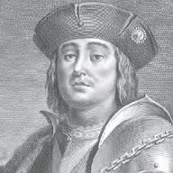
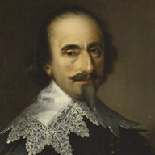
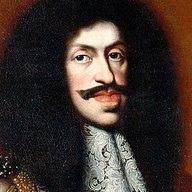
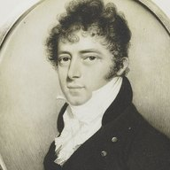
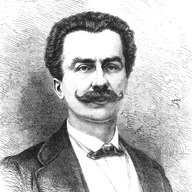

01 Write-ups
- not solvedThe Indus script: Parpola’s decipherment and 3,400 registered testsc. 2600–1900 BCEAsko Parpola’s Dravidian readings checked on two independent corpora, then 2,364 hypotheses registered before testing (1,224 held, 1,140 failed), with Linear B and Ur III seal legends as controls. The grammar a reading must fit is set out: an ending slot chosen by the name’s last sign, line breaks that never split a word unit, numerals fixed with what they count. Seal names are individual compositions, as Linear B personal names are. No sign value is established.
- not solvedLinear A: how far the tablets can be read without knowing the languagec. 1800–1450 BCLinear A is a script with an unknown language, not a cipher, and no bilingual text exists. Tested against a random null, the Linear B sound values carry over (six word matches against 0.49 expected), and 41.8% of the corpus gives sense without the language: numbers, fractions, commodities, KU-RO totals, KI-RO deficits and three place names. Tablet HT 34 contradicts the published values of the fraction signs H and A; the proposed Semitic and Luwian relatives fit no better than Hawaiian or Yoruba. Sixty-seven rounds of pre-registered tests describe the language’s sound shape (rare e and o, standing mainly after R and T; consonant harmony), the Minoan names that survive at Knossos, and the scribes’ bookkeeping, until new tests stopped yielding results.
- not solvedVico to Carbonell, 4 December 13981398A letter of Fr. Pedro de Vico to Guillem Carbonell, canon of Barcelona, among Francesc Climent’s Schism papers, followed, Puig y Puig noted in 1920, by “a ciphered line in an unknown key” that he did not print. The original is not digitised, so there is no ciphertext to attack. Not solved.
- existing decipherment
 Benedict XIII’s cipher letters to Francesc Climent, 1399–14031399–1403Ten letters of the Avignon pope to his agent in Barcelona with ciphered passages in a simple substitution of invented signs, reported by Meister in 1906 with no decipherment. Canon Puig y Puig deciphered and printed them in 1920. His decipherment was checked against his one facsimile page, and his unprinted key rebuilt from it (91% of the page’s cipher letters confirmed). The letters of the pope’s circle, whose key is not shown to be his, have their own pages.
Benedict XIII’s cipher letters to Francesc Climent, 1399–14031399–1403Ten letters of the Avignon pope to his agent in Barcelona with ciphered passages in a simple substitution of invented signs, reported by Meister in 1906 with no decipherment. Canon Puig y Puig deciphered and printed them in 1920. His decipherment was checked against his one facsimile page, and his unprinted key rebuilt from it (91% of the page’s cipher letters confirmed). The letters of the pope’s circle, whose key is not shown to be his, have their own pages. - existing deciphermentSanta Cruz to Climent, 13991399A cipher letter of Fr. P. de Santa Cruz to Francesc Climent, Benedict XIII’s agent, 22 October 1399, among Climent’s Schism papers in the Arxiu Capitular de Barcelona. Canon Puig y Puig deciphered and printed it in 1920 (appendix XXIX): the French ambassadors leave Avignon angry, and the besieged household is left in danger of death. No image of the cipher exists, so its key is not known; it was split from Benedict XIII’s own letters because nothing shows it used his key.
- existing deciphermentJafet to Climent, 14001400A cipher letter of P. Jafet to Francesc Climent, Benedict XIII’s agent, 15 September 1400. Canon Puig y Puig, who deciphered Climent’s cipher letters in 1920, printed only one deciphered sentence of it, in a footnote: some of Climent’s letters had been intercepted that day and recovered. No image of the cipher exists; it was split from Benedict XIII’s own letters because nothing shows it used his key.
- existing decipherment
 Exea to Climent, 14081408A letter entirely in cipher from Alfonso de Exea, archbishop of Seville, to Francesc Climent, Perpignan, 23 August 1408, among Climent’s Schism papers in the Arxiu Capitular de Barcelona: the defection of Pedro de Frías, the “Cardinal of Spain”. Canon Puig y Puig deciphered and printed it in 1920 (appendix LXIV), about 2,090 words, the longest of the fourteen. No image of the cipher exists, so its key is not known.
Exea to Climent, 14081408A letter entirely in cipher from Alfonso de Exea, archbishop of Seville, to Francesc Climent, Perpignan, 23 August 1408, among Climent’s Schism papers in the Arxiu Capitular de Barcelona: the defection of Pedro de Frías, the “Cardinal of Spain”. Canon Puig y Puig deciphered and printed it in 1920 (appendix LXIV), about 2,090 words, the longest of the fourteen. No image of the cipher exists, so its key is not known. - ciphertext-only break · partial
 Siena no. 12: a royal bride for Sforza, Naples 141310 March 1413A letter to the condottiere Sforza Attendolo, Naples, 10 March 1413, wholly in a homophonic cipher of 46 graphic signs, address included (Concistoro 2308 fasc. 2 no. 12, DECODE R4790). George Lasry recovered the key from the ciphertext alone with CTTS and Claude in October 2026; more than 95% of the text reads. King Ladislaus offers Sforza a bride of his own house, a Malatesta or a Brancaleoni girl.
Siena no. 12: a royal bride for Sforza, Naples 141310 March 1413A letter to the condottiere Sforza Attendolo, Naples, 10 March 1413, wholly in a homophonic cipher of 46 graphic signs, address included (Concistoro 2308 fasc. 2 no. 12, DECODE R4790). George Lasry recovered the key from the ciphertext alone with CTTS and Claude in October 2026; more than 95% of the text reads. King Ladislaus offers Sforza a bride of his own house, a Malatesta or a Brancaleoni girl. - ciphertext-only break
 Siena nos. 20 and 23: two documents under one graphical keySpring 1413Two sheets of King Ladislaus’s campaign of spring 1413 (Concistoro 2308 fasc. 2 nos. 20 and 23, DECODE R4808 and R4811): a captain’s letter from Perugia, most probably Sforza’s, and two royal memoranda to keep Paolo Orsini shut in the Marche. George Lasry recovered their common key, 60 signs with nulls and seven name signs, from the ciphertext alone with CTTS and Claude, and deciphered both sheets in full. A few name signs remain open.
Siena nos. 20 and 23: two documents under one graphical keySpring 1413Two sheets of King Ladislaus’s campaign of spring 1413 (Concistoro 2308 fasc. 2 nos. 20 and 23, DECODE R4808 and R4811): a captain’s letter from Perugia, most probably Sforza’s, and two royal memoranda to keep Paolo Orsini shut in the Marche. George Lasry recovered their common key, 60 signs with nulls and seven name signs, from the ciphertext alone with CTTS and Claude, and deciphered both sheets in full. A few name signs remain open. - existing decipherment
 A Catalan letter in transposition, Barcelona, 2 May [1413–16]1413–16A letter to the King of Aragon in plain Catalan, cut into chunks and written down the columns of each block, listed on DECODE as a cipher of unknown type. Xavier de Salas explained the transposition and printed a complete decipherment in 1931. His rule was checked on the archive’s image and reproduces his text.
A Catalan letter in transposition, Barcelona, 2 May [1413–16]1413–16A letter to the King of Aragon in plain Catalan, cut into chunks and written down the columns of each block, listed on DECODE as a cipher of unknown type. Xavier de Salas explained the transposition and printed a complete decipherment in 1931. His rule was checked on the archive’s image and reproduces his text. - existing deciphermentComuel to Climent, December 14151415A cipher letter of Pedro Comuel to Francesc Climent, 21 December 1415, among Climent’s Schism papers in the Arxiu Capitular de Barcelona, about a secret mission to the Queen of Castile. Canon Puig y Puig deciphered and printed it in 1920 (appendix CXVI). No image of the cipher exists, so its key is not known; it was split from Benedict XIII’s own letters because nothing shows it used his key.
- existing deciphermentComuel to Climent, June 14161416A cipher letter of Pedro Comuel to Francesc Climent, 27 June 1416, among Climent’s Schism papers in the Arxiu Capitular de Barcelona, about his coming to Aragon. Canon Puig y Puig deciphered and printed it in 1920 (appendix CXXXV). No image of the cipher exists, so its key is not known; it was split from Benedict XIII’s own letters because nothing shows it used his key.
- key recovered from ciphertext-only · text not readSiena no. 14: the envoys, and Carlo Malatestabefore 1429A whole page in cipher from Sienese envoys to the Priori and Capitano del Popolo (Concistoro 2308 fasc. 2 no. 14, DECODE R4802), written while Carlo Malatesta was alive, so before 1429. No filed key fits; the key was recovered from the ciphertext alone, and 58.6% of the 1,495 signs are in words read as sense, 29.2% more in doubtful words.
- not solvedThe Voynich manuscriptc.1420Statistical tests on the transliteration of Beinecke MS 408; no text was obtained. Plaintext and simple substitution, transposition or abjad renderings of eleven European languages are excluded. A verbose cipher of glyph groups and structured meaningless text remain, about even.
- known key applied · text not readGaleotto da Ricasoli to the Dieci di Balía, 8 September 1423 or 14241423 or 1424A letter of Florence’s envoy to the Count of Urbino. Gabbrielli built a partial key in 1863 from a few glossed words (printed by Meister in 1902), so DECODE’s “non-decrypted” means only that no decipherment is on the record. His key was applied and extended from the glossed runs of three sibling letters (R3755–R3757): 98% of the 99 cipher symbols now have a value. The letter describes Galeotto’s mission to Urbino after the defeat at Zagonara.
- existing deciphermentAlchymey teuczsch, an alchemists’ notebook of 14261426Heidelberg Cod. Pal. germ. 597 hides substance names in three home-made alphabets of graphic signs, and DECODE lists it with no decipherment. Wilhelm Wattenbach deciphered the alphabets in 1869 and printed passages with their plaintexts. The values of the signs were recovered here from the images by aligning them with those plaintexts.
- external key matched
 Pandolfo Malatesta to Gianfrancesco Gonzaga, 22 April 14281428The archbishop of Patras wrote to his brother-in-law, the lord of Mantua, in clear Latin about the peace of Ferrara, and hid his advice in three runs of letter-like signs (DECODE R1854, image 1). This project could not read them; on 5 November 2026 Mark Vladimir Prizmic, working with Claude from Satoshi Tomokiyo’s transcription, sent a key (a homophonic substitution of Latin with two nulls) and a reading, which decodes here: 307 of 308 signs. Pandolfo asks Gonzaga to keep his men-at-arms and proposes that he become king of the Morea.
Pandolfo Malatesta to Gianfrancesco Gonzaga, 22 April 14281428The archbishop of Patras wrote to his brother-in-law, the lord of Mantua, in clear Latin about the peace of Ferrara, and hid his advice in three runs of letter-like signs (DECODE R1854, image 1). This project could not read them; on 5 November 2026 Mark Vladimir Prizmic, working with Claude from Satoshi Tomokiyo’s transcription, sent a key (a homophonic substitution of Latin with two nulls) and a reading, which decodes here: 307 of 308 signs. Pandolfo asks Gonzaga to keep his men-at-arms and proposes that he become king of the Morea. - ciphertext-only breakA Gonzaga agent in Rome to Gianfrancesco Gonzaga, 9 August 14281428A letter wholly in a homophonic cipher of graphic signs, image 2 of DECODE R1854, a record catalogued as one letter of unknown sender. The key was recovered from the ciphertext alone with a solver on a Latin model and checked sign by sign on the image: 1,757 of 1,802 signs read. A countess agrees to her daughter’s match with a Gonzaga son, but her subjects find Mantua too far and the boy too young.
- key from adjacent plaintextAn informant at Forlì to Gianfrancesco Gonzaga, 6 November 14281428An Italian letter with runs of graphic signs, image 3 of DECODE R1854. A faint decipherment written over the signs at the time gave thirty sign values; with a few rare signs from context they decipher 869 of 894 signs. The governor of Forlì favours the marquess’s sons, and an enterprise with the pope, the lord Malatesta and the count of Urbino would make the lord of Mantua a great lord.
- ciphertext-only break · partialFrancesco de’ Cattanei to Gianfrancesco Gonzaga, February 14301430Two letters from Rome in a homophonic cipher of graphic signs, images 4 and 5 of DECODE R1854. The key was recovered from the ciphertext alone and checked sign by sign on the images: 1,704 of 1,736 signs read. Roman news of 1430: a galley lost at Gaeta, the Rimini envoys before the commissaries, and the archbishop of Patras offering his see’s lordship to Venice.
- ciphertext-only break · partialCristofano’s cipher letters to the Signori of Siena, Concistoro 2308 nos. 6 and 24c. 1431–1438Two cipher letters on the war over Lucca, opened by George Lasry with CTTS’s built-in cryptanalysis, refined by Claude Opus 5.5 and GPT-6 Astra: the key was recovered from the ciphertext, then found filed in the same busta as DECODE R4755. Our own transcription, made blind three weeks earlier, decodes to the same letters. Piccinino opens the road to Lucca; the marquis of Mantua and Taliano come to terms with the Duke of Milan. No. 6 reads at 93%, no. 24 at 73%, and its dorse carries the same signature.
- not solved

 Queen María to Alfonso V, Valencia 14351435A register copy with 42 cipher signs in clear Catalan (ACA reg. 3225 f. 59r, DECODE R10171); not solved. The two printed Aragonese keys of the decade were tested and four neighbouring registers searched; the 1429 key’s nomenclator may match the word signs, its alphabet does not. No decipherment is known.
Queen María to Alfonso V, Valencia 14351435A register copy with 42 cipher signs in clear Catalan (ACA reg. 3225 f. 59r, DECODE R10171); not solved. The two printed Aragonese keys of the decade were tested and four neighbouring registers searched; the 1429 key’s nomenclator may match the word signs, its alphabet does not. No decipherment is known. - existing deciphermentSiena no. 8: the Milan–Ferrara league slipc. 1440–41A cipher slip on the league of the Duke of Milan and the Marquis of Ferrara against Venice and the offer of Bianca Maria Visconti to Leonello d’Este (Concistoro 2308 fasc. 2 no. 8, DECODE R4797). The clear memorandum on the same sheet is its contemporary decipherment: aligned sign by sign, it gives a simple substitution key that reads all 166 cipher signs.
- not solvedSiena no. 19: the envoys kept waiting9 March, 1440sSienese envoys report on 9 March that the S. Capitano keeps putting off their leave, then end in four lines of cipher (Concistoro 2308 fasc. 2 no. 19, DECODE R4807). No filed key fits, and 118 signs are too few to break it without one.
- ciphertext-only break · partial
 Two Sforza letters of 4 May 1446: the reply to Zorzo del Maino and Milan to Sforza1446Two cipher slips of the same day from the Archivio Sforzesco (BnF italien 1583 ff. 68 and 70, DECODE R7898 and R7899). George Lasry transcribed both with CTTS and generated the key from the ciphertext; Astra and Fable 5.1 improved it. The reply to Maino weighs Count Francesco’s obligations and asks for eight or ten trusted names; the Milan letter reports a move against Cremona. 721 of 827 cipher signs give sense; 14 sign classes and the f. 70 signature are open.
Two Sforza letters of 4 May 1446: the reply to Zorzo del Maino and Milan to Sforza1446Two cipher slips of the same day from the Archivio Sforzesco (BnF italien 1583 ff. 68 and 70, DECODE R7898 and R7899). George Lasry transcribed both with CTTS and generated the key from the ciphertext; Astra and Fable 5.1 improved it. The reply to Maino weighs Count Francesco’s obligations and asks for eight or ten trusted names; the Milan letter reports a move against Cremona. 721 of 827 cipher signs give sense; 14 sign classes and the f. 70 signature are open. - external key matched · partial
 Filippo Maria Visconti to Francesco Sforza: the cipher slips of November 1446 to March 14471446–1447Twenty parchment slips from the last months of the Visconti duke to his son-in-law, in the Sforza archive taken to Paris in 1499. Their key is an anonymous eighteenth-century copy on DECODE (Carteggio Sforzesco cart. 1597 no. 23, R5323), identified here and checked against three translations of the time. Ten slips had clear copies filed with them; the others are deciphered here for the first time: Cremona, the Dauphin and Asti, Cosimo de’ Medici, the new pope.
Filippo Maria Visconti to Francesco Sforza: the cipher slips of November 1446 to March 14471446–1447Twenty parchment slips from the last months of the Visconti duke to his son-in-law, in the Sforza archive taken to Paris in 1499. Their key is an anonymous eighteenth-century copy on DECODE (Carteggio Sforzesco cart. 1597 no. 23, R5323), identified here and checked against three translations of the time. Ten slips had clear copies filed with them; the others are deciphered here for the first time: Cremona, the Dauphin and Asti, Cosimo de’ Medici, the new pope. - known key appliedContucio to Francesco Sforza, Venice, 7 December 1446: the cipher in his report1446One of Sforza’s envoys at Venice reports his audience with the Signoria in clear, with nine lines in cipher (BnF italien 1583 f. 148, DECODE R7911). The envoys’ own key, an 18th-century copy in Milan headed with their names (cart. 1597 no. 14, DECODE R5314), reads 225 of the 226 cipher signs, and a decipherment of the time over the lines on the back agrees. Venice and Florence wanted to settle “the destruction of the Duke of Milan” and Sforza’s losses, and Cosimo de’ Medici advised what to offer.
- external key matchedFilippo Maria Visconti to Francesco Sforza, Cusago, 23 January 1447 (the second key)1447One slip of the Duke’s is in a different cipher from the rest. It is read with his second key, another anonymous Milanese copy on DECODE (cart. 1597 no. 24, R5324), and checked against the clear text filed beneath it: the Duke will send a further ambassador to the Pope and the King of Aragon for Sforza.
- existing deciphermentMarcolino Barbavara and Pietro Pusterla to Francesco Sforza, January–May 14471447Two Milanese envoys wrote to Sforza in one cipher (key DECODE R1857) during the conclave of 1447: Barbavara from Rome on the death of Eugenius IV, King Alfonso’s 94,000 ducats and the election of Nicholas V, Pusterla from Ferrara on money that never came. Every letter in BnF italien 1584 has a later clear copy or a decipherment of the time beside it. The copies are transcribed and translated here, and the code signs their copyist left blank are filled from the key: the Duca di Ferrara, the Venetians, ‘qui’.
- key from adjacent plaintext · partialNicolò Guarna to Francesco Sforza, Milan, 21 May 14471447Sforza’s envoy at Milan reports an audience with Duke Filippo Maria Visconti: the state in danger, the plague, nine thousand ducats and no more money for a long while, and the Duke’s fervent wish that Sforza come at once. Brice Dudout rebuilt the key from another Guarna letter and its late clear copy and read 616 of about 852 cipher words (72.3%, the unread stretches estimated); the key is partial by our protocol, there is no fresh held-out block, and the end of the letter was already in clear on f. 156.
- key from adjacent plaintext · partialSiena no. 9: Castiglione this winter, with the King of Aragon’s assent1440s–1450s?A hurried slip in the Sienese cipher file (Concistoro 2308 fasc. 2 no. 9, DECODE R4798): two short cipher passages inside clear Italian, with the King of Aragon disguised as Stella. A second hand wrote the decipherment below the lines; George Lasry recovered the 53-sign homophonic key from it with CTTS and Claude: Chastiglone questa vernata, uno altro anno.
- existing deciphermentAndrea da Birago to Francesco Sforza, Pavia, 28 February 14481448The one cipher letter of the 1447–48 Sforza series in Paris with no decipherment beside it (BnF italien 1585 f. 33). Birago’s own key sheet is in Milan (DECODE R5316, never connected to a letter), and with it the cipher reads as the clear letter mounted above it, f. 32: Orlando Pallavicino asks Birago’s help to get home, while the Milanese court Francesco Piccinino. All 513 signs are on the key.
- ciphertext-only breakSiena no. 25: a lord on the road to CasoleundatedAn undated cipher slip to the Signoria of Siena (Concistoro 2308 fasc. 2 no. 25, DECODE R4813), 496 signs in 22 shapes on a running stroke. No filed key fits; the key was recovered from the ciphertext alone, and 96.2% of the signs fall in words that make Italian sense: a lord will ride by Lajatico, Radicondoli and Casole, and Siena is to lay in bread and fodder.
- existing deciphermentSiena no. 10: the taking of MontepulcianoundatedA four-line slip in the Sienese cipher file (Concistoro 2308 fasc. 2 no. 10, DECODE R4799) with one run of 25 cipher signs, deciphered at the time letter by letter above the line: presura di Montepulciano. The gloss gives sixteen sign values; three signs carry no letter.
- not solvedSiena no. 21: “Karissimo come padre”15th centuryA short informal letter that slips into a cipher of crosses, barred uprights and squares and signs itself with a cipher group (Concistoro 2308 fasc. 2 no. 21, DECODE R4809). No filed key fits, and 107 signs are too few to break it without one.
- existing decipherment · partialNicodemo Tranchedini to Francesco Sforza, 28 June 14521452The 28 June postscript discusses the bishops of Parma and Novara, the pope’s response, and the bishop’s reputation.
- not solvedSiena no. 7: the orator at Milan1450sA despatch from the Sienese embassy at Milan to the Officials of the Balìa with eleven lines of cipher and a faint interlinear gloss (Concistoro 2308 fasc. 2 no. 7, DECODE R4796). The embassy’s filed key of 1454 and five other keys fail the gloss, and annealing with its nine values fixed does not converge.
- key recovered from adjacent plaintext · text not readGalgano Borghesi to Leonardo Benvoglienti, 14561456A Sienese envoy’s letter from King Alfonso’s Naples, 12 May 1456 (Concistoro 2308 fasc. 2 no. 4, DECODE R4793), clear Italian with fifteen cipher runs and Latin code words. No filed key fits; an alphabet fragment written below the text and the recipient’s glosses gave the key, and 114 of the 144 cipher signs read.
- not solvedA Sforza chancery letter in graphic signs (cart. 1597, R5464)1450s–60sA long Italian letter entirely in about 60 graphic signs from the Sforza chancery box in Milan. Shuffled-token controls give Italian, a sign reader and a key estimated from the ciphertext alone reach 24% dictionary-word coverage, and a hand correction of the sign boxes adds only a point: the DECODE scans are too small (signs 15–25 px) for a reading. The 115 key sheets in the box are 19th-century reconstructions and do not fit.
- key from adjacent plaintext · partial
 Ferdinand to John II, Hostalric 1473 and Zaragoza 14741473–74Two cipher passages from the young Ferdinand to his father John II (BNE MSS/20211/64 and /73), each in its own homophonic alphabet. Both keys were rebuilt from the interlinear notes of a second hand, the 1474 one aligned on the clear paragraph at the foot of the page. Ferdinand brings 800 horse for the relief of Perpignan, and a year later asks that Mossèn Santcliment be sent to Naples about his sister Juana’s marriage. Contributed by Michael Brackx; two signs of the 1473 line 5 and two doubtful words of 1474 stay open.
Ferdinand to John II, Hostalric 1473 and Zaragoza 14741473–74Two cipher passages from the young Ferdinand to his father John II (BNE MSS/20211/64 and /73), each in its own homophonic alphabet. Both keys were rebuilt from the interlinear notes of a second hand, the 1474 one aligned on the clear paragraph at the foot of the page. Ferdinand brings 800 horse for the relief of Perpignan, and a year later asks that Mossèn Santcliment be sent to Naples about his sister Juana’s marriage. Contributed by Michael Brackx; two signs of the 1473 line 5 and two doubtful words of 1474 stay open. - ciphertext-only break · partialNot established to Not established, 18th century?1476An alchemical recipe using mercury, with promises of success and a warning against misuse.
- ciphertext-only break · partial
 Siena no. 11: Donato Acciaiuoli to Lorenzo de’ Medici, 147813 June 1478A Florentine letter in the Sienese cipher file: the orator Donato Acciaiuoli writes from Rome to Lorenzo de’ Medici seven weeks after the Pazzi conspiracy (Concistoro 2308 fasc. 2 no. 11, DECODE R4800). George Lasry recovered the homophonic key of its two cipher blocks from the ciphertext alone with CTTS and Claude, about 90% certain: Forlì and Faenza to send two squadrons each, Gianfrancesco Gonzaga offers 80 men-at-arms for 7,000 ducats.
Siena no. 11: Donato Acciaiuoli to Lorenzo de’ Medici, 147813 June 1478A Florentine letter in the Sienese cipher file: the orator Donato Acciaiuoli writes from Rome to Lorenzo de’ Medici seven weeks after the Pazzi conspiracy (Concistoro 2308 fasc. 2 no. 11, DECODE R4800). George Lasry recovered the homophonic key of its two cipher blocks from the ciphertext alone with CTTS and Claude, about 90% certain: Forlì and Faenza to send two squadrons each, Gianfrancesco Gonzaga offers 80 men-at-arms for 7,000 ducats. - key from external plaintext · partialGiovanni Mazzinghi and an unsigned writer to the Medici, Rome, January 1478 (1479)1478–79Two bare cipher letters from Rome to the Medici in the winter after the Pazzi conspiracy, the first of them warning of a bull annulling the Church’s privileges and of a plot named by two Pistoiese. The key was fitted on the contemporary decipherment of a sibling letter and checked by an independent ciphertext-only break: 76.1% of 1,647 signs read, the key partial.
- existing decipherment

 Matthias Corvinus to Ercole I d’Este, 1 June 14821482The King of Hungary on the help he can send Ferrara against Venice, with the military passages in a homophonic substitution of invented signs. The decipherment was printed in 1877 and 1895. The runs were transcribed from the image and a working key rebuilt against the print, which corrects the edition in four places.
Matthias Corvinus to Ercole I d’Este, 1 June 14821482The King of Hungary on the help he can send Ferrara against Venice, with the military passages in a homophonic substitution of invented signs. The decipherment was printed in 1877 and 1895. The runs were transcribed from the image and a working key rebuilt against the print, which corrects the edition in four places. - existing decipherment

 Beatrice d’Aragona to Eleonora, Pozsony, May–June 14821482Two letters of the Queen of Hungary to her sister at Ferrara (DECODE R1140, R1141), whose cipher passages were printed deciphered in Magyar Diplomácziai Emlékek III (1877); the prints were matched to the manuscript images. Matthias offers Swiss and cavalry against Venice if the league pays at Milan.
Beatrice d’Aragona to Eleonora, Pozsony, May–June 14821482Two letters of the Queen of Hungary to her sister at Ferrara (DECODE R1140, R1141), whose cipher passages were printed deciphered in Magyar Diplomácziai Emlékek III (1877); the prints were matched to the manuscript images. Matthias offers Swiss and cavalry against Venice if the league pays at Milan. - key from adjacent plaintext · partialNicolò Sadoleto at Pozsony, 14821482Ferrara’s envoy to Matthias Corvinus writes in a substitution of graphic signs with homophones. The key was recovered by aligning two letters with their contemporary clear copies in the same file; two of the four DECODE targets proved to have contemporary decipherments. The letter of 16 July 1482, which has none, is deciphered except a few words under stains: Venice offered Matthias Veglia, a fleet command for his son and 100,000 ducats a year.
- existing deciphermentBeatrice d’Aragona to Eleonora, Buda, 8 March 14861486A letter of the Queen of Hungary to her sister (DECODE R1142) whose cipher passages, on bringing Andriolo to Hungary, were printed deciphered in 1878, its closing and plain body separately. It is written in the sisters’ old cipher and encloses a new one.
- existing deciphermentBeatrice d’Aragona to Eleonora, Buda, 2 May 14861486A letter of the Queen of Hungary to her sister (DECODE R1143) whose cipher was deciphered at the time on slips laid over it, and printed in 1877: Milanese support for Ippolito against Cardinal Ascanio, and Andriolo to come.
- known key applied · partialMaffeo da Treviglio at Buda to Ludovico Sforza, 1489–14901489–90Two ciphered despatches of the Milanese ambassador to Matthias Corvinus with no contemporary decipherment. Somogyi published the key in 2016 only as numbers; matching her numbering to the symbols of a letter with a clear copy turned it back into a usable key, which was applied. The letter of 12 January 1490 is deciphered in gist throughout and the four-page letter of 22 November 1489 in part: peace with the Emperor, the Diet, and John Corvinus’s marriage.
- key from external plaintext · partialMaffeo da Treviglio to Tamás Bakócz, 30 November 14901490A four-page Latin cipher letter on the Sforza marriage alliance with the new king of Hungary, with the dowry raised from 150,000 to 200,000 ducats. Harrison Bornstein recovered the key from the clear minute kept in Milan and read 561 of 624 words (89.9%), under the 95% bar.
- not a cipherCostabili to Ercole d’Este: three clear letters, 14931493Three DECODE records labelled partially decrypted contain clear Italian chancery letters. Both sides of each letter were inspected. The three 1493 letters are removed from the open Costabili cipher group; its earlier cipher despatches remain open.
- ciphertext-only break
 Siena no. 18: the League articles of Maximilian INovember 1496The articles Maximilian I put to the Sienese orators at Pisa in November 1496, subscribed by his secretary Niklas Ziegler, with every sensitive word in cipher (Concistoro 2308 fasc. 2 no. 18, DECODE R4806). The homophonic key was recovered from the ciphertext alone twice: here in September 2026 (87.1%), and independently by George Lasry with CTTS and Claude in October 2026, whose complete reading and dating the page gives; the two keys agree on 35 of his 38 letter signs. Siena to join the Holy League, lend the King 5,000 ducats and open war at Ponte a Valiano.
Siena no. 18: the League articles of Maximilian INovember 1496The articles Maximilian I put to the Sienese orators at Pisa in November 1496, subscribed by his secretary Niklas Ziegler, with every sensitive word in cipher (Concistoro 2308 fasc. 2 no. 18, DECODE R4806). The homophonic key was recovered from the ciphertext alone twice: here in September 2026 (87.1%), and independently by George Lasry with CTTS and Claude in October 2026, whose complete reading and dating the page gives; the two keys agree on 35 of his 38 letter signs. Siena to join the Holy League, lend the King 5,000 ducats and open war at Ponte a Valiano. - ciphertext-only break · partialAn unaddressed Spanish cipher of 8 January 1497 (Espagnol 318 no. 95)1497A leaf of dense signs with no clear word (BnF Espagnol 318 no. 95), dated 8 January 1497. George Lasry recovered its homophonic alphabet from the ciphertext alone with CTTS and in October 2026 deciphered the whole recto; Michael Brackx deciphered the verso with the same alphabet. Famine, the French bid for the city’s silk workers, the King’s slowness and the cardinal of Santa Cruz’s peace mission. Five name codes stay unidentified.
- existing decipherment
 Federico of Naples to the Catholic Monarchs, 11 January 1497 (Espagnol 318 no. 5)1497The king of Naples had his secret letter about the marriage of his son to a Spanish infanta enciphered in the Spanish ambassador Joan Ram Escrivà’s own cipher (BnF Espagnol 318 no. 5). Ivan Parisi identified the cipher and printed the whole letter in 2020; his article was found here from the shelfmark, and his nomenclator list matches the leaf.
Federico of Naples to the Catholic Monarchs, 11 January 1497 (Espagnol 318 no. 5)1497The king of Naples had his secret letter about the marriage of his son to a Spanish infanta enciphered in the Spanish ambassador Joan Ram Escrivà’s own cipher (BnF Espagnol 318 no. 5). Ivan Parisi identified the cipher and printed the whole letter in 2020; his article was found here from the shelfmark, and his nomenclator list matches the leaf. - not solvedFerdinand II to Garcilaso de la Vega, 31 August 149831 August 1498The letter to the ambassador in Rome that Parisi printed in 2004 has a head line and a ten-line postscript in a second cipher, Garcilaso’s own, which he could not decipher. Both were transcribed (315 signs) and compared with every key reachable online, including Galende’s whole BRAH 9/15 file, found on DECODE. None fits, and a ciphertext-only annealer fails a control of the same size; the key is in Garcilaso’s deciphered letters of 1496 at the RAH, not digitised. Not solved.
- known key applied · text not read
 The Great Captain to Lorenzo Suárez, 17 August 1500 (Espagnol 318 no. 92)1500Gonzalo Fernández de Córdoba’s price for taking the fleet against the Turk: harbours in Italy for his sick, wounded and stores (BnF Espagnol 318 no. 92). The cipher is the Cifra general printed by Galende Díaz, confirmed against a later hand’s interlinear glosses; about three quarters of the letter is deciphered with it. The volume’s other ciphered letters, in other ciphers, have their own pages.
The Great Captain to Lorenzo Suárez, 17 August 1500 (Espagnol 318 no. 92)1500Gonzalo Fernández de Córdoba’s price for taking the fleet against the Turk: harbours in Italy for his sick, wounded and stores (BnF Espagnol 318 no. 92). The cipher is the Cifra general printed by Galende Díaz, confirmed against a later hand’s interlinear glosses; about three quarters of the letter is deciphered with it. The volume’s other ciphered letters, in other ciphers, have their own pages. - key recovered from ciphertext-only · text not readThe viceroy of Sicily to Ferdinand, Messina, 27 April 15031503A four-page letter in clear and cipher (BnF Espagnol 318 no. 94), written the day before Cerignola. Michael Brackx recovered its homophonic alphabet of 39 sign classes from the ciphertext alone and read about twenty code groups from context; the alphabet was found again here from random starts. The letter follows the aftermath of Seminara: the looting, an inquiry under oath, the prisoners in the castle, Portocarrero’s death and the quarrel over his post. About 90 code groups stay open.
- known key applied · partial
 Isabella of Castile to the Duke of Estrada, 20 August 15031503The letter Bergenroth could not decipher in 1862 survives in three ciphered copies in AGS Patronato Real leg. 53 doc. 69. Its key is the Cifra general de los Reyes Católicos printed by Galende Díaz in 1994; applied unchanged, it decodes every code group, while about half the runs of single-letter symbols are too small to decipher on the online images. The letter concerns the French attack on Roussillon and asks Henry VII for two thousand English foot.
Isabella of Castile to the Duke of Estrada, 20 August 15031503The letter Bergenroth could not decipher in 1862 survives in three ciphered copies in AGS Patronato Real leg. 53 doc. 69. Its key is the Cifra general de los Reyes Católicos printed by Galende Díaz in 1994; applied unchanged, it decodes every code group, while about half the runs of single-letter symbols are too small to decipher on the online images. The letter concerns the French attack on Roussillon and asks Henry VII for two thousand English foot. - not solvedLorenzo Suárez to the Catholic Monarchs, Venice, 1504 (Espagnol 318 no. 93)1504A letter of Lorenzo Suárez at Venice (1504) wholly in a cipher of Ferdinand’s secretariat (BnF Espagnol 318 no. 93). Its key is not identified: the code initials exclude the two keys in print, a homophonic solver shows the code groups are whole words, and the key recovered for no. 94 does not fit. The suspected Gran cifra survives only in a Madrid manuscript not served online.
- not a cipher
 Beatrice d’Aragona to Ippolito d’Este, Naples, 15051505DECODE R1154, catalogued as a cipher letter of 1504, is plain Italian of 29 May 1505 to Cardinal Ippolito d’Este, printed by Berzeviczy in 1914. The queen writes no more because she has no cipher.
Beatrice d’Aragona to Ippolito d’Este, Naples, 15051505DECODE R1154, catalogued as a cipher letter of 1504, is plain Italian of 29 May 1505 to Cardinal Ippolito d’Este, printed by Berzeviczy in 1914. The queen writes no more because she has no cipher. - known key applied · partialDe Puebla to Almazán, London, 21 April 15061506Ferdinand’s ambassador in London writes to the King’s secretary while Philip and Juana wait at Falmouth to sail for Castile (AGS Patronato Real leg. 54 doc. 78). The cipher passages, in Puebla’s First Cipher, were deciphered with Satoshi Tomokiyo’s reconstruction of the table: Katharine’s people had her write letters for their own interest, and her household is finely dressed, the day before she told her father she was all but naked. Contributed by WAINUT; the clear text around the cipher and the lines 11–17 fragments stay open.
- key from adjacent plaintext · partialFerdinand the Catholic to Jerónimo de Vich, 1511–121511–12Three letters wholly in a nomenclator of homophones and three-letter code groups. The key was recovered by aligning two sibling letters with the clerk’s decipherment filed after them, then applied to the three; 96.5% of their tokens have a value. Julius II’s cardinals, Ravenna, the Sforza restoration and spiritual war on Louis XII. The 1515 letter is in another system and has its own page.
- key recovered from ciphertext-only · text not readFerdinand the Catholic to Jerónimo de Vich, Pedrezuela, 15151515Ferdinand’s letter of 26 October 1515 to his ambassador at Rome, almost all in cipher and with no decipherment (AHN Estado 8715 N.73). It is not in the 1511–12 nomenclator but in a code of three-letter groups and signs that no deciphered letter shares. Transcribed in full, 3,177 tokens. Michael Brackx recovered its symbol alphabet from the ciphertext alone: the code groups stand for syllables inside spelled words as well as for words. A printed quotation of the letter then confirmed a long stretch; it is still decoded, not read.
- existing decipherment

 Cardinal Schiner to Henry VIII, Trent, 14 June 15161516Schiner’s autograph letter on Maximilian’s offer of Milan and the Empire to Henry, which Letters and Papers called “not deciphered”. Büchi and Schiess deciphered it and printed it in full in 1925. That printed decipherment was found; the leaf is not digitised, so it could not be checked against the cipher.
Cardinal Schiner to Henry VIII, Trent, 14 June 15161516Schiner’s autograph letter on Maximilian’s offer of Milan and the Empire to Henry, which Letters and Papers called “not deciphered”. Büchi and Schiess deciphered it and printed it in full in 1925. That printed decipherment was found; the leaf is not digitised, so it could not be checked against the cipher. - known key applied
 Diego López de Ayala to Cardinal Cisneros, 30 August 15161516A five-page letter in invented signs (AGS Estado leg. 496 fol. 22, DECODE R9954), catalogued with no decipherment. Tomokiyo’s key for Ayala’s letter of 12 July was applied unchanged and the letter was deciphered but for seven words. A Simancas decipherment of 1849, printed in 1875 and found afterwards, settles those words and otherwise agrees.
Diego López de Ayala to Cardinal Cisneros, 30 August 15161516A five-page letter in invented signs (AGS Estado leg. 496 fol. 22, DECODE R9954), catalogued with no decipherment. Tomokiyo’s key for Ayala’s letter of 12 July was applied unchanged and the letter was deciphered but for seven words. A Simancas decipherment of 1849, printed in 1875 and found afterwards, settles those words and otherwise agrees. - key from adjacent plaintext · partialThomas Spinelly to Henry VIII, Brussels 15171517A clear English despatch of 1 February 1517 (Cotton MS Galba B V, DECODE R8416) with five lines in a simple substitution of invented signs. The key was recovered from a crib in the clear text of the same page, the word ‘audensier’, and the passage deciphered in full: the King’s entry into Brussels expected that week and the Emperor to go to Cambrai about the 15th.
- known key applied · partialTwo ciphers in the Strängnäs sequentiary, 15171517Uppsala UB C 513 (DECODE R4349) has a dating colophon in which every vowel is written as the next letter; the Uppsala catalogue printed the rule and the decipherment in 1992, and the colophon was transcribed and decoded to the same text. The six signs closing an Old Swedish note pasted on f. 1r, DECODE’s “six symbols”, are too few to decipher.
- external key matched · partialBenedetto Fantini, Buda and Eger, 1517–181517–1518Two letters of an Este agent in Hungary in a two-tier cipher of graphic signs (DECODE R1126, R1127, catalogued as ‘Jantini’); not solved. The cipher was transcribed and tried ciphertext-only and with Caprile’s 1519 values; controls show this syllabic system with word codes cannot be solved without a key or crib.
- key recovered from ciphertext-only · text not read

 Ramón de Cardona to Charles I, Naples, 1517 and 15201517–1520Two letters of the viceroy of Naples to the young Charles I of Spain, of 5 October 1517 and 18 June 1520 (BNE MSS/20210/11/1 and /4), each with passages in cipher and no decipherment on the pages. Michael Brackx recovered most of the key from the ciphertext alone, with Claude Code: letter signs and three-letter code groups that stand for whole words, in the family of Lannoy’s Naples cipher. Two names confirm it, Borghese Petrucci and Giampaolo Baglioni; about half the sentences still have holes, so it is decoded, not read.
Ramón de Cardona to Charles I, Naples, 1517 and 15201517–1520Two letters of the viceroy of Naples to the young Charles I of Spain, of 5 October 1517 and 18 June 1520 (BNE MSS/20210/11/1 and /4), each with passages in cipher and no decipherment on the pages. Michael Brackx recovered most of the key from the ciphertext alone, with Claude Code: letter signs and three-letter code groups that stand for whole words, in the family of Lannoy’s Naples cipher. Two names confirm it, Borghese Petrucci and Giampaolo Baglioni; about half the sentences still have holes, so it is decoded, not read. - key from adjacent plaintext · partial
 Ernestus dux and Joachimus; probably Ernst of Brunswick-Lüneburg and Joachim von Maltzan to Francis I, King of France, Eve of Saint Paul, at five in the morning; no year. Context suggests c.1518–1520;1519 remains1519A German princely league would admit new members by majority consent, promise pensions, and later bring in the French king.
Ernestus dux and Joachimus; probably Ernst of Brunswick-Lüneburg and Joachim von Maltzan to Francis I, King of France, Eve of Saint Paul, at five in the morning; no year. Context suggests c.1518–1520;1519 remains1519A German princely league would admit new members by majority consent, promise pensions, and later bring in the French king. - not solved
 Giuliano Caprile, Eger, 9 March 15191519Seven lines in Giuliano Caprile’s 1519 two-tier cipher (DECODE R1128), the only one of his 1519 letters without a decipherment; the others were deciphered in 1882. Tables of values rebuilt from two of those decipherments give no Italian on it against random-key controls. Attempted, not solved; the key can still be rebuilt from the 1882 copies.
Giuliano Caprile, Eger, 9 March 15191519Seven lines in Giuliano Caprile’s 1519 two-tier cipher (DECODE R1128), the only one of his 1519 letters without a decipherment; the others were deciphered in 1882. Tables of values rebuilt from two of those decipherments give no Italian on it against random-key controls. Attempted, not solved; the key can still be rebuilt from the 1882 copies. - not solvedAlfonso Cistarelli, Eger, 25 July 15201520A page of two-digit figures from Cardinal Ippolito d’Este’s agent at Eger (DECODE R1137). A ciphertext-only search finds more language than in a shuffled control but only phrases, cribs do no better than control words, and the only photograph does not settle the digits. A second letter in the same figures, Kraków 14 October 1520 to Duke Alfonso I, survives online only as a photocopy with one legible cipher line. Attempted, not solved.
- key from external plaintext · partial
 Giuliano Caprile’s sign cipher, 1520–15211520–21The 1520–21 letters of Cardinal Ippolito d’Este’s secretary in Hungary, in a homophonic cipher of graphic signs. One postscript had been deciphered by Judit W. Somogyi in 2025; the key was rebuilt by aligning the ciphertext with her text. It deciphers 161 of the 166 cipher signs of a letter of 25 February 1521 and most of two more (89.7% and 66.9%).
Giuliano Caprile’s sign cipher, 1520–15211520–21The 1520–21 letters of Cardinal Ippolito d’Este’s secretary in Hungary, in a homophonic cipher of graphic signs. One postscript had been deciphered by Judit W. Somogyi in 2025; the key was rebuilt by aligning the ciphertext with her text. It deciphers 161 of the 166 cipher signs of a letter of 25 February 1521 and most of two more (89.7% and 66.9%). - key from external plaintext · partialAdrian of Utrecht to Charles V, 9 September 15201520Six cipher lines in the regent of Castile’s letter during the Comuneros revolt, printed in 1897 without them as not translatable. Brice Dudout rebuilt the Cardinal’s dotted trigraph code from his other letters, validated it on a fresh pair (0.882 of characters), and read the paragraph: 44 of 46 words.
- ciphertext-only breakLope Hurtado de Mendoza to Charles V, Tordesillas, 10 December 15201520A letter wholly in cipher, written five days after the governors’ army retook Tordesillas from the Comuneros and sent with a clear letter of the same day that Danvila printed. An archivist’s slip points to the key of a letter of 23 September, which does not fit. Brice Dudout rebuilt the key, a homophonic letter substitution of about 37 signs with dotted sigla for persons, from the ciphertext alone and checked it on lines kept out of the work; about 97.7% of some 920 cipher words give sense. The Admiral wants a settlement with the Junta, the Marquis of Denia is hated, the army is badly commanded, and the vacant sees are to be held back.
- key from external plaintext
 Adrian of Utrecht and the governors of Castile to Charles V, 15211521A letter almost entirely in a nomenclator, deciphered in the nineteenth century by Claudio Pérez Gredilla and printed in 1899. The key was rebuilt by aligning the ciphertext with his text. It corrects the dead king from England to Manuel I of Portugal and decodes or corrects about seventeen of the groups he left blank.
Adrian of Utrecht and the governors of Castile to Charles V, 15211521A letter almost entirely in a nomenclator, deciphered in the nineteenth century by Claudio Pérez Gredilla and printed in 1899. The key was rebuilt by aligning the ciphertext with his text. It corrects the dead king from England to Manuel I of Portugal and decodes or corrects about seventeen of the groups he left blank. - ciphertext-only breakRodrigo Niño to Charles V, Naples, 19 March 15221522Solved by George Lasry: transcribed with CTTS and the initial key recovered with its built-in cryptanalysis. GPT 6.1 Sol and Anthropic Opus 5.5 refined the key and translation. The eight-line plea for rear-guard pay has 260 elements and 49 key entries; one p/y sign remains ambiguous. Related prior published work is acknowledged; no first-publication claim.
- existing deciphermentLa Chaulx to Charles V, Vitoria, 28 May 15221522DECODE R1187, catalogued as a Spanish cipher letter of 1 January 1522, is a French despatch, mostly on Adrian VI’s departure for Rome, with five passages in a homophonic cipher. The contemporary decipherment of all five is bound with it; it was checked against the first cipher line, and the key was not rebuilt.
- existing decipherment · partialAlonso Sánchez at Venice to Charles V, 15221522Twenty-nine DECODE records catalogued as ciphertexts with no decipherment; most have a contemporary decipherment bound with them, and Satoshi Tomokiyo published the key in 2025. His key was applied to two letters outside his coverage, R9653 (the siege of Rhodes) and R9635, which were deciphered in part. The alphabetical order of the nomenclator predicted the missing numeral codes, three of them then found in the text, and the Lope Hurtado letters in the run use a different cipher.
- key from adjacent plaintext · partialLope Hurtado de Mendoza at Rome to Charles V, 15221522Nine letters of the imperial agent in Rome, bound and catalogued among Alonso Sánchez’s Venice letters but in a different nomenclator, for which no published key was found. The key was recovered from adjacent plaintext: two of the letters have the clerk’s full contemporary clear version bound beside them. Four letters are complete in content and a fifth, R9649, is deciphered in full from its own clear; the other four are deciphered in part (73–80% of tokens; 76% over the five), among them a letter from Genoa of 13 September 1522 reporting Adorno’s plan to invade France through Provence.
- external key matched · partialThe Duke of Sessa to Charles V, February–April 15231523DECODE R9660–R9666, catalogued as seven letters of “Luis Fernández?” to an unknown recipient, are the Duke of Sessa’s despatches to Charles V in RAH Salazar A-27; Bergenroth calendared four of them in 1866 from the court’s decipherments. The cipher is Sessa’s 1524 nomenclator, and the key recovered earlier in this project was applied: the uncalendared 26 April letter is decrypted in full, the 20 February letter about 57%.
- known key applied · partialAlonso Sánchez at Venice to Charles V, May–August 15231523Ten records catalogued as ciphertexts to an unknown recipient are Sánchez’s despatches to the Emperor in his 1522 cipher, and Tomokiyo’s key applies unchanged. Seven were calendared by Bergenroth in 1866 from the contemporary decipherings. Of the three August letters not in the Calendar, Sánchez’s own of 16 August was transcribed and its code groups decoded; its spelled runs are deciphered in part.
- ciphertext-only break · partialLope de Soria to Charles V, Genoa, 15231523Five despatches from Genoa, June to August 1523 (DECODE R9488–R9498), in two ciphers; no earlier decipherment was found. The key of the earlier cipher was recovered from the ciphertext alone with a solver scored on 1520s Castilian; the key of the later one was rebuilt from a Soria letter of December 1523 filed with the court’s decipherment. The June and July letters are deciphered nearly throughout, the later ones in part: the Venetian league, Siena, money for the Swiss and Andrea Doria’s offer of his galleys.
- key from adjacent plaintext · partialLope Hurtado de Mendoza at Rome to Charles V and Gattinara, 1523–241523–24Eight letters catalogued as June 1523 ciphertexts to an unknown recipient are Hurtado’s letters of May 1523 to March 1524 to Charles V and the Grand Chancellor Gattinara, in the system of 1522 with a changed key. The key was recovered from adjacent plaintext, the clerk’s clear version of part of the letter of 5 February 1524. Two letters were calendared by Bergenroth from contemporary decipherments; the other six are partly deciphered, from a quarter to two thirds of each.
- key from adjacent plaintext · partialThe Duke of Sessa to Charles V, Rome, 18 April 15241524Catalogued on DECODE as a letter of Luis Fernández of April 1424, this is the Duke of Sessa’s despatch of 18 April 1524 and its duplicate. The key was recovered from adjacent plaintext: sibling letters of Sessa in the same volume carry the court’s decipherments, which gave about 110 code groups and nearly the whole alphabet. The nine cipher lines are deciphered word by word except two code groups and one clause, and two longer despatches of 14 April 1524 and 24 February 1525 were then deciphered in part with the same key (87.5% and 77.2% of their tokens).
- key from external plaintext

Hugo de Moncada to Charles V, Monaco 15241524Moncada’s letter of 6 October 1524 (BNE MSS/20213/12, DECODE R1191), half in a homophonic cipher of Spanish letters with a few code groups. The secretariat’s decipherment was printed in 1854 with one gap; the key was recovered by aligning the 442 cipher signs with that print and then applied to the gap. Bourbon had asked to be carried to Spain in Moncada’s galleys; 428 of the 442 signs have a value. - ciphertext-only break
 Charles of Egmond to the grand master of France18 July (?) · year unknownGeorge Lasry recovered the key to this cipher in 2023; this is an independent re-solution. The key, a simple substitution of graphic signs with nulls, was recovered again from the ciphertext alone, and the French body and ciphered address of BnF fr. 3015 no. 8 were decrypted in full. Charles asks for continued support in the war and commends his ambassador, the commander of Saint John; Arnhem, apparently 18 July, year unknown.
Charles of Egmond to the grand master of France18 July (?) · year unknownGeorge Lasry recovered the key to this cipher in 2023; this is an independent re-solution. The key, a simple substitution of graphic signs with nulls, was recovered again from the ciphertext alone, and the French body and ciphered address of BnF fr. 3015 no. 8 were decrypted in full. Charles asks for continued support in the war and commends his ambassador, the commander of Saint John; Arnhem, apparently 18 July, year unknown. - ciphertext-only break · partialGiovanni, cardinal Salviati to Not established, 16 October 15251525Salviati discusses restoration of possession and imperial territory, defence and government of the state, nobles and people, captains and guards, the archbishop of Toledo, Modena, and correspondence sent by land and sea.
- not solvedMellon MS 29: the cipher names in Frater Elias’s Lumen luminumc. 1525An alchemical codex of about 1525, catalogued on DECODE as a letter; its prologue gives zodiac cover names and two recipes in about 234 letters of cipher. Substitution, homophonic, polyalphabetic and Alberti-disk solutions against Italian and Latin gave no plaintext; not solved, and the strings may be invented names.
- known key applied · partial
 Nicolas Raince to Montmorency, Rome, 15261526The ciphered passages of two despatches from Rome, 13 May and 20 November 1526 (BnF fr. 2984), have no known decipherment. Tomokiyo’s published key, first taken off his table one column out, was re-measured, checked symbol by symbol on the leaf and applied. The decode made here had gaps in nearly every line; Brice Dudout’s later full-resolution readings (27–28 October 2026) read 99.1% of the words of the 13 May passage and 99.3% of the 20 November passage, and two word signs absent from the key stay open.
Nicolas Raince to Montmorency, Rome, 15261526The ciphered passages of two despatches from Rome, 13 May and 20 November 1526 (BnF fr. 2984), have no known decipherment. Tomokiyo’s published key, first taken off his table one column out, was re-measured, checked symbol by symbol on the leaf and applied. The decode made here had gaps in nearly every line; Brice Dudout’s later full-resolution readings (27–28 October 2026) read 99.1% of the words of the 13 May passage and 99.3% of the 20 November passage, and two word signs absent from the key stay open. - not solvedGilbert Bayard to Montmorency, Toledo 15261526Three lines of cipher in graphic signs in a copy of a letter from the Toledo negotiations (BnF Clairambault 325 f. 84, DECODE R2285); not solved. The 1847 edition omits the cipher. The 56 signs were transcribed; the Calvimont and Raince keys of the same years do not fit, and the passage is too short for a ciphertext-only solution.
- ciphertext-only break
 Lope de Soria to Charles de Lannoy, Genoa, 7 March 15271527The imperial ambassador in Genoa writes to the viceroy of Naples eight weeks before the Sack of Rome, with about a hundred lines in a cipher nobody had read (Biblioteca Estense, Autografoteca Campori, Lettera L, cc. 9–12). Its key was recovered here from the ciphertext alone: letter signs by simulated annealing on a model of 1520s Spanish, code groups from context; 95.5% of the cipher tokens read. Genoa will arm galleys if Charles V pays half, asks for the six imperial galleys at Naples, and fears the Pope’s truce will leave Savona to France.
Lope de Soria to Charles de Lannoy, Genoa, 7 March 15271527The imperial ambassador in Genoa writes to the viceroy of Naples eight weeks before the Sack of Rome, with about a hundred lines in a cipher nobody had read (Biblioteca Estense, Autografoteca Campori, Lettera L, cc. 9–12). Its key was recovered here from the ciphertext alone: letter signs by simulated annealing on a model of 1520s Spanish, code groups from context; 95.5% of the cipher tokens read. Genoa will arm galleys if Charles V pays half, asks for the six imperial galleys at Naples, and fears the Pope’s truce will leave Savona to France. - existing decipherment
 Ghinucci, Lee and Poyntz to Wolsey, 15271527DECODE R8565, catalogued as a letter of Francis Poyntz to an unknown recipient, is the second part of the three ambassadors’ despatch to Wolsey from Valladolid, 17 July 1527. Its short passages in the Lee–Worcester cipher were deciphered on arrival by Brian Tuke, and the decipherment is printed in Letters and Papers IV no. 3271. The letter was identified and the catalogue corrected.
Ghinucci, Lee and Poyntz to Wolsey, 15271527DECODE R8565, catalogued as a letter of Francis Poyntz to an unknown recipient, is the second part of the three ambassadors’ despatch to Wolsey from Valladolid, 17 July 1527. Its short passages in the Lee–Worcester cipher were deciphered on arrival by Brian Tuke, and the decipherment is printed in Letters and Papers IV no. 3271. The letter was identified and the catalogue corrected. - key from external plaintext
 Ghinucci to Wolsey, 22 July 15271527Girolamo Ghinucci, Bishop of Worcester, to Cardinal Wolsey: the duplicate of 22 July 1527 in Cotton MS Vespasian C IV (DECODE R8613), “undeciphered” in Letters and Papers and listed on DECODE as not decrypted. The cipher is syllabic, consonant signs with superscript digits; the key was rebuilt from three of Ghinucci’s other letters whose decipherments are printed or interlined, and 797 of its 814 signs (97.9%) give Latin.
Ghinucci to Wolsey, 22 July 15271527Girolamo Ghinucci, Bishop of Worcester, to Cardinal Wolsey: the duplicate of 22 July 1527 in Cotton MS Vespasian C IV (DECODE R8613), “undeciphered” in Letters and Papers and listed on DECODE as not decrypted. The cipher is syllabic, consonant signs with superscript digits; the key was rebuilt from three of Ghinucci’s other letters whose decipherments are printed or interlined, and 797 of its 814 signs (97.9%) give Latin. - external key matched · partial
 Gilino to Francesco II Sforza, 15 September 15271527A Milanese agent’s report from Charles V’s court to Francesco II Sforza (Cotton MS Vespasian C IV ff. 214–218, DECODE R8572), listed on DECODE as not decrypted. It was deciphered with a Sforza key found on DECODE under another agent (R5258): 96.1% of its signs. George Lasry had independently rebuilt the same key from the ciphertext, and his full transcription and Italian reading are on the page.
Gilino to Francesco II Sforza, 15 September 15271527A Milanese agent’s report from Charles V’s court to Francesco II Sforza (Cotton MS Vespasian C IV ff. 214–218, DECODE R8572), listed on DECODE as not decrypted. It was deciphered with a Sforza key found on DECODE under another agent (R5258): 96.1% of its signs. George Lasry had independently rebuilt the same key from the ciphertext, and his full transcription and Italian reading are on the page. - known key applied · partialBilia to Francesco II Sforza, 22 November 15271527Giovanni Antonio Bilia, the Duke of Milan’s agent at Charles V’s court, to Francesco II Sforza from Burgos (BnF fr. 3013 no. 43). Harumi-Matsuba transcribed the cipher with AI and deciphered the first page with the Sforza key DECODE R5258, docketed with Bilia’s name (issue #55). Checked here with the project’s own copy of the key: 440 of 459 shared values agree and the key sheet supports theirs on the rest. The seven cipher lines on the verso and one name code stay open.
- known key applied
 Del Vasto to Charles V, Rome, December 15271527BnF fr. 3022 no. 6, catalogued as an anonymous report to the Emperor, is the Marquis del Vasto’s own letter of early December 1527, partly in his Cipher 2: letters shifted one place, with homophones and three-letter code groups. Lasry’s preliminary key gives the letters; code groups identified here from context and syllable signs corrected against the manuscript bring it to 98.0% of 1,680 cipher signs. Del Vasto proposes marching the army out of Rome towards Siena, Perugia, Urbino and the Marche.
Del Vasto to Charles V, Rome, December 15271527BnF fr. 3022 no. 6, catalogued as an anonymous report to the Emperor, is the Marquis del Vasto’s own letter of early December 1527, partly in his Cipher 2: letters shifted one place, with homophones and three-letter code groups. Lasry’s preliminary key gives the letters; code groups identified here from context and syllable signs corrected against the manuscript bring it to 98.0% of 1,680 cipher signs. Del Vasto proposes marching the army out of Rome towards Siena, Perugia, Urbino and the Marche. - key from adjacent plaintext · partialVicomte de Turenne to The Grand Master, 1 June 15281528Turenne reports on papal negotiations, revenge against the Florentines and the duke of Ferrara, and royal assistance. His postscript discusses André Doria’s intended change of allegiance.
- ciphertext-only break · partialRanzo’s code, 1528: the letter to “Garbino” and Ranzo’s letters1528An initial-letter code of Charles V’s court: each word is its initial and a number. It hides most of a letter to “Garbino” from Madrid, 11 April 1528 (BnF fr. 3022 no. 20), and the letters of Hieronimo Ranzo, Gattinara’s kinsman (fr. 2988, fr. 3019; DECODE R1894). This project transcribed about 3,900 groups but recovered only function words. Paolo Rosson and George Lasry each rebuilt the key on 6 October 2026; both decipherments are on the page.
- key from adjacent plaintextSiena nos. 13 and 16: the Pope, Bologna and Lautrecc. 1527–1529A cipher letter to a Most Illustrious Lordship (Concistoro 2308 fasc. 2 no. 13, DECODE R4801) whose clear text is filed in the same bundle as no. 16 (R4804). George Lasry transcribed it in CTTS and, with Claude Fable 5.1, rebuilt the 37-sign homophonic key from that plaintext. The writer would claim some castle, as Lautrec took Modena and Reggio.
- ciphertext-only break · partialSiena no. 17: Tantucci in the cipher of the Balía, 15281528Bartolomeo Tantucci to messer Antonio del Vescovo, 25 August 1528 (Concistoro 2308 fasc. 2 no. 17, DECODE R4805), endorsed “questa cifara è quella di Balìa”. George Lasry recovered the 41-sign homophonic key from the ciphertext alone with CTTS and Claude; about 85% of the 282 signs read: bishoprics for the nephews, the Cardinal of Naples and Pitigliano.
- known key applied · partialGaleazzo Visconti to Montmorency, Landriano, 30 August 15281528An unsigned cipher letter (BnF fr. 3034 f. 154, DECODE R4223) in Galeazzo Visconti’s invented-sign cipher. George Lasry’s 2023 key, published without a decipherment, was applied and extended on the letter, and 93.3% of the cipher signs give sense. Visconti reports the council of war at Landriano over marching on Milan or Pavia, which he lost; the numbered name codes stay open.
- existing decipherment
 Jean du Bellay to Montmorency, London, 28 October 15281528The fifth letter of catalogue item 4 (BnF fr. 3077 no. 23, DECODE R4254), in du Bellay’s first cipher, not his cipher of 1529. Bourrilly and de Vaissière recovered its lost key and printed the letter in clear in 1905; George Lasry solved the cipher again in 2022. Nothing was deciphered here: the year was identified and the edition matched.
Jean du Bellay to Montmorency, London, 28 October 15281528The fifth letter of catalogue item 4 (BnF fr. 3077 no. 23, DECODE R4254), in du Bellay’s first cipher, not his cipher of 1529. Bourrilly and de Vaissière recovered its lost key and printed the letter in clear in 1905; George Lasry solved the cipher again in 2022. Nothing was deciphered here: the year was identified and the edition matched. - known key applied · partialGaleazzo Visconti to Angelo Bolano and to Francis I, 1528–15291528–1529Two sibling letters of the Landriano cipher (BnF fr. 3045 f. 28 and fr. 3096 f. 91). Lasry’s key was applied and extended with five rules found on them, among them a sign that doubles the next letter; 95.3% of the cipher signs give sense. Visconti reports Venetian fears of the peace six days before Landriano, and the desertions in the League army after Savona.
- known key appliedLangeac to Montmorency, Venice, 14 January 15291529Eleven cipher lines in a despatch of Jean de Langeac, bishop of Avranches, ambassador at Venice, to Anne de Montmorency (BnF fr. 3083 no. 8). George Lasry recovered the key, “Avranches’ cipher 1”, in 2023 and deciphered the letter then, unpublished; his table was applied here and refined. All but about six signs are deciphered: Saint-Pol wants leave to quit the army in Lombardy, and the Signoria refuses.
- known key applied · partialSormano and de Vaulx to François I, Ferrara 15291529Three despatches of the French agents at Ferrara in BnF fr. 3096, in a homophonic cipher of geometric signs. George Lasry’s key for the volume was applied; the contribution is the transcription of some 18,000 signs and their decryption, complete for nos. 65 and 66 and partial for no. 63, whose third sheet (f. 123, found by Arya Sanketbhai Patel) reports the Pope near death. A null and a code sign for the duke were added to the key. Alfonso d’Este refuses the crown of Naples and the command of the French army.
- existing deciphermentJean du Bellay to Montmorency, London 15291529Catalogue item 4, letters of the French ambassador in London to Montmorency (BnF fr. 3077, fr. 3078) listed with no decipherment; the four of 1529, in Bayonne’s cipher of that year, are printed in clear by Le Grand (1688) once their years are known (the fifth, of 1528, is another cipher with its own page). The two passages that edition left blank, a block of 16 June 1529 and the opening of 22 October 1529, are printed in clear in Rémy Scheurer’s edition (1969). The 16 June block was transcribed here (194 signs) and lines 0–6 deciphered with a key re-derived from the 22 June interlinear before Scheurer was found; his text agrees word for word.
- known key appliedGramont to Montmorency, Rome, 11 October 15291529A five-page letter wholly in cipher from Gabriel de Gramont, bishop of Tarbes, ambassador to Clement VII, to Anne de Montmorency (BnF fr. 3091 no. 23). George Lasry recovered the key, “Gramont’s cipher (1529)”, in 2023 and deciphered the letter then, unpublished; his table was applied here to a new transcription of 4,002 signs. Clement VII on the general council, a feigned illness to wait for the Admiral Chabot, soothsayers and a dream before Bologna.
- known key applied · partial
 Ambrogio Bizozola to Maximilian Sforza, Bologna, 4 November 15291529A four-page letter in invented signs to the exiled Duke of Milan (BnF fr. 3034 ff. 156–157, DECODE R4224). George Lasry published the key in 2023 but no decipherment; it was applied here and 97% of the cipher signs give sense. Written on the eve of Charles V’s entry into Bologna, it reports that the Emperor’s council was discussing a partition of the state of Milan.
Ambrogio Bizozola to Maximilian Sforza, Bologna, 4 November 15291529A four-page letter in invented signs to the exiled Duke of Milan (BnF fr. 3034 ff. 156–157, DECODE R4224). George Lasry published the key in 2023 but no decipherment; it was applied here and 97% of the cipher signs give sense. Written on the eve of Charles V’s entry into Bologna, it reports that the Emperor’s council was discussing a partition of the state of Milan. - ciphertext-only break · partial
 Guido Rangone to Montmorency, 1529–15301529–1530Two short cipher passages in Rangone’s Italian letters from Venice (BnF fr. 3070 f. 81 and its sibling fr. 3082 f. 42), in a homophonic substitution of about fifty invented signs; no key or decipherment is known. The key was recovered from the ciphertext alone by simulated annealing, and 245 of 264 signs (92.8%) give sense. Both passages concern Cesare Fregoso, Rangone’s brother-in-law, and the offers Venice made him.
Guido Rangone to Montmorency, 1529–15301529–1530Two short cipher passages in Rangone’s Italian letters from Venice (BnF fr. 3070 f. 81 and its sibling fr. 3082 f. 42), in a homophonic substitution of about fifty invented signs; no key or decipherment is known. The key was recovered from the ciphertext alone by simulated annealing, and 245 of 264 signs (92.8%) give sense. Both passages concern Cesare Fregoso, Rangone’s brother-in-law, and the offers Venice made him. - key from adjacent plaintext · partial

 Łaski’s cipher: four letters to the Dukes of Bavaria, 1529–15311529–1531Four letters of Hieronymus Łaski and King John Zápolya to the Bavarian court, bound in the Munich key volume, are in one graphic cipher with word signs for the two kings. Its key was recovered from glosses written at the time over two of them (adjacent plaintext) and deciphers all four, the 1531 letter with e and r exchanged: 1,184 of 1,243 words (95.3%); four faint lines of a short note stay open.
Łaski’s cipher: four letters to the Dukes of Bavaria, 1529–15311529–1531Four letters of Hieronymus Łaski and King John Zápolya to the Bavarian court, bound in the Munich key volume, are in one graphic cipher with word signs for the two kings. Its key was recovered from glosses written at the time over two of them (adjacent plaintext) and deciphers all four, the 1531 letter with e and r exchanged: 1,184 of 1,243 words (95.3%); four faint lines of a short note stay open. - ciphertext-only break · partialPassano to Francis I on Wolsey’s assets, 15301530A ciphered Italian account of Cardinal Wolsey’s cash, credits, plate and revenues, in an eighteenth-century copy of a London letter of March 1530 (BnF Clairambault 331 f. 157). The key of this letter substitution, where a dot over a sign makes a different letter, was recovered from the ciphertext alone; 386 of 402 surviving signs (96%) give coherent Italian. A page of cipher omitted by the copyist is lost.
- known key applied · partialGramont to Montmorency, Rome, 21 July 15301530Fourteen cipher lines from Gabriel, cardinal de Gramont, to Anne de Montmorency (BnF fr. 3071 no. 7). George Lasry recovered the key, “Gramont’s cipher (1530)”, in 2023 and deciphered the letter then, unpublished; his table was applied here and about 85% of the cipher deciphered. The Pope sends Francisque instead of Gramont, and a nuncio is to greet the King on the return of the Queen and the princes.
- key from adjacent plaintext
 Niccolò Ferducci to Ferdinand I, Fiume, 19 July 15321532A spy’s report in clear Venetian Italian from Ferdinand’s agent at Fiume during Süleyman’s campaign of 1532, with eight words in a small nomenclator: names, places, the month, the year and the signature, so that the archive lists the sender as N.N. Brice Dudout took the values from the glosses written at the time over two of Ferducci’s other letters in the same bundle, fixed them and applied them; all eight give sense, and his table of Ferducci’s 1542 letters agrees on the six groups they share. The letter then names its writer and offers to take a dozen armed men to sea, pretending to go fishing, to seize the French ambassador on his way back from the Sultan.
Niccolò Ferducci to Ferdinand I, Fiume, 19 July 15321532A spy’s report in clear Venetian Italian from Ferdinand’s agent at Fiume during Süleyman’s campaign of 1532, with eight words in a small nomenclator: names, places, the month, the year and the signature, so that the archive lists the sender as N.N. Brice Dudout took the values from the glosses written at the time over two of Ferducci’s other letters in the same bundle, fixed them and applied them; all eight give sense, and his table of Ferducci’s 1542 letters agrees on the six groups they share. The letter then names its writer and offers to take a dozen armed men to sea, pretending to go fishing, to seize the French ambassador on his way back from the Sultan. - key from adjacent plaintext · partial
 Jörg Weinmeister to the Dukes of Bavaria, spring 15331533Catalogued as a ciphered letter of “Augurellio”, it is a report from the Bavarian agent Jörg Weinmeister, who signs in cipher, on King John’s siege of Palota in 1533. The homophonic key of the volume’s System A′ was recovered from contemporary glosses on a sibling letter and on this one (adjacent plaintext), and 96.7% of the letter’s words are deciphered.
Jörg Weinmeister to the Dukes of Bavaria, spring 15331533Catalogued as a ciphered letter of “Augurellio”, it is a report from the Bavarian agent Jörg Weinmeister, who signs in cipher, on King John’s siege of Palota in 1533. The homophonic key of the volume’s System A′ was recovered from contemporary glosses on a sibling letter and on this one (adjacent plaintext), and 96.7% of the letter’s words are deciphered. - ciphertext-only break · partialThe Pressburg report and a servant’s letter, c. 1533–34c. 1533–34Two leaves of one record in the Munich key volume, in two sign ciphers. A Bavarian agent’s report on the Pressburg talks between Ferdinand and John Zápolya, with a Turkish embassy, Imre Czibak and Alvise Gritti, was broken from the ciphertext alone with a language model of sixteenth-century German; a faint gloss of the time agrees, and six lines are deciphered clean. The servant’s letter filed with it carries its decipherment of the time.
- key from adjacent plaintext · partialKing John of Hungary and an agent at Buda to the dukes of Bavaria, 1533–15341533–1534Three letters to the dukes of Bavaria in one homophonic key (system L), two of them filed under Cornelio Sperantio, who received them under cover. The key was recovered from contemporary glosses (adjacent plaintext): first from one word on a Latin letter from King John Zápolya’s side of 18 April 1533 (R9415, 95.8%), then from the full interlinear decipherment of King John’s letter of 6 February 1534; it also deciphers a German newsletter from Buda of 8 February on Werbőczy’s peace with the Turk. 1,274 of 1,334 cipher words (95.5%) measured, words supplied from sense counted unread.
- key from adjacent plaintext · partialSystem A′: the Bavarian agents’ reports from Hungary and a letter of King John, 1534–351534–1535Six letters to the Dukes of Bavaria in System A′ of the Munich key volume: reports of the dukes’ agents at Buda in 1534–35 and King John Zápolya’s Latin letter of 30 June 1534. The homophonic key was recovered from a contemporary gloss on one of them (adjacent plaintext), improved on the sibling letter R9407 and re-learned on each: 6,132 of 6,827 words (89.8%); K, the word sign for King Ferdinand, set by context. The volume’s other ciphertexts have their own pages since 15 October 2026.
- known key applied
 Cardinal Campeggio’s conclave articles for Francis I, c. 1534c. 1534Catalogued as a letter of the French marshals to the King dated 1520 (BnF fr. 3081 f. 41, DECODE R2322), the two cipher pages are a copy of the articles Cardinal Campeggio swore to the cardinals Bourbon, Lorraine and Tournon: if elected pope, he would work for the return of Milan, Asti and Genoa to Francis I. George Lasry recovered the key and deciphered the first page in 2022. His key was applied here to the second page, which had no published decipherment, with five small corrections; all but one symbol and one code group are decrypted.
Cardinal Campeggio’s conclave articles for Francis I, c. 1534c. 1534Catalogued as a letter of the French marshals to the King dated 1520 (BnF fr. 3081 f. 41, DECODE R2322), the two cipher pages are a copy of the articles Cardinal Campeggio swore to the cardinals Bourbon, Lorraine and Tournon: if elected pope, he would work for the return of Milan, Asti and Genoa to Francis I. George Lasry recovered the key and deciphered the first page in 2022. His key was applied here to the second page, which had no published decipherment, with five small corrections; all but one symbol and one code group are decrypted. - known key applied · partialA son to his father, 22 March 15351535A young man’s letter home, its dangerous passages in a cipher from the Bavarian chancery’s own key register (R9423, block “H. Wilh. 1525”), applied once its signs were matched by shape: he was questioned about strange arts and denied everything, fears for his person, and reports the Turks coming up. About half of the cipher words are deciphered.
- known key applied · partial
 Georges de Selve at Venice to Francis I, 1535–15361535–36Two despatches of Georges de Selve, bishop of Lavaur, ambassador at Venice, to Francis I (BnF fr. 3091 f. 25 and fr. 3045 ff. 42–49; DECODE R3697, R4232), both listed as not decrypted. Satoshi Tomokiyo had published the key as a table, with no plaintext; it was applied and extended with further homophones, nulls and a name code. The 1536 letter is decrypted at 98.5% (the Emperor’s design on Marseille, the galleys, the Pope and the tenths), and the 1535 letter, on a film scan with struck runs, at 78.2%, most of the rest under the strikes; 89.9% of both, measured as sense.
Georges de Selve at Venice to Francis I, 1535–15361535–36Two despatches of Georges de Selve, bishop of Lavaur, ambassador at Venice, to Francis I (BnF fr. 3091 f. 25 and fr. 3045 ff. 42–49; DECODE R3697, R4232), both listed as not decrypted. Satoshi Tomokiyo had published the key as a table, with no plaintext; it was applied and extended with further homophones, nulls and a name code. The 1536 letter is decrypted at 98.5% (the Emperor’s design on Marseille, the galleys, the Pope and the tenths), and the 1535 letter, on a film scan with struck runs, at 78.2%, most of the rest under the strikes; 89.9% of both, measured as sense. - existing deciphermentAn unsigned letter to Montmorency, 1536: the f. 85 cipher1536A cipher passage filed on DECODE (R4248) among the cardinal de Mâcon’s letters in BnF fr. 3053, but in a different key, Tomokiyo’s second fr. 3053 table. It was transcribed from the clerk’s clear decipherment on the next leaf, f. 86, checked against the clear links left in the cipher: the writer urged a cardinal that everything, above all the war, should pass through Montmorency’s hands.
- known key applied · partialThe cardinal de Mâcon in Rome to Montmorency, 1536–15371536–37Seven ciphered records of BnF fr. 3053, catalogued with no sender, and a letter in fr. 3071 are letters of Charles Hémard de Denonville, cardinal of Mâcon, ambassador to Paul III, to Anne de Montmorency, all in “Mascon’s cipher”. Tomokiyo reconstructed the key from fr. 3053 and Lasry tabulated it in 2023, without publishing any plaintext; it was applied, corrected from contemporary glosses, and about 95% of the cipher letters are decrypted. Subjects: the general council, Doria’s galleys, the Farnese design on Milan, an estate in France offered to Pier Luigi Farnese, and Paul III’s Farnese marriage threat of April 1537.
- key from adjacent plaintext · partialA Bavarian at Wardein to Duke Ludwig of Bavaria, 14 March 15371537A German report from King John Zápolya’s court at Wardein (Nagyvárad) to Duke Ludwig of Bavaria, in a homophonic sign alphabet found nowhere else in the key volume. Its key was recovered from a contemporary gloss over three lines (adjacent plaintext), completed by annealing and a search over candidate values, and checked in four passes against the images: 958 of 1,039 words (92.2%). Word signs with no key and blotted signs keep it under the read bar.
- known key applied · partialCardinal Caracciolo to Charles V, 14 November 15371537A letter from Milan (AGS Estado leg. 1184 fol. 110, DECODE R9966) with eleven cipher lines, listed on DECODE as not decrypted. The key is Wanruo Luo’s Cifrario 38 (2021), a homophonic alphabet with a syllabary of consonant signs and superscript vowel digits; Tomokiyo had named it and given a rough decipherment of four lines. Applied unchanged, the key decrypts all eleven lines (96% of the letters); about ten signs stay doubtful.
- not a cipherThe Devil’s Handwriting (Ambrogio, Pavia 1539)1539Seven lines of signs that Teseo Ambrogio printed in 1539 as the Devil’s written answer to a conjuration about a lost inheritance in Piacenza, no. 12 on Schmeh’s Top 25. Ambrogio’s own next page says what they meant: the conjurer was later killed by peasants “with as many iron tridents as the invoked Amon had drawn in his characters”. The commonest sign is a trident, and a homophonic solver that recovers matched Latin and Italian controls, cribs from the question, a syllabic model and Amadi’s names for the signs find no text. A pictorial omen, not a cipher.
- not solved
 Cardinal Farnese to the nuncio Poggio, 1542 (Vatican Challenge Part 5)1542A papal cipher of one- and two-digit codes, set as MysteryTwister’s Vatican Challenge Part 5. Simon Klee recovered the key and a candidate plaintext in September 2026; this page reviews his solution against the manuscript. This project’s own ciphertext-only attempt failed and is kept as a record.
Cardinal Farnese to the nuncio Poggio, 1542 (Vatican Challenge Part 5)1542A papal cipher of one- and two-digit codes, set as MysteryTwister’s Vatican Challenge Part 5. Simon Klee recovered the key and a candidate plaintext in September 2026; this page reviews his solution against the manuscript. This project’s own ciphertext-only attempt failed and is kept as a record. - external key matched · partialCardinal Farnese to the nuncio Poggio, 7 August 15421542The companion of Vatican Challenge Part 5 (DECODE R91, catalogue 262), in another key: Meister’s 1906 key no. 2, “the last cipher with Mons. Poggio”, never before tied to this letter. Read polyphonically and corrected in five places on the letter (02 for b/c, co 26 not printed), it gives 80% of the 2,965 figures as Italian (67% certain) after an image re-read and four reading passes, the last allowing for the clerk’s slips. Paul III will not brand the King of France the Turk’s ally for Charles V. The letter, catalogued as of December 1541, is of 7 August 1542; a readable copy is in Chigi L III 65, not online. Corrosion and codes outside the printed table keep the rest open.
- ciphertext-only breakCharles V to Ferrante Gonzaga, 11 August 15421542A letter of the Emperor to his viceroy of Sicily, catalogued as an unread numeric cipher: no money for the infantry, the galleys and La Goleta, the Turkish fleet, and the French effort coming to Perpignan. Prabal Gupta found the key from the sign statistics of the letter alone: a consonant sign with a small digit that adds the vowel. 97.6% of the cipher words read.
- existing deciphermentMarignano to Ferrante Gonzaga, 12 June 15461546Ten cipher lines in a letter from the imperial court at Ratisbon on the war against the Lutherans. A contemporary clear translation on the next leaf covers the whole passage, so WAINUT rebuilt the key from it and read all 62 words.
- key recovered from ciphertext-only · text not readSiena no. 15: Mario Bandini at the imperial court, 15471547Siena’s orator to Charles V writes from Innsbruck on 4 January 1547 (Concistoro 2308 fasc. 2 no. 15, DECODE R4803), with eleven short passages in a Greek-like homophonic alphabet and Latin-letter code words. George Lasry, with CTTS and Claude Opus 5.5, gave values to 75 of the 240 cipher signs by crib dragging; the rest and the code words are open.
- external key matched

 Henry II to Suleiman, 1547: Malvezzi’s enciphered copy1547Ferdinand I’s resident at the Porte, Giovanni Maria Malvezzi, sent Vienna an enciphered Latin copy of three letters of Henry II to Suleiman, among them the credence for the sieur d’Huyson, with his own Italian notes (HHStA Türkei I 7-2-18). Brice Dudout deciphered it with Malvezzi’s alphabet from DECODE R367/R386, calibrated on a sibling copy against its decipherment of the time and tested blind on a letter of 1550: about 97.5% of some 1,550 word groups. Henry asks the Sultan to have the Swiss included in the truce with Charles V and Ferdinand, warns against the Crépy articles slipped into the Emperor’s ratification, and asks for the Ottoman fleet.
Henry II to Suleiman, 1547: Malvezzi’s enciphered copy1547Ferdinand I’s resident at the Porte, Giovanni Maria Malvezzi, sent Vienna an enciphered Latin copy of three letters of Henry II to Suleiman, among them the credence for the sieur d’Huyson, with his own Italian notes (HHStA Türkei I 7-2-18). Brice Dudout deciphered it with Malvezzi’s alphabet from DECODE R367/R386, calibrated on a sibling copy against its decipherment of the time and tested blind on a letter of 1550: about 97.5% of some 1,550 word groups. Henry asks the Sultan to have the Swiss included in the truce with Charles V and Ferdinand, warns against the Crépy articles slipped into the Emperor’s ratification, and asks for the Ottoman fleet. - known key appliedFerdinand I to Giovanni Maria Malvezzi, Augsburg, 23 January 15481548DECODE R366, eight pages: Ferdinand’s letter to his envoy at the Porte, mostly clear Latin with about three pages in a homophonic cipher of graphic signs whose nulls include Latin words. The key is on DECODE at the same shelfmark (R367) and was applied; the work was transcribing a difficult hand. All five ciphered passages are deciphered, 509 of 514 cipher words (99.0%) measured as Latin sense after a re-reading from the full-resolution images: the politics (the French working against the Habsburg–Ottoman peace), the envoy’s pay (4,300 ducats and a credit of 3,000 more), the troops on the border and the captives. A lender’s surname and one two-sign group stay open.
- not a cipher
 Charles V to Prince Philip on a Fugger exchange (catalogued as Burgo to Gattinara, 1527)1543–54DECODE R9970, AGS Estado leg. 1563 fol. 572, catalogued after Galende Díaz as Andrea del Burgo’s ciphered letter to Gattinara from Ferrara, 26 October 1527, holds no cipher. It is two drafts of a clear Spanish minute “al príncipe”: the Emperor tells Prince Philip of an exchange of 110,770 ducats with Anton Fugger, written 1543–1554. The Burgo letter is not on the record.
Charles V to Prince Philip on a Fugger exchange (catalogued as Burgo to Gattinara, 1527)1543–54DECODE R9970, AGS Estado leg. 1563 fol. 572, catalogued after Galende Díaz as Andrea del Burgo’s ciphered letter to Gattinara from Ferrara, 26 October 1527, holds no cipher. It is two drafts of a clear Spanish minute “al príncipe”: the Emperor tells Prince Philip of an exchange of 110,770 ducats with Anton Fugger, written 1543–1554. The Burgo letter is not on the record. - external key matched · partial
 Charles V to Ferrante Gonzaga, Brussels, 14 November 1549, and four shorter passages1549Charles V’s orders to his governor of Milan on Parma, almost solid cipher from c. 60r to c. 62r, with no decipherment in the file. Deciphered with the Imperial Cipher of 1544–1554 as Bertomeu Masiá reconstructed it and Tomokiyo pictures it, extended by hand. Gonzaga is told not to make terms with Ottavio Farnese, and when he may still seize Parma. By eye, with the sense in view; 93% of the signs are firm; several code words are open, and “the Pollo” is very probably the Pope.
Charles V to Ferrante Gonzaga, Brussels, 14 November 1549, and four shorter passages1549Charles V’s orders to his governor of Milan on Parma, almost solid cipher from c. 60r to c. 62r, with no decipherment in the file. Deciphered with the Imperial Cipher of 1544–1554 as Bertomeu Masiá reconstructed it and Tomokiyo pictures it, extended by hand. Gonzaga is told not to make terms with Ottavio Farnese, and when he may still seize Parma. By eye, with the sense in view; 93% of the signs are firm; several code words are open, and “the Pollo” is very probably the Pope. - ciphertext-only breakSiena R4794 (unnumbered): the artillery slip16th centuryA six-line slip wholly in cipher (Concistoro 2308 fasc. 2, DECODE R4794) in a pigpen-like grid where a dot shifts a frame to another block of four letters. George Lasry recovered the key from the ciphertext alone with CTTS and Claude: it warns the Signoria about pieces of artillery and a suspicious envoy. Four number codes stay unidentified.
- ciphertext-only break · partialLa Guiche to Montmorency, Rome, 22 November 15511551Claude de La Guiche, bishop of Mirepoix, writing from Rome during the Parma war, with cipher runs that have no decipherment anywhere. The key, a simple substitution of 22 invented symbols, was recovered from the ciphertext alone: 429 of 431 symbols have a value, and the passage gives Dom Diego and the Sienese envoy, and the Count of Santa Fiora ready to come over to the king. The struck-through opening reads only in fragments.
- existing deciphermentFrancisco de Vargas to Charles V, Venice, 25 August 15521552The imperial ambassador at Venice wrote most of this letter in the Imperial Cipher of 1544–1554, and a second hand wrote the whole decipherment on the leaves, in the margins, at the page feet and between the lines. Tomokiyo had recorded it; the decipherment was transcribed from the sixteen DECODE images and checked against the clear words left in the cipher lines and the recurring code groups. Vargas suspects the Pope of working with France over Siena and warns Charles against any settlement there with the Pope or the French.
- existing decipherment
 Santa Croce to Cardinal del Monte, 15531553Five ciphered despatches of the nuncio in France, deciphered on arrival and printed deciphered by Lestocquoy in 1972. They were transcribed and checked with George Lasry’s key. The same key decrypts three cancelled cipher lines the edition omits: the clear postscript about the royal fleet bound for Corsica.
Santa Croce to Cardinal del Monte, 15531553Five ciphered despatches of the nuncio in France, deciphered on arrival and printed deciphered by Lestocquoy in 1972. They were transcribed and checked with George Lasry’s key. The same key decrypts three cancelled cipher lines the edition omits: the clear postscript about the royal fleet bound for Corsica. - key from adjacent plaintext · partialUnidentified to Unidentified, Unestablished;1554/1555 remains a hypothesis1554Political notices concerning England and Flanders: English arms and the Tower, religious policy, ships bound for Spain, Genoese lending, foreign courtiers, and a reported plan to force entry at Hampton Court.
- key from adjacent plaintext · partialPacheco to Granvelle, April–June 15541554Five letters of the viceroy of Naples to the bishop of Arras on money, troops and the war of Siena. Their cipher passages carry a decipherment written at the time, and Michael Brackx rebuilt the chancery syllabary from it: 887 signs transcribed, 98% valued.
- external key matched · text not read
 Nicholas Wotton to Queen Mary, Soissons, 13 June 15541554DECODE R8499, catalogued as “N. Wottoy ?” to an unknown recipient, is Wotton’s holograph despatch to Mary I from the French court (BL Harley MS 1582 ff. 8–10), almost wholly in a homophonic cipher of graphic signs. The key sheet DECODE R354 (SP 106/2 f. 162, “France 1554”), filed in another series, was matched to it and applied: 75% of 2,801 signs decrypt firmly, 89% with tentative values. Carew and the rebels in France, and a plan to take the Isle of Wight and Plymouth.
Nicholas Wotton to Queen Mary, Soissons, 13 June 15541554DECODE R8499, catalogued as “N. Wottoy ?” to an unknown recipient, is Wotton’s holograph despatch to Mary I from the French court (BL Harley MS 1582 ff. 8–10), almost wholly in a homophonic cipher of graphic signs. The key sheet DECODE R354 (SP 106/2 f. 162, “France 1554”), filed in another series, was matched to it and applied: 75% of 2,801 signs decrypt firmly, 89% with tentative values. Carew and the rebels in France, and a plan to take the Isle of Wight and Plymouth. - existing decipherment · partialJean, cardinal Du Bellay to The Constable, 15551555Memorandum to the Constable, including discussion of a promotion; a historical decipherment survives at ff62r–v.
- existing decipherment · partial
 Renard to King of Spain, 14 December 15561556Renard reports papal negotiations with the Duke of Alba and French military preparations.
Renard to King of Spain, 14 December 15561556Renard reports papal negotiations with the Duke of Alba and French military preparations. - known key appliedPál Bornemisza to Ferdinand I on the Kendi treason, Transylvania, c. 1556c. 1556DECODE R1212, catalogued as a Latin letter from an unknown sender to “Paulo Borne?” (HHStA Vienna, Chiffrenschlüssel Kt. 13 Fasc. 20 ff. 38–39), is a report in the cipher of Pál Bornemisza, Bishop of Transylvania, to Ferdinand I: Ferenc Kendi, “ter perfidus”, has lost Transylvania to the king. A contemporary hand deciphered nearly every run between the lines, and the key is the next DECODE record, R1211. Every run was decrypted again with that key, correcting the interlinear decipherment in a dozen places; 276 of 288 cipher tokens give sense, and nine number codes not in the key stay open.
- existing decipherment

 Alvise Mocenigo to Doge Lorenzo Priuli, Rome, 25 April 15581558A Venetian ambassador’s despatch from the court of Paul IV (ASVe Busta 30, DECODE R1873), catalogued with a neighbour’s 1555 English metadata. Its four passages in a nomenclator of letters with superscript letters (176 signs) were transcribed and deciphered by Paolo Bonavoglia; the text is taken from his published decipherment, and the key was not rebuilt. Mocenigo found the Pope cold and suspected the Carafa nephews of keeping him from an audience over the bishopric of Brescia.
Alvise Mocenigo to Doge Lorenzo Priuli, Rome, 25 April 15581558A Venetian ambassador’s despatch from the court of Paul IV (ASVe Busta 30, DECODE R1873), catalogued with a neighbour’s 1555 English metadata. Its four passages in a nomenclator of letters with superscript letters (176 signs) were transcribed and deciphered by Paolo Bonavoglia; the text is taken from his published decipherment, and the key was not rebuilt. Mocenigo found the Pope cold and suspected the Carafa nephews of keeping him from an audience over the bishopric of Brescia. - not solved
 Noailles to the Cardinal de Lorraine, Venice, 13 November 15581558Two short cipher blocks in François de Noailles’s Venice letter (BnF fr. 3151 no. 33), split on 14 October 2026 from the La Guiche entry because the cipher differs. The court’s decipherment stands in the inner margin, but the binding hides the start of every gloss line; the cipher itself, about 150 symbols, has not yet been transcribed or attacked.
Noailles to the Cardinal de Lorraine, Venice, 13 November 15581558Two short cipher blocks in François de Noailles’s Venice letter (BnF fr. 3151 no. 33), split on 14 October 2026 from the La Guiche entry because the cipher differs. The court’s decipherment stands in the inner margin, but the binding hides the start of every gloss line; the cipher itself, about 150 symbols, has not yet been transcribed or attacked. - key from adjacent plaintext · partialSeure’s letters from Lisbon, December 15581558Five letters of Michel de Seure, Henri II’s ambassador in Lisbon (BnF fr. 3151 nos. 39–41, 43–44), in a homophonic cipher of 118 signs with syllable and word signs, 21 nulls and a cancellation sign. Angus Robinson (pull request #40) recovered the key from three deciphered paragraphs bound beside no. 44, annealing and sign-by-sign correction against the scans, and deciphered all 9,405 positions; 8,819 of 8,857 signifying signs carry a key value. Peruvian silver, the Spanish fleets, the Medina fairs and Seure’s debts.
- ciphertext-only break · partial
 Ercole II d’Este to Claudio Ariosto, 23 April 15591559A letter of the duke of Ferrara to his secretary in clear Italian, with runs of Greek- and Latin-shaped signs under small raised vowel digits. Brice Dudout recovered the key from the signs alone, tested it once on held-out lines (0.605 of letters in Italian words against 0.155 for the best of 200 shuffled keys) and read 357 of 402 cipher words (88.8%). A countess claims arrears of rents; the duke refuses those that fell due during her husband’s rebellion.
Ercole II d’Este to Claudio Ariosto, 23 April 15591559A letter of the duke of Ferrara to his secretary in clear Italian, with runs of Greek- and Latin-shaped signs under small raised vowel digits. Brice Dudout recovered the key from the signs alone, tested it once on held-out lines (0.605 of letters in Italian words against 0.155 for the best of 200 shuffled keys) and read 357 of 402 cipher words (88.8%). A countess claims arrears of rents; the duke refuses those that fell due during her husband’s rebellion. - known key applied · text not read

 Throckmorton to Elizabeth I, 10 July 15591559Throckmorton’s own ciphered letter of 10 July 1559 on BL Add MS 4136 f. 32 (DECODE R2988), not printed in Forbes or the Calendar, deciphered at about 85–90% with Tomokiyo’s key for his Cipher 1 and seven corrections. He sends a gentleman to report the French King’s state by word of mouth and asks the Queen to give him credit and reward his service. Twelve code signs stay open.
Throckmorton to Elizabeth I, 10 July 15591559Throckmorton’s own ciphered letter of 10 July 1559 on BL Add MS 4136 f. 32 (DECODE R2988), not printed in Forbes or the Calendar, deciphered at about 85–90% with Tomokiyo’s key for his Cipher 1 and seven corrections. He sends a gentleman to report the French King’s state by word of mouth and asks the Queen to give him credit and reward his service. Twelve code signs stay open. - not solvedThe margin code on Throckmorton’s leaf, 15591559The marginal text under Throckmorton’s letter of 10 July 1559 (BL Add MS 4136 f. 32, DECODE R2988), one of the two ciphers Tomokiyo lists as unidentified. Its 222 groups have the statistics of English words, so it is a word-sign code, and half its tokens are signs used once. It probably copies the 8 July despatches; without its key or their originals it cannot be deciphered.
- not solved

 Sir Henry Percy to Cecil, Norham 15591559Four short passages in pigpen-like box symbols, known only from an eighteenth-century tracing (BL Add MS 4136 f. 172, DECODE R9256); not solved. The 63 signs were tried ciphertext-only and with name cribs from the calendars. Cecil’s contemporary decipherment is on the original at TNA, which is not online.
Sir Henry Percy to Cecil, Norham 15591559Four short passages in pigpen-like box symbols, known only from an eighteenth-century tracing (BL Add MS 4136 f. 172, DECODE R9256); not solved. The 63 signs were tried ciphertext-only and with name cribs from the calendars. Cecil’s contemporary decipherment is on the original at TNA, which is not online. - ciphertext-only break · partialMémoire en chiffre from the Agenais, 12 December 15601560An anonymous ten-page report to the connétable de Montmorency, BnF fr. 3157 no. 67, wholly in a homophonic cipher of cursive signs with two-stroke units and four word codes. No key or decipherment was found; the key was recovered from the ciphertext alone and 99.1% of the cipher words decrypted. The writer reports the Protestant assembly at Clairac, Biron at Bergerac and the rebel captains at Nérac under the king of Navarre.
- existing deciphermentThrockmorton’s ciphered extracts, 1560–631560–63Twenty DECODE records in BL Add MS 4136 hold ciphered extracts whose plaintext has been in print since Forbes (1740–41) and in the Calendar of State Papers, Foreign. Each record was matched to its printed counterpart, and two short passages were decrypted with the surviving key sheet (R9262) as a check. Tomokiyo had identified the texts and keys first.
- ciphertext-only break · partialMarguerite Paléologue1562Italian family correspondence mentioning Milan, a stable master, Carlo, a brother, and an offer of scudi for a state. The letter remains partly unread.
- known key applied · text not read
 Catherine de Médicis and the bishop of Rennes: four cipher letters, 1562–15641562–64Four letters to the French ambassador at the imperial court in the Bishop of Rennes’ cipher, with no contemporary decipherment and none found in print: Catherine’s of 31 July 1563 (BnF fr. 3181 f. 55), whose cipher La Ferrière printed as an empty bracket, a 1564 order to leave the precedence quarrel, Bourdin’s of December 1562 on the leaked marriage overture, and a note to be deciphered by Rennes himself and burned. Tomokiyo’s reconstructed key was applied, with each secretary’s letter forms fixed on glossed letters in the same hand and a language model choosing among ambiguous values. Between 70% and 83% of each letter is measured as sense, 79% overall.
Catherine de Médicis and the bishop of Rennes: four cipher letters, 1562–15641562–64Four letters to the French ambassador at the imperial court in the Bishop of Rennes’ cipher, with no contemporary decipherment and none found in print: Catherine’s of 31 July 1563 (BnF fr. 3181 f. 55), whose cipher La Ferrière printed as an empty bracket, a 1564 order to leave the precedence quarrel, Bourdin’s of December 1562 on the leaked marriage overture, and a note to be deciphered by Rennes himself and burned. Tomokiyo’s reconstructed key was applied, with each secretary’s letter forms fixed on glossed letters in the same hand and a language model choosing among ambiguous values. Between 70% and 83% of each letter is measured as sense, 79% overall. - known key applied · partial
 Sir Thomas Smith to Cecil and the Queen, 1562–15661562–66DECODE records listed as not decrypted are Patrick Forbes’s copies of the ciphered stretches of Sir Thomas Smith’s despatches from France (BL Add MS 4136). Smith’s own key is in the same volume (f. 179, DECODE R9261) and was applied. The 1563 passages agree word for word with Forbes’s print of 1741; the 1564–66 passages, which the Calendar of State Papers only summarises, are decrypted in Smith’s words: the Cardinal of Lorraine banqueting with Condé, the Lennox marriage offer, a bearer “double, or rather triple”.
Sir Thomas Smith to Cecil and the Queen, 1562–15661562–66DECODE records listed as not decrypted are Patrick Forbes’s copies of the ciphered stretches of Sir Thomas Smith’s despatches from France (BL Add MS 4136). Smith’s own key is in the same volume (f. 179, DECODE R9261) and was applied. The 1563 passages agree word for word with Forbes’s print of 1741; the 1564–66 passages, which the Calendar of State Papers only summarises, are decrypted in Smith’s words: the Cardinal of Lorraine banqueting with Condé, the Lennox marriage offer, a bearer “double, or rather triple”. - key from adjacent plaintext
 García de Toledo to Philip II, Messina 15651565The duplicate of the viceroy of Sicily’s despatch of 16 July 1565, written during the Great Siege of Malta, with the sensitive words in two-digit figures. The key, a homophonic alphabet on the figures 12–43 in alphabetical order, was recovered from two cribs in the adjacent cleartext, and all 1,930 groups were decrypted. The letter reports that the Piccolo Soccorso reached the Borgo and that La Valette’s fire-signals turned a second relief back. The covering note written the same day, no. 249, deciphers with the key unchanged, every one of its 150 cipher tokens.
García de Toledo to Philip II, Messina 15651565The duplicate of the viceroy of Sicily’s despatch of 16 July 1565, written during the Great Siege of Malta, with the sensitive words in two-digit figures. The key, a homophonic alphabet on the figures 12–43 in alphabetical order, was recovered from two cribs in the adjacent cleartext, and all 1,930 groups were decrypted. The letter reports that the Piccolo Soccorso reached the Borgo and that La Valette’s fire-signals turned a second relief back. The covering note written the same day, no. 249, deciphers with the key unchanged, every one of its 150 cipher tokens. - ciphertext-only break · partialMelchiorre Biglia, nuncio in Vienna, to Rome, December 15651565Two letters of the nuncio to Maximilian II survive entirely in a numerical syllabic cipher in the Ambrosiana register Trotti 22, and Dengel’s edition prints neither. Brice Dudout rebuilt the key from the ciphertext alone and tested it on a held-out part of the first letter (0.761 against at most 0.500 for 200 control keys). The second letter reads at 95.0%: Biglia answers reproaches for a bad start to the negotiation on the connubio and discusses the offer of 4,000 foot or 2,000 horse. Contributed by Brice Dudout.
- existing decipherment
 Charles IX to Philibert du Croc1565–67 or 1572An undated letter to the French ambassador in Scotland, wholly in a nomenclator of graphic symbols. George Lasry deciphered it; his plaintext overlays, published on Cryptiana in 2022, were compared with the manuscript and transcribed. It gives instructions on James VI’s upbringing and marriage and on English encroachment; the catalogue date of 1550 is an error.
Charles IX to Philibert du Croc1565–67 or 1572An undated letter to the French ambassador in Scotland, wholly in a nomenclator of graphic symbols. George Lasry deciphered it; his plaintext overlays, published on Cryptiana in 2022, were compared with the manuscript and transcribed. It gives instructions on James VI’s upbringing and marriage and on English encroachment; the catalogue date of 1550 is an error. - known key applied

 Cardinal Alessandrino to the nuncio in Spain, 15671567Six DECODE records catalogued with no sender and dated 1566 are, by the archive’s description of the volume, Cardinal Alessandrino’s ciphered letters of 1567 to the nuncio at Madrid. George Lasry’s reconstructed polyphonic key, attached to the records, was applied unchanged; each digit stands for two letters, and a language model chose between them to decrypt all six. Subjects: Philip II’s journey to Flanders, Borromeo against the Milan senate, the unconfirmed archbishop of Cologne, and advice to imprison the Constable Montmorency.
Cardinal Alessandrino to the nuncio in Spain, 15671567Six DECODE records catalogued with no sender and dated 1566 are, by the archive’s description of the volume, Cardinal Alessandrino’s ciphered letters of 1567 to the nuncio at Madrid. George Lasry’s reconstructed polyphonic key, attached to the records, was applied unchanged; each digit stands for two letters, and a language model chose between them to decrypt all six. Subjects: Philip II’s journey to Flanders, Borromeo against the Milan senate, the unconfirmed archbishop of Cologne, and advice to imprison the Constable Montmorency. - known key applied · partial
 Sir Henry Norreys to Cecil, 1567–681567–68Patrick Forbes’s copy of the enciphered words of seven despatches of Elizabeth’s ambassador in France (DECODE R9251). Tomokiyo’s partial reconstruction of the Cecil–Norris key, from Cabala (1663), was applied; the sibling letters decipher against the Calendar of State Papers, checked with a shuffle control. The 9 March 1568 letter is partial: two of its three items are identified and one four-sign word is open.
Sir Henry Norreys to Cecil, 1567–681567–68Patrick Forbes’s copy of the enciphered words of seven despatches of Elizabeth’s ambassador in France (DECODE R9251). Tomokiyo’s partial reconstruction of the Cecil–Norris key, from Cabala (1663), was applied; the sibling letters decipher against the Calendar of State Papers, checked with a shuffle control. The 9 March 1568 letter is partial: two of its three items are identified and one four-sign word is open. - ciphertext-only breakGasparo Fogliani to Not established in the checked postscript, 20 October 15681568Fogliani privately criticizes an unidentified person’s handling of the duke’s affairs and says that fuller disclosure would surprise his correspondent.
- known key applied · partialScipion de Fiesque at the Emperor’s court, 1567–691567–69Charles IX’s envoy to Maximilian II put the sensitive parts of 23 letters in a homophonic cipher (BnF fr. 15919, 44 pages). Harumi-Matsuba applied Satoshi Tomokiyo’s reconstructed key to an AI-made transcription of every page; no person has checked it. Measured here: 99.7% of signs take a value and 81% of the decoded letters fall in French words; the one letter with a decipherment of the time agrees on 83.8% of its letters, and one of its cipher pages was found untranscribed.
- known key applied · partialCardinal Alessandrino to the nuncio in Spain, 1568–691568–69Eleven ciphered letters from Pius V’s cardinal-nephew to the nuncio at Madrid (DECODE R93–R102, R115). George Lasry’s known key is polyphonic, every digit standing for two letters, so decryption is ambiguous; the letters were chosen by a search scored with a language model of 16th-century Italian, and all eleven decrypted end to end. A French bride for Philip II, ecclesiastical jurisdiction, Bolognese exiles, the Turk and Borromeo against the Milan senate.
- not solvedJohn Wood to Cecil, 6 September 15681568One cipher line at the foot of BL Add MS 4136 f. 33 (DECODE R2989), John Wood to Cecil, 6 September 1568, in the symbols of Moray’s cipher to Wood. The phrase Bain prints as cipher does not align with it, and a solver finds dozens of unrelated English readings that fit its 39 symbols better than real text: it has no unique solution, and needs the Hatfield original.
- existing deciphermentMary Queen of Scots to Archbishop Hamilton, 15691569A DECODE record with no names and the date January 1568 is Mary’s letter from Bolton to John Hamilton, 18 January 1569. The contemporary decipherment is bound in after it and was transcribed in full; Tomokiyo’s published key agrees with it on the first cipher line. Bain’s calendar gives only a paraphrase.
- known key applied
 Throckmorton to the Regent Moray, 20 July 15691569Catalogued on DECODE as from an unknown English sender, 26 July, this is Sir Nicholas Throckmorton’s letter to Moray on the disposition of the Queen of Scots in marriage (that it concerns the Norfolk marriage plan is background that is not from the sources and was not checked here). It was deciphered between the lines at the time, but a water stain has faded much of that decipherment. Every cipher passage was decrypted with Tomokiyo’s key, filed on the DECODE record, and checked against the legible gloss.
Throckmorton to the Regent Moray, 20 July 15691569Catalogued on DECODE as from an unknown English sender, 26 July, this is Sir Nicholas Throckmorton’s letter to Moray on the disposition of the Queen of Scots in marriage (that it concerns the Norfolk marriage plan is background that is not from the sources and was not checked here). It was deciphered between the lines at the time, but a water stain has faded much of that decipherment. Every cipher passage was decrypted with Tomokiyo’s key, filed on the DECODE record, and checked against the legible gloss. - not solved

 Mary Queen of Scots to Norfolk, “the 20th”, 15701570The one letter of Mary’s 1570 cipher correspondence with the imprisoned Duke of Norfolk that has no contemporary decipherment (BL Cotton Caligula C II f. 74r). Satoshi Tomokiyo’s key for the series, a simple substitution with word and name signs, was applied to a new transcription of all 23 lines; five signs and a few words stay open. Written after the Regent Moray’s murder, for which Elizabeth blames Mary.
Mary Queen of Scots to Norfolk, “the 20th”, 15701570The one letter of Mary’s 1570 cipher correspondence with the imprisoned Duke of Norfolk that has no contemporary decipherment (BL Cotton Caligula C II f. 74r). Satoshi Tomokiyo’s key for the series, a simple substitution with word and name signs, was applied to a new transcription of all 23 lines; five signs and a few words stay open. Written after the Regent Moray’s murder, for which Elizabeth blames Mary. - existing decipherment
 Randolph to Sussex, 5 July 15701570A letter in clear English with five cipher runs, dated 1569 on DECODE. A crib from Boyd’s calendar abstract recovered about 70% of the cipher words; then the contemporary decipherment was found on the next leaf (R4932) and confirmed every value. The runs concern the Scottish Queen’s party, the stayed regency, Morton, the soldiers’ pay and Grange.
Randolph to Sussex, 5 July 15701570A letter in clear English with five cipher runs, dated 1569 on DECODE. A crib from Boyd’s calendar abstract recovered about 70% of the cipher words; then the contemporary decipherment was found on the next leaf (R4932) and confirmed every value. The runs concern the Scottish Queen’s party, the stayed regency, Morton, the soldiers’ pay and Grange. - external key matched · partial

 Lodovico Birago to Duke of Nevers, 5 April 15711571Birago reports delayed infantry pay and troop movements, private diplomatic conversations, dealings over Finale and Savona, religious arrests, and a legal dispute.
Lodovico Birago to Duke of Nevers, 5 April 15711571Birago reports delayed infantry pay and troop movements, private diplomatic conversations, dealings over Finale and Savona, religious arrests, and a legal dispute. - not solved
 Walsingham to Burghley, June 15711571DECODE R8356, catalogued as a ciphered letter of Elizabeth, is Walsingham’s Paris letter-book: the Queen’s letter is in clear, and the cipher is a nine-symbol run and two code groups in Walsingham to Burghley of 25 June 1571. Transcribed but not deciphered: no key survives and the run is too short to recover one.
Walsingham to Burghley, June 15711571DECODE R8356, catalogued as a ciphered letter of Elizabeth, is Walsingham’s Paris letter-book: the Queen’s letter is in clear, and the cipher is a nine-symbol run and two code groups in Walsingham to Burghley of 25 June 1571. Transcribed but not deciphered: no key survives and the run is too short to recover one. - key from adjacent plaintext · partialClaude de Mondoucet to Charles IX, 1572–731571–74Despatches from the Low Countries (BnF fr. 16127) in a homophonic cipher of one symbol per letter. The keys were recovered from the Court’s own decipherments of 16 July 1572 and 9 September 1573; the 4 January 1573 letter was decrypted to about 60% and then found in print (Didier 1891), while the 13 July 1572 despatch gives only scattered words. The first obstacle was transcription: an automatic glyph segmentation had split letters in two.
- not solvedBurghley to Walsingham, 5 July 15721572A letter-book copy of Burghley’s letter to Walsingham in Paris, clear English with 15 code and cipher tokens. Context and Walsingham’s reply identify code [3] as the French King; no key survives, and the rest is not deciphered.
- not solved
 Walsingham’s letter-book, November 15721572Four clear letters of Leicester, Burghley and Walsingham, catalogued by DECODE as a cipher from an unknown sender. Code [3] = the Queen was identified from context; the other codes and an eleven-symbol cipher run are not deciphered, as no key survives.
Walsingham’s letter-book, November 15721572Four clear letters of Leicester, Burghley and Walsingham, catalogued by DECODE as a cipher from an unknown sender. Code [3] = the Queen was identified from context; the other codes and an eleven-symbol cipher run are not deciphered, as no key survives. - key from adjacent plaintextGuy de Lanssac to Charles IX, Warsaw, 15731573A corrected key for the cipher of the 1573 Polish election embassy: Tomokiyo’s table had its first row displaced by one letter from m onward. The key was recovered from the Court decipherer’s marginal glosses, cut by the gutter on the microfilm, beside this letter and its siblings in BnF fr. 4735. It deciphers the 26 April letter, the three election letters of 1 and 9 May, and the two long letters of 24 April to Anjou and to Catherine de Médicis, each at over 95% of its signs: 2,094 of 2,159 (97.0%), the rest lost in the gutter of the microfilm or single signs.
- key from adjacent plaintextCharles IX to Jean de Vulcob, 7 March 15731573Instructions about the Polish royal election discuss Anjou, Archduke Ernest, rival candidates and reports from the Duke of Lorraine’s court.
- not solvedWalsingham to Burghley, 20 January 1572/31573A letter-book copy in clear English with one ciphered place name of six symbols. With the one group in Burghley’s reply there are twelve symbols in all, too few to recover a key, and several Channel ports fit; the group is not deciphered.
- not a cipherBurghley to Walsingham, 24 January 15731573Catalogued on DECODE as a ciphered letter of an unknown sender, Harley MS 260 f. 395 is a cleartext copy in Walsingham’s Paris letter-book of Burghley’s letter of 24 January 1572/3, printed by Digges in 1655. Its only marks are two boxed 9s that flag the cover-names Lyons and Roome. Not a cipher; nothing to decipher.
- key from external plaintext · partialBurghley to Walsingham, 29 January 15731573A letter-book copy (Harley MS 260 f. 419, DECODE R8364) of Burghley’s letter about the ship sent for the Duke of Alençon, in clear English with name codes and two short cipher runs. A Folger chronology of 1573, pointed out by a reader, names the people: Davison is Maisonfleur, Hall the Queen, Glasgow the Duke. The six-sign place name recurs, with different homophones, in four letters printed by Digges in 1655; comparing the five copies with a French letter in Walsingham’s file gives VALERY (St Valery). The nine-sign run and the name codes need the 1571 key, which is not online.
- external key matched · partialPhilip II to the nuncio Ormanetto, 15731573DECODE R116 is the nuncio’s copy, for the Cardinal of Como, of a letter from Philip II with two passages in figures. They read, in Italian, with the Spain nunciature’s ordinary cipher as reconstructed by Ajaydas Devadas and checked here against our own transcription, re-read against the full-resolution scans: the King on joining the Pope’s league with the Emperor, and on the affairs of Pitigliano. 1,298 of 1,324 cipher tokens (98.0%) read as sense; six single-context code groups stay open.
- existing decipherment
 Philip II to Don Juan of Austria, Madrid, 28 August 15741574A ciphered royal letter in the Koninklijk Huisarchief (G016-A0204) came with a clear version on a separate sheet. Rebuilding the key from the pair (letters near alphabetical order, vowels added as a cross or a dot on the preceding sign) confirms the clear version on the lines checked and corrects it twice. The King sends Don Juan the ransomed ensign Diego de Esquivia and answers Hürrem Bey, the Sultan’s chief interpreter.
Philip II to Don Juan of Austria, Madrid, 28 August 15741574A ciphered royal letter in the Koninklijk Huisarchief (G016-A0204) came with a clear version on a separate sheet. Rebuilding the key from the pair (letters near alphabetical order, vowels added as a cross or a dot on the preceding sign) confirms the clear version on the lines checked and corrects it twice. The King sends Don Juan the ransomed ensign Diego de Esquivia and answers Hürrem Bey, the Sultan’s chief interpreter. - existing decipherment · partial
 Henriette de Clèves and Renato Birago to Nevers, 15741574Two letters from Lyon to the Duke of Nevers in substitution ciphers of graphic signs, each with its own contemporary decipherment. Birago’s cipher flap covers a complete clear copy, transcribed in full; the duchess’s interlinear decipherment is faded and was transcribed only in part. No key was applied: the similar 1584 Nevers alphabet does not fit.
Henriette de Clèves and Renato Birago to Nevers, 15741574Two letters from Lyon to the Duke of Nevers in substitution ciphers of graphic signs, each with its own contemporary decipherment. Birago’s cipher flap covers a complete clear copy, transcribed in full; the duchess’s interlinear decipherment is faded and was transcribed only in part. No key was applied: the similar 1584 Nevers alphabet does not fit. - known key applied · partialThe Fulda protest of 15761576A ciphered Latin note on the deposition of Abbot Balthasar von Dernbach of Fulda, filed among the Bavarian keys, deciphered in full with the key filed a few leaves earlier (R9324), matched by its identical null signs: the abbot protests that he accepted the papal inhibition under compulsion and asks for the Duke of Bavaria’s help.
- ciphertext-only breakAlfonso II d’Este to his agent at Venice, 14 April 15761576A two-leaf cipher letter of the duke of Ferrara to his agent at Venice, with no decipherment on the leaf. WAINUT recovered the substitution by quadgram search on period Italian, no crib, and read 737 of 740 words, narrowly over the bar.
- ciphertext-only breakAlfonso II del Carretto to his agents in Milan, Regensburg, 2 September 15761576A letter of the marquis of Finale to his agents in Milan, its first eleven lines in a homophonic cipher with no decipherment of the time. Brice Dudout broke the key on eight lines and validated it on the other three (0.961 against 0.263): 95.6% of 182 cipher words, on Count Spinola and a man sent to His Majesty as trustworthy.
- external key matched
 Ormanetto and Clementino, Spain nunciature, 1576–771576–77R118 is six lines of figures from the Spain nunciature, dated 15 October of 1576 or 1577. Ajaydas Devadas’s reconstruction of the nunciature’s ordinary cipher reads every sign in Italian: the nuncio has told Secretary Pérez what Rome wrote in the cipher of 19 September. The clear note on the leaf is the contemporary decipherment, minus the dateline; we had misread it as a plain message. R117 is a clear memorial and has no cipher.
Ormanetto and Clementino, Spain nunciature, 1576–771576–77R118 is six lines of figures from the Spain nunciature, dated 15 October of 1576 or 1577. Ajaydas Devadas’s reconstruction of the nunciature’s ordinary cipher reads every sign in Italian: the nuncio has told Secretary Pérez what Rome wrote in the cipher of 19 September. The clear note on the leaf is the contemporary decipherment, minus the dateline; we had misread it as a plain message. R117 is a clear memorial and has no cipher. - ciphertext-only breakDesiderio l’Abbé to the Duke of Nevers, 15771577Two intelligence letters from Rudolf II’s court, in clear French with short runs of figures. AngusRobinson recovered the key from the ciphertext with the probable word l’empereur: a homophonic figure substitution with 6 as the word space. Checked here against the images and a shuffle control, all 31 runs read, 534 of 536 tokens.
- known key applied · partialAncel’s cipher, Vienna 1577: Archduke Matthias leaves for the Low Countries1577Four letters of October–December 1577 from Guillaume Ancel, French resident at the Imperial court, carry cipher passages with no contemporary decipherment (BnF Cinq Cents de Colbert 398). Harumi-Matsuba transcribed them with AI and applied Satoshi Tomokiyo’s reconstructed Vulcob–Ancel key; the text reports Matthias’s flight to the Low Countries and the Emperor’s double game with Spain. Measured here: 98.4% of tokens take a value and the decode scores as French; three lines agree with the images, but no person has checked the whole transcription.
- known key applied
 Antonio Pérez to Don John of Austria, Madrid, 19 August 15781578An autograph letter of Philip II’s Secretary of State to his half-brother in the Netherlands, with four cipher passages (RAH, Fernández San Román collection). Brice Dudout recognised the numerical syllabary of the Spanish chancery of 1577, adapted the key of the Genoa embassy to Pérez’s variant, tested it on a fresh cipher and decipherment pair, and read 69 of the 70 cipher words: the Council of Finance has “not a single real”.
Antonio Pérez to Don John of Austria, Madrid, 19 August 15781578An autograph letter of Philip II’s Secretary of State to his half-brother in the Netherlands, with four cipher passages (RAH, Fernández San Román collection). Brice Dudout recognised the numerical syllabary of the Spanish chancery of 1577, adapted the key of the Genoa embassy to Pérez’s variant, tested it on a fresh cipher and decipherment pair, and read 69 of the 70 cipher words: the Council of Finance has “not a single real”. - existing deciphermentSauli and Riario, Portugal, 1579–811579–81Five ciphered despatches from the papal nunciature and legation in Portugal, nearly every cipher passage glossed with the secretariat’s contemporary decipherment. The glosses were transcribed and checked by decrypting the figures with George Lasry’s key, which gained five code words. Riario reports the Piedmont plot, the papal troops for Ireland and Philip II deferring the English enterprise.
- existing deciphermentThe Cardinal of Como to Dandini, 16 May 15801580The cipher enclosure of a letter from the papal Secretariat to the nuncio in France about Henri III’s visits to a nun (DECODE R72), with its contemporary decipherment below the figures. It uses the nomenclator of George Lasry’s key for a later enclosure, R73, with different letter values, which were rebuilt with a solver and agree with that decipherment: 495 of 509 groups have a value.
- existing decipherment · partialThe Cardinal of Como to Dandini, 8 August 15801580A second cipher enclosure to the nuncio in France (DECODE R73), on a princely marriage and again on Henri III and the nun. George Lasry recovered its key and decrypted it in 2020; 1,040 of its 1,082 groups have a value in his file. The record’s attachments date it to Como’s letter of 8 August 1580 and hold a contemporary clear copy of its second half, which agrees with Lasry’s text.
- known key applied · partial[François ?] d'Entragues to Comte de Saint-Aignan, auprès du duc d’Anjou, 1581–15821581Plans for a revolt and landing in England, Spanish support and a royal marriage, with sensitive names enciphered. A separate letter discusses a prisoner’s statements under torture and before execution.
- known key applied
 Catherine de Médicis to Villeroy, 7 February 15811581Catalogued on DECODE as an unknown sender’s letter of 1587, this is Catherine de Médicis writing from Chenonceau, with one cipher block on Anjou, the Low Countries and the embassy to England. Tomokiyo’s reconstructed key was applied and extended by twelve values; all 289 signs are accounted for, and the last line he left open is the end of “d’Angleterre” plus padding. A contemporary marginal decipherment and the 1899 edition agree.
Catherine de Médicis to Villeroy, 7 February 15811581Catalogued on DECODE as an unknown sender’s letter of 1587, this is Catherine de Médicis writing from Chenonceau, with one cipher block on Anjou, the Low Countries and the embassy to England. Tomokiyo’s reconstructed key was applied and extended by twelve values; all 289 signs are accounted for, and the last line he left open is the end of “d’Angleterre” plus padding. A contemporary marginal decipherment and the 1899 edition agree. - existing decipherment

 Duke Ernst of Bavaria to Wilhelm V: the “Post Scripta” dot cipher of 15831583Seventeen squared sheets of dots in the Munich key volume, sent from Cologne in April and May 1583 by Ernst of Bavaria, candidate for the archbishopric, to his brother Duke Wilhelm V. We had taken them for grilles over lost cover letters; Albert C. Leighton showed in 1974 that the dots are the cipher itself, read with key strips bound in the same volume, and printed the whole text.
Duke Ernst of Bavaria to Wilhelm V: the “Post Scripta” dot cipher of 15831583Seventeen squared sheets of dots in the Munich key volume, sent from Cologne in April and May 1583 by Ernst of Bavaria, candidate for the archbishopric, to his brother Duke Wilhelm V. We had taken them for grilles over lost cover letters; Albert C. Leighton showed in 1974 that the dots are the cipher itself, read with key strips bound in the same volume, and printed the whole text. - ciphertext-only break · partial
 A letter to Duke Wilhelm V of Bavaria, 12 June 15831583A German letter of the Cologne war, written three weeks after Ernst of Bavaria’s election by someone at his court, with long runs in a cipher of Latin letters. Ryan Xu recovered the key from our transcription alone (a simple substitution, a slash doubling the letter before it, nulls at word edges); re-read here on the images, 92.8% of the words read. It reports rivalry among the councillors, Si. ruling alone at court, and a plan to bring “Susanna” down to Cologne or Liège.
A letter to Duke Wilhelm V of Bavaria, 12 June 15831583A German letter of the Cologne war, written three weeks after Ernst of Bavaria’s election by someone at his court, with long runs in a cipher of Latin letters. Ryan Xu recovered the key from our transcription alone (a simple substitution, a slash doubling the letter before it, nulls at word edges); re-read here on the images, 92.8% of the words read. It reports rivalry among the councillors, Si. ruling alone at court, and a plan to bring “Susanna” down to Cologne or Liège. - not solvedA letter to Ségur from Beaupréau, July 15831583A short ciphered letter to Henry of Navarre’s envoy Ségur (BnF 500 Colbert 401 f. 143) whose clear text describes its own cipher: letters, syllables, doubles and nulls, names in letters and syllables. It is in a third key of that design; 58 figures were transcribed, the volume’s two known keys do not fit, and it is too short for the annealers that broke the 1585–86 key. George Lasry reports an unpublished 2024 decryption.
- key recovered from ciphertext-only · text not read“L’Estat du Roy de Navarre et de son party en France”, after 1580after 1580DECODE R8505, catalogued with no author, date or language, is identified as a French memoir on Henri de Navarre’s party, filed among Stafford’s papers. Its key, a homophonic alphabet of about fifty graphic symbols in which m is written as a group of dots, was recovered from the ciphertext alone. 95.1% of the deciphered characters fall in French words; ten nomenclator numbers for names are open.
- ciphertext-only break
 Henry of Navarre to Ségur, 1585–861585–86Three letters of Henry of Navarre to his envoy raising a German army (BnF 500 Colbert 401), listed by Tomokiyo among unsolved ciphers. The key, a homophonic alphabet and a syllable table both in alphabetical order, was recovered from the ciphertext alone by a solver built on that design and checked on matched controls; the three letters are decrypted, with a dozen word signs open. Navarre presses Ségur to conclude with John Casimir and march the reiters at once.
Henry of Navarre to Ségur, 1585–861585–86Three letters of Henry of Navarre to his envoy raising a German army (BnF 500 Colbert 401), listed by Tomokiyo among unsolved ciphers. The key, a homophonic alphabet and a syllable table both in alphabetical order, was recovered from the ciphertext alone by a solver built on that design and checked on matched controls; the three letters are decrypted, with a dozen word signs open. Navarre presses Ségur to conclude with John Casimir and march the reiters at once. - known key applied · partialA cipher page in Cardinal d’Este’s cipher, Rome 1584–851584–1585One page of BnF Cinq Cents de Colbert 338 (p. 523), wholly in the cipher of Cardinal Luigi d’Este, protector of France at Rome. Brice Dudout transcribed it and read it with Satoshi Tomokiyo’s published d’Este table, adjusted on glossed pages of the same volume: 177 of 200 words, 88.5%. A prince had asked the pope for the title of king and been refused; he turned to the emperor, and the writer was told the emperor alone gave Cosimo of Florence his grand-ducal title. The prince’s name and the key’s own test on this page stay open.
- key from adjacent plaintext · partial
 Scipion de Gonzague1585Confidential warnings and cavalry arrangements: horses, payments, dispatches and service in war. The Français 4698 fragment contains a request for an appeal or intercession; most of that letter remains unread. The Paris letter of 16 February1590 discusses friendship, the King of Spain and a request; its substantial gaps remain unread.
Scipion de Gonzague1585Confidential warnings and cavalry arrangements: horses, payments, dispatches and service in war. The Français 4698 fragment contains a request for an appeal or intercession; most of that letter remains unread. The Paris letter of 16 February1590 discusses friendship, the King of Spain and a request; its substantial gaps remain unread. - key from external plaintext · partial
 Walsingham to Edward Wotton in Scotland, 15851585Four letters of July to September 1585 (Add MS 32657, DECODE R4838–R4840, R4844) in clear English with a two-digit name code. The code was recovered mainly from the glosses in the Calendar of State Papers, Scotland vol. 8 (1914), which calendars two of the letters; the other two are transcribed here. About fourteen words in graphic signs, whose interlinear decipherment was blotted out, have no key.
Walsingham to Edward Wotton in Scotland, 15851585Four letters of July to September 1585 (Add MS 32657, DECODE R4838–R4840, R4844) in clear English with a two-digit name code. The code was recovered mainly from the glosses in the Calendar of State Papers, Scotland vol. 8 (1914), which calendars two of the letters; the other two are transcribed here. About fourteen words in graphic signs, whose interlinear decipherment was blotted out, have no key. - key from adjacent plaintextEdward Wotton from Scotland to Walsingham, 15851585Three despatches listed on DECODE as numerical ciphers are the ambassador’s own drafts in clear English, with one- and two-digit code numbers for persons and places. The drafts were transcribed and the numbers identified from the surrounding cleartext: 19 Arran, 39 the Master of Gray, 10 King James. The calendar of the sent despatches, consulted afterwards, glosses four numbers and gives 24 as Ferniehirst.
- ciphertext-only break
 Saint-Luc’s cipher letter of 30 January 15861586An unsigned letter wholly in cipher, dated 30 January 1586 and attributed from the hand to Saint-Luc, governor of Brouage (BnF fr. 15572 f. 43). George Lasry recovered its homophonic table with word signs from the ciphertext alone. An agent of “Monsieur” works on a household written in cover names: the concierge, the gardener, the stonecutters, the planter.
Saint-Luc’s cipher letter of 30 January 15861586An unsigned letter wholly in cipher, dated 30 January 1586 and attributed from the hand to Saint-Luc, governor of Brouage (BnF fr. 15572 f. 43). George Lasry recovered its homophonic table with word signs from the ciphertext alone. An agent of “Monsieur” works on a household written in cover names: the concierge, the gardener, the stonecutters, the planter. - known key applied
 Paris nunciature despatch, Francia 18, 15861585–86Two ciphered despatches of the Paris nunciature on DECODE in the F18 key. Lasry had deciphered R15; R16’s DECODE decryption turned out to be a copy of R15’s, and it was decrypted with Lasry’s key and a nomenclator Meister printed in 1906. A third record filed with them, R17, is in Morosini’s key and has moved to that page.
Paris nunciature despatch, Francia 18, 15861585–86Two ciphered despatches of the Paris nunciature on DECODE in the F18 key. Lasry had deciphered R15; R16’s DECODE decryption turned out to be a copy of R15’s, and it was decrypted with Lasry’s key and a nomenclator Meister printed in 1906. A third record filed with them, R17, is in Morosini’s key and has moved to that page. - existing decipherment · partialCamus de Pontcarré to Villeroy, 15861586Cipher blocks in Claude Camus de Pontcarré’s letters to Villeroy from Castets, Bordeaux and La Rochelle, March–June 1586 (BnF fr. 15572 ff. 111v–272v), on a secret channel to “le parent”. Michael Brackx transcribed them and corrected Tomokiyo’s key against the decipherments written in the margins at the time: three blocks read in full from those decipherments (96–97% of words), two in part; the uncribbed leaves are decoded, not read.
- known key applied · partial

 Mayenne–Forget’s Cipher-1, 1585–861585–1586Fifteen ciphered pages of the Duke of Mayenne’s Guyenne campaign, his and Forget de Fresnes’s despatches to Henri III and Villeroy (BnF fr. 15572, fr. 15571 f. 177), for which Tomokiyo knew no decipherment of the time. Michael Brackx re-transcribed every leaf and found contemporary clear copies of three letters; his eleven per-leaf keys were merged here into one Cipher-1 key. 10,616 of 16,677 cipher tokens decode into runs of French, measured, and the decode agrees with the copies on 85–93% of letters.
Mayenne–Forget’s Cipher-1, 1585–861585–1586Fifteen ciphered pages of the Duke of Mayenne’s Guyenne campaign, his and Forget de Fresnes’s despatches to Henri III and Villeroy (BnF fr. 15572, fr. 15571 f. 177), for which Tomokiyo knew no decipherment of the time. Michael Brackx re-transcribed every leaf and found contemporary clear copies of three letters; his eleven per-leaf keys were merged here into one Cipher-1 key. 10,616 of 16,677 cipher tokens decode into runs of French, measured, and the decode agrees with the copies on 85–93% of letters. - known key applied · partialMalicorne to Henri III, Niort, 21 April 15861586The governor of Poitou’s ciphered report to Henri III on the Lusignan plots and Villeluisant’s raid (BnF fr. 15572 ff. 162–164). Michael Brackx corrected Tomokiyo’s key against the margin decipherment of f. 163r (97.6% on its first stretch): that stretch reads in part, f. 162r and the second stretch are decoded, not read, and four pages are still to come.
- existing decipherment · partial
 Matignon’s tuple cipher, May 15861586The only known letter in Matignon’s “tuple” cipher, where each letter is a group of two to four signs: a ten-page despatch to Henri III from Guyenne (BnF fr. 15572 ff. 234r–238v). Michael Brackx transcribed all 2,152 groups, took the key from the contemporary decipherer’s glosses and wrote each page out in French and English. Nine pages read in part (read share 0.62–0.99), f. 236v still fragments.
Matignon’s tuple cipher, May 15861586The only known letter in Matignon’s “tuple” cipher, where each letter is a group of two to four signs: a ten-page despatch to Henri III from Guyenne (BnF fr. 15572 ff. 234r–238v). Michael Brackx transcribed all 2,152 groups, took the key from the contemporary decipherer’s glosses and wrote each page out in French and English. Nine pages read in part (read share 0.62–0.99), f. 236v still fragments. - known key applied · partialMayenne–Forget’s Cipher-2, 15861586Three letters of 1586 in Mayenne–Forget’s Cipher-2: Marshal Matignon’s report to Henri III from the siege of Monségur (BnF fr. 15572 ff. 218–219) and two autumn letters from Mayenne’s camp on money and an army breaking up (fr. 15573 ff. 120, 385). Harumi-Matsuba and Brett Burford deciphered them with Satoshi Tomokiyo’s key and Claude; 4,560 of 5,293 signs fall in runs of French, measured here, but no person has yet checked the transcriptions.
- known key applied · text not readSaint-Luc to Henri III, Brouage, June 15861586Saint-Luc’s despatch from Brouage, almost wholly in cipher (BnF fr. 15572 f. 260r–v). Michael Brackx corrected Tomokiyo’s St. Luc table on the margin decipherments of f. 245 and decoded it: Rochelais galliots at Oléron, stone-laden ships against the palisade, an unpaid garrison, the salt of La Rochelle. Over a third of the letters still rest on signs with several values, so it is decoded, not read.
- not solved
 “MR” to the Duke of Mercœur, 26 June [1586][1586]A slip in clear French with six cipher runs, 217 symbols of 55 kinds. Lasry’s key for the volume and two other League keys of 1586 share no symbols with it, and a ciphertext-only solver scores the text no better than a shuffled copy; the cipher is not deciphered.
“MR” to the Duke of Mercœur, 26 June [1586][1586]A slip in clear French with six cipher runs, 217 symbols of 55 kinds. Lasry’s key for the volume and two other League keys of 1586 share no symbols with it, and a ciphertext-only solver scores the text no better than a shuffled copy; the cipher is not deciphered. - known key applied · partialHenry of Navarre’s news-sheet to Ségur, La Rochelle, 10 July 15861586A ciphered news-sheet of Navarre’s court to his envoy Ségur (BnF 500 Colbert 401 f. 333), in the key Satoshi Tomokiyo rebuilt from the interlinear decipherment of the sister letter f. 321, a different key from the 1585–86 letters. Applied and extended by four values, it decrypts 103 of the 108 figures; five name numbers stay open. As soon as the reiters march, the king will mount.
- known key applied · partialMatignon’s Cipher-3, 15861586Two small cipher slips of the Poitou war of 1586 (BnF fr. 15572 f. 276, fr. 15571 f. 179), on the Catholic factions round La Roussière and a plan to attack Pons, deciphered by alejandrozarco, and a six-page despatch to the King on the Guyenne campaign (fr. 15573 ff. 379–381), deciphered by Brett Burford. Both used Satoshi Tomokiyo’s partial key, checked on siblings deciphered at the time: 3,719 of 4,079 signs read as French, measured.
- key from adjacent plaintext · partial
 Sir Edward Stafford to Walsingham, Paris, 20 August 15861586A clear holograph despatch from Paris with five short cipher runs in the postscript, with no decipherment on the page and not calendared. They were deciphered with Stafford’s letter key, recovered here from a contemporary decipherment and glosses on sibling letters in the same volume (adjacent plaintext). Junius’ son came from Cambrai with papers of his credit with Balagny.
Sir Edward Stafford to Walsingham, Paris, 20 August 15861586A clear holograph despatch from Paris with five short cipher runs in the postscript, with no decipherment on the page and not calendared. They were deciphered with Stafford’s letter key, recovered here from a contemporary decipherment and glosses on sibling letters in the same volume (adjacent plaintext). Junius’ son came from Cambrai with papers of his credit with Balagny. - existing deciphermentStafford to Walsingham, Paris, 15861586A DECODE record with an unknown recipient is Stafford’s holograph despatch to Walsingham of 19 September 1586, in clear English with four short cipher runs, each deciphered between the lines at the time. The runs were transcribed sign by sign and checked against the glosses: a warning that Guise’s guards were sworn to kill Navarre and Condé.
- existing decipherment · partialAn anonymous letter to a League leader, 28 October 15861586A League-period letter in a homophonic cipher of two-digit figures (BnF Clairambault 357 f. 167). A complete contemporary decipherment is bound with it: a clear text of the first part on f. 168 and plaintext between the lines of the rest. It was transcribed and checked against Tomokiyo’s partial key, which the check extends; Fumé, vice-admiral of Guyenne, proposes a reconciliation with Navarre.
- key from adjacent plaintextSir Edward Stafford to Walsingham, 9 November 15861586A short clear holograph with one ciphered word of seven signs. It was deciphered as princes with Stafford’s letter key, recovered from a contemporary decipherment and glosses on sibling letters in the same volume; two values come from the word itself. The letter is not calendared in CSP Foreign.
- external key matchedA correspondent at Randan to the Duke of Nevers, 15871587Two letters in clear French to the duc de Nevers, 27 March and 4 April 1587, with seven cipher items, catalogued on DECODE as from an unknown sender at Rome. Key no. 11 of the Nevers key book (BnF fr. 3995), not previously tied to them, was found to fit and applied after a glossed letter in the same hand showed how the writer draws the symbols. All seven items are deciphered; the first letter is dated in cipher “De Randan”, in Auvergne.
- known key applied · partial
 Guise to Mercœur, 16 April 15871587A letter of clear French with 26 cipher runs, probably from Henri, duc de Guise, to his cousin Mercœur (BnF fr. 15564 f. 78). George Lasry recovered the key in 2022 but published only the decipherment of f. 27. His key was applied to a new transcription and extended by about fifteen values: 983 of 998 cipher signs decrypt to sense.
Guise to Mercœur, 16 April 15871587A letter of clear French with 26 cipher runs, probably from Henri, duc de Guise, to his cousin Mercœur (BnF fr. 15564 f. 78). George Lasry recovered the key in 2022 but published only the decipherment of f. 27. His key was applied to a new transcription and extended by about fifteen values: 983 of 998 cipher signs decrypt to sense. - known key applied · text not readGuise to Mercœur, May–June 15871587Two League letters to the duc de Mercœur, probably from Guise, on the levies of reiters, Swiss and Italian lances and the Protestant army of 1587 (BnF fr. 15564 ff. 119 and 142). George Lasry’s 2022 key, published without a decipherment of these letters, was applied and extended. 95.1% of 2,477 letter signs decrypt to sense, measured; a dozen name codes stay open.
- key from adjacent plaintextFrancis Needham to Walsingham before Sluys, 28 July 15871587A letter from Leicester’s fleet before Sluys (BL Harley MS 287 ff. 39–40), catalogued on DECODE with no recipient. The key to its three-grid pigpen alphabet was recovered from a few words glossed at the time on the same pages and the alphabetical order of the grids, and every run of f. 39v was deciphered: Parma had closed the channel with hoys and flyboats chained together.
- external key matched · text not readNevers to La Vieuville, 30 September 15871587A copy of a clear letter with code numbers and three short cipher runs. Tomokiyo’s Nevers key no. 16 decodes the code numbers (42 et 43, eschevins et maire de ville; 63, La Vieuville). The runs are not deciphered: the only images are a microfilm on which the digits cannot be told apart.
- ciphertext-only break · partial
 René de Lucinge to Charles-Emmanuel I, Duke of Savoy, 9 June, 18 June and 3 August 15881588Lucinge discusses the king’s concessions, Rouen’s reception of the king, the Paris factions and the risks of civil war. Later letters concern Corbeil, Melun, marriage plans and the princess of Condé.
René de Lucinge to Charles-Emmanuel I, Duke of Savoy, 9 June, 18 June and 3 August 15881588Lucinge discusses the king’s concessions, Rouen’s reception of the king, the Paris factions and the risks of civil war. Later letters concern Corbeil, Melun, marriage plans and the princess of Condé. - key from adjacent plaintext · partial
 Lord Cobham at Ostend to Walsingham, 20–22 March 15881588Two letters of the peace commissioner and a Middelburg report (BL Harley MS 287 ff. 70–72), catalogued with no sender or recipient. The cipher is a simple substitution in graphic signs; the key was recovered from the clear English around the cipher runs. Most runs are deciphered: Parma’s new canal to Sluys, a weak garrison, and Cobham’s refusal of “an irreligious peace”.
Lord Cobham at Ostend to Walsingham, 20–22 March 15881588Two letters of the peace commissioner and a Middelburg report (BL Harley MS 287 ff. 70–72), catalogued with no sender or recipient. The cipher is a simple substitution in graphic signs; the key was recovered from the clear English around the cipher runs. Most runs are deciphered: Parma’s new canal to Sluys, a weak garrison, and Cobham’s refusal of “an irreligious peace”. - key from adjacent plaintextA court informant to the duc de Nevers, 29 April 15881588A Paris news letter (BnF fr. 3976 f. 62) with nineteen runs in a homophonic cipher of letters and figures and no decipherment. The key was recovered from the interlinear decipherment of the same informant’s letter of 4 June in the same volume, and all nineteen runs were deciphered: Henri III nearly had five or six Paris ligueurs drowned, and Guise answered that he had forty thousand men. The June letter itself then deciphers in full with the key, all 130 signs, and warns that Savoy is arming to take Saluzzo.
- key recovered from adjacent plaintext · text not readLord Cobham to Walsingham, May–June 15881588Four letters from the Bourbourg peace talks (BL Harley MS 287), with cipher passages in Greek-like signs inside clear English. Most of the alphabet was recovered from the contemporary interlinear decipherments of Cobham’s earlier letters in the same volume. The system is polyphonic, and about a third of the cipher words are deciphered.
- key from adjacent plaintextA Paris informant to the Nevers household, 6 and 9 June 15881588Three pages of Paris news three weeks after the Barricades (BnF fr. 3976 ff. 133–134), with eighteen cipher runs and no decipherment. The key recovered for the same informant’s earlier letters was applied, and all eighteen runs were deciphered; his letter of 9 June, which carries a contemporary decipherment, confirms every value.
- known key applied · partial

 Cardinal Morosini to Rome, 1587–891587–89Thirty-five cipher enclosures of the papal nuncio and legate in France in one key (DECODE R18–R58 and R17). The key is the one Meister printed in 1906 as no. 40, which George Lasry identified from his statistical recovery of part of it; because the figures run together in units of one to three digits, the decryption is under-determined and was resolved with a language model of 16th-century Italian. All thirty-five decrypted end to end: the Estates of Blois, the murder of the Guises, Henri III’s march on Paris. Two sheets in a second key have their own page.
Cardinal Morosini to Rome, 1587–891587–89Thirty-five cipher enclosures of the papal nuncio and legate in France in one key (DECODE R18–R58 and R17). The key is the one Meister printed in 1906 as no. 40, which George Lasry identified from his statistical recovery of part of it; because the figures run together in units of one to three digits, the decryption is under-determined and was resolved with a language model of 16th-century Italian. All thirty-five decrypted end to end: the Estates of Blois, the murder of the Guises, Henri III’s march on Paris. Two sheets in a second key have their own page. - existing deciphermentPhilip II to Bernardino de Mendoza, 7 September 15891589Two letters in the Spanish general cipher Cg.13 (BnF fr. 3641). The item catalogued as a second cipher letter is the 1589 decipherer’s copy of the first, and both letters have contemporary decipherments in the volume. They were transcribed and aligned with the originals, which rebuilds part of the general cipher and decodes several nomenclator words the decipherers left blank; fourteen code groups stay open.
- key from adjacent plaintextDampierre to Duke of Nevers, 5 November 15891589Dampierre reports news of the King of Navarre’s army and says the legates will arrive too late; the cipher ends with advice and instructions.
- key from adjacent plaintext · partialNot established to Not established, 1589?1589Intercepted letters disclose political loyalties in France. The Pope knows the cipher; the writer urges changing it, writing more cautiously to Italy, and sending the Duke of Mantua news of France by a secure route.
- ciphertext-only break · partialMéry de Vic to Henri IV, 28 August 15891589Méry de Vic writes after the assassination of Henri III and the accession of Henri IV. The opening cleartext reports the arrival of the news and local allegiances. The cipher reports troops near Limoges and divided loyalties; later cleartext discusses expenses, elections, intercepted dispatches and cannon for rebel forts.
- external key matched · text not readThe Doge and Senate of Venice to Giovanni Mocenigo, 27 April 15891589A ducal letter to the ambassador with Henry III, subscribed by the secretary Marco Ottobon, which Philip II’s cipher secretary Valle de la Cerda deciphered at Turin and whose solution is lost (BNE Mss/994, DECODE R2252). The key is the Council of Ten’s Zifra Prima of 1577–78 (DECODE R1789) with two added homophones; the transcription’s systematic digit errors were corrected by hand, by a calibrated decoder and by line fits checked against a wrong-line control. 981 of 1,565 groups (62.7%) deciphered: France asks for help for Henry III, and the Senate offers to intercede with Sixtus V.
- existing deciphermentMorosini’s second key, Tours and Moulins, spring 15891589Two of Cardinal Morosini’s cipher enclosures of spring 1589 (DECODE R53, R54) are in a second, syllabic key, not Meister’s no. 40. George Lasry reconstructed about seventy of its elements in 2020; applied with the segmenting decoder of the sibling entry, they give long stretches of R53 and fragments of R54: the vice-legate of Avignon at Tours, heretics and Catholics mixing at court.
- known key applied · partialA letter from Reims on the chapter’s postulation, 19 June 15891589Catalogued on DECODE as a 1556 letter to the duc de Guise, this is three pages of continuous cipher from Reims, 1589, on the chapter’s postulation of Brulart and Frison and the Elbeuf ransom. Tomokiyo’s Nevers–Piles table, already matched to the letter by Biermann in 2021, was applied and extended from a deciphered sibling. The decryption is partial: 91.8% of 3,920 signs give sense, measured.
- known key applied · partialA letter from Rome to the abbé d’Orbais, 23 August 15891589A clear letter from Cardinal Pellevé’s household to Jean de Piles with the news of Henri III’s death and fourteen short cipher runs. None of the three keys bound in the volume fits; Tomokiyo’s partial Nevers–Piles table was applied and filled out from a deciphered letter of 1586. The decryption is partial: 75 of 91 cipher signs give sense.
- not a cipherIntercepted letters summarised for Nevers, 15891589BnF fr. 3977 no. 96 is a cleartext French digest of League and Spanish letters intercepted in September and October 1589; the ciphered letters are not in the volume, so the item has no ciphertext. The same volume holds eleven other intercepted ciphered letters of 1589, each with its contemporary decipherment between the lines. They are located, not yet transcribed.
- external key matchedErcole Rondinelli to Duke of Nevers, 11 November 15901590Rondinelli describes Catholic dissatisfaction, preparations against Paris, and doubts about the Duke of Mena protecting the city.
- known key appliedBienvenut to “Vostre Altesse”, Paris, February 15901590A news-letter from League Paris (BnF fr. 3623 no. 23), copied in clear except for nine persons and provinces coded by small numbers, with the name key bound after it on f. 36r. Both pages transcribed and deciphered in full (99.6% of words read): Madame de Nemours and her son, the Pope, Spain and Mayenne, and Bienvenut shut out by Mendoza. The writer is probably Bienvenu, the Duke of Savoy’s secretary, and the recipient Charles-Emmanuel I.
- external key matched · partialChampagne news letters to the duc de Nevers, June 15901590Three news-letters of June 1590 (BnF fr. 3623 nos. 24, 25, 60) in a short two-digit homophonic alphabet, recovered from a few interlinear glosses and the alphabetical order of its values, then found as Nevers key no. 25 among the Duke’s cipher tables (Michael Brackx). The letter of 5 June reads in part: the union, the League, and the comte de Soissons and La Noue distrusting each other.
- known key applied
 Vincenzo Gonzaga, Duke of Mantua, to Nevers, 15901590An Italian letter to the duc de Nevers with long runs of unseparated two-digit figures, catalogued on DECODE under the wrong sender. The key in Nevers’s papers (BnF fr. 3995 f. 64), which Tomokiyo lists as Mantua’s cipher of 1590, was applied unchanged; 95.1% of the tokens decrypt. Mantua reports the rumour that Sixtus V was poisoned by the Spaniards and assures Henri IV of his devotion; no earlier decipherment was found.
Vincenzo Gonzaga, Duke of Mantua, to Nevers, 15901590An Italian letter to the duc de Nevers with long runs of unseparated two-digit figures, catalogued on DECODE under the wrong sender. The key in Nevers’s papers (BnF fr. 3995 f. 64), which Tomokiyo lists as Mantua’s cipher of 1590, was applied unchanged; 95.1% of the tokens decrypt. Mantua reports the rumour that Sixtus V was poisoned by the Spaniards and assures Henri IV of his devotion; no earlier decipherment was found. - known key applied
 Filippo Sega to Rome, Paris, 26 November 1590 and 16 January 15911590–1591Two letters of the nuncio Filippo Sega, Bishop of Piacenza, from Paris in the months after the siege was lifted (AAV, Segreteria di Stato, Francia 32 ff. 17r-v and 71r-v). Brice Dudout applied Meister’s key no. 65, which George Lasry had identified for Sega’s letter of 9 January 1591, unchanged, tested it on a letter whose contemporary decipherment survives, and read 134 of the 136 cipher words.
Filippo Sega to Rome, Paris, 26 November 1590 and 16 January 15911590–1591Two letters of the nuncio Filippo Sega, Bishop of Piacenza, from Paris in the months after the siege was lifted (AAV, Segreteria di Stato, Francia 32 ff. 17r-v and 71r-v). Brice Dudout applied Meister’s key no. 65, which George Lasry had identified for Sega’s letter of 9 January 1591, unchanged, tested it on a letter whose contemporary decipherment survives, and read 134 of the 136 cipher words. - known key applied
 Filippo Sega to Cardinal Caetano, 9 January 15911591A religious book, Navarre at Christmas Mass, and plans for an undertaking at Tours.
Filippo Sega to Cardinal Caetano, 9 January 15911591A religious book, Navarre at Christmas Mass, and plans for an undertaking at Tours. - key recovered from ciphertext-only · text not read

 Charles III of Lorraine to Vaudémont, 18 June 15921592BnF fr. 3621 no. 97, listed on DECODE as Non-decrypted, with no key published. A contributor recovered a key from the ciphertext alone; a re-transcription against it showed a reciprocal letter-pair substitution in ordinary cursive letters, with doubling dots, a null and partly syllabic figures. 844 of 1,102 cipher tokens are deciphered (76.6%, partial); special signs and eleven figures are open.
Charles III of Lorraine to Vaudémont, 18 June 15921592BnF fr. 3621 no. 97, listed on DECODE as Non-decrypted, with no key published. A contributor recovered a key from the ciphertext alone; a re-transcription against it showed a reciprocal letter-pair substitution in ordinary cursive letters, with doubling dots, a null and partly syllabic figures. 844 of 1,102 cipher tokens are deciphered (76.6%, partial); special signs and eleven figures are open. - key from adjacent plaintext · partialDinteville to the Duke of Nevers, 1 and 4 July 15921592Two cipher passages in a clear letter from the king’s lieutenant at Langres, in a homophonic substitution whose small crosses and strokes make new signs. An outside contributor, Alex Zarco, rebuilt the key from the interlinear decipherment of the sibling letter on f. 128, completing a partial key published by NoAutopilot; 514 of 522 cipher tokens read, checked here on the images and against the 1882 print of f. 128. Dinteville is alone with the townsmen and asks for troops, or leave to withdraw.
- known key applied · partial
 A. Pelissier to Pierre Jeannin, Burgos, 13 September 15921592Nine pages, mostly in cipher, from the League’s agent at Philip II’s court. Tomokiyo’s key was applied after its look-alike signs were calibrated on Pelissier’s own deciphered letters of October 1592. The decryption is partial: 90.9% of plaintext words give sense (95.3% counting doubtful words), with every gap marked; no published decipherment of this letter was found.
A. Pelissier to Pierre Jeannin, Burgos, 13 September 15921592Nine pages, mostly in cipher, from the League’s agent at Philip II’s court. Tomokiyo’s key was applied after its look-alike signs were calibrated on Pelissier’s own deciphered letters of October 1592. The decryption is partial: 90.9% of plaintext words give sense (95.3% counting doubtful words), with every gap marked; no published decipherment of this letter was found. - existing deciphermentHenri IV to André Hurault de Maisse at Venice, November 15921592Two royal despatches of November 1592 (BnF fr. 16093 ff. 370, 373) in Maisse’s Cipher of 1592, with no contemporary decipherment on the leaves. Contemporary clear copies in Brienne 13 give the full text. Tomokiyo’s published key decrypts the opening of f. 370 letter for letter as the copy has it, and adds one symbol to his table. The 1593 letters of the same file, in another cipher, have their own page.
- ciphertext-only break
 Thomas Edmondes to Lord Treasurer Burghley, 1593–941593–94Six despatches from Henri IV’s court in BL Stowe MS 166, which DECODE attributes to “Lord Threr?”, the addressee. The ciphered lines are a simple substitution of English in invented symbols; the key was recovered from the ciphertext alone, starting from the words the, of and to. Every passage is deciphered, 1,023 of 1,035 signs (98.8%), the four lines on f. 59 last (2 October 2026); the code symbols for persons are not identified with certainty. Butler’s Edmondes Papers (1913) had already printed five of the six deciphered, which came to light only afterwards.
Thomas Edmondes to Lord Treasurer Burghley, 1593–941593–94Six despatches from Henri IV’s court in BL Stowe MS 166, which DECODE attributes to “Lord Threr?”, the addressee. The ciphered lines are a simple substitution of English in invented symbols; the key was recovered from the ciphertext alone, starting from the words the, of and to. Every passage is deciphered, 1,023 of 1,035 signs (98.8%), the four lines on f. 59 last (2 October 2026); the code symbols for persons are not identified with certainty. Butler’s Edmondes Papers (1913) had already printed five of the six deciphered, which came to light only afterwards. - known key applied · partialLebel to Charles Emmanuel I of Savoy, 15931593Three cipher letters of January and March 1593 from Savoy’s agent in Paris during the League’s Estates General (BnF fr. 3983 nos. 11, 62, 100). Satoshi Tomokiyo had published the key and the images but no decipherment of these letters. His key was applied, corrected in about a dozen letter signs and extended with code values from glossed sibling letters; about 98% of the enciphered tokens have a value.
- existing decipherment · partialHenri IV to André Hurault de Maisse at Venice, 15931593Two royal despatches of February and April 1593 (BnF fr. 16093 ff. 406, 410) in Maisse’s Cipher of 1592–93, the key the King also sent to Savary de Brèves. Contemporary clear copies in Brienne 13 give the full text, and f. 406 is the duplicate of f. 404, which carries a partial interlinear decipherment. Tomokiyo’s key for this cipher was not applied to the leaves.
- known key applied · partialSpanish despatches of 1593 in the office cipher: Miranda, Sessa1593Three Spanish despatches of 1593 in the Spanish office cipher of 1592–93 (BnF fr. 3983 nos. 45, 79; fr. 3984 no. 47), with no published decipherment. Tomokiyo’s reconstructed key lacked the code list; the Spanish office’s own key, found through DECODE in BnF fr. 3995 f. 97, supplied it. 92.5% of the groups read as sense, checked against the 1593 gloss on no. 47. A fourth letter filed with them, in another cipher, has its own page.
- known key applied · text not readNevers to Pisany, 15931593Two ciphered copies of the duc de Nevers’ letters to the marquis de Pisany from his 1593 embassy to Rome for Henri IV’s absolution. Tomokiyo’s numerical key no. 46, transcribed at full resolution and checked on a letter deciphered by the office, deciphers them, one completely and one in long stretches. His letters to Revol are in another cipher and have their own page.
- known key applied · text not readNevers to Revol, 1593: the Court symbol cipher no. 601593The duc de Nevers’ letters of August–October 1593 to the secretary of state Revol, copied in BnF fr. 3985 and 3986, are in the Court’s symbol cipher, Tomokiyo’s no. 60. The key was transcribed in full and corrected from a reader’s issue; it gives three words of the 21 August letter and anchors on the 7 October one, but the copyist’s cursive forms block the rest. Work in progress.
- known key applied · text not readDiego de Ibarra from Paris, 10 July 15931593A Spanish letter from Paris during the Estates of the League (BnF fr. 3984 no. 68), in the syllabic cipher of the Duke of Feria and the Count of Mansfeld. Tomokiyo’s table, applied to a full transcription, gives Spanish against a shuffled-key control: 224 of 598 groups read as sense. The three-letter word codes have no published table.
- external key matched · partialLaurière to the duc de Nevers, July–August 15931593Three letters of Honoré Mauroy La Verrière in his own key sheet, Tomokiyo’s Nevers key no. 57, which setsunaatto matched to him. The letter of 9 July 1593 is deciphered in full; the key reproduces the office’s decipherment of the 13 July letter in a blind test; and it deciphers 94.8% of the Poissy letter of 12 August (fr. 3985 f. 58).
- known key applied
 Baudouin-Desportes to Aldobrandini and to Frachetta, 22 July 15931593Two League letters to Rome in Tomokiyo’s polyphonic cipher, each sign two letters, written three days before Henri IV went to Mass. The royal office never deciphered them, and this project’s attempt stalled at three signs in four. Paolo Rosson deciphered both on 1 October 2026 with a recogniser trained on 6,794 aligned signs; checked here, and Brett Burford’s independent re-reading agrees.
Baudouin-Desportes to Aldobrandini and to Frachetta, 22 July 15931593Two League letters to Rome in Tomokiyo’s polyphonic cipher, each sign two letters, written three days before Henri IV went to Mass. The royal office never deciphered them, and this project’s attempt stalled at three signs in four. Paolo Rosson deciphered both on 1 October 2026 with a recogniser trained on 6,794 aligned signs; checked here, and Brett Burford’s independent re-reading agrees. - key from adjacent plaintext · partialGirolamo Gondi to Duke of Nevers and Rethel, 15 May 15941594Negotiations over the Pope’s absolution of the French king, with warnings that the Duke of Sessa was delaying a settlement; references to Savoy and Monsieur de Maisse.
- external key matched · partialDuke of Nevers to M. de Gondi, 27 March 15941594Arrangements to send money to Lyon and check Swiss muster rolls; a promised payment by the end of April and a mission to the aldermen of Lyon.
- not a cipherShippen’s shorthand notes on Dee17th c.Twenty-five DECODE records from Sloane MS 3188, catalogued as ciphertexts with no decipherment, are a 17th-century reader’s notes on John Dee’s spirit diaries and writings. They are in English stroke shorthand with names and dates in longhand. Not a cipher; the shorthand system is not yet identified.
- not solvedThe duc de Nevers to Villeroy, 16 August 15951595Nevers’s file copy of a letter from Saint-Quentin during the siege of Cambrai, with seventeen passages (753 symbols) in a cipher of figures and graphic signs and no contemporary decipherment. Every surviving Nevers key of 1594–95 was tested and none fits. A ciphertext-only solver that recovers a matched control finds no French, so the cipher is not a plain homophonic substitution; not solved without the key.
- ciphertext-only breakMatheo de Segura to the Constable of Castile, 8 August 15961596Two short cipher passages in a mostly clear Spanish letter, BnF espagnol 336 no. 99, which Tomokiyo lists as undeciphered. The key of this homophonic cipher was recovered from the ciphertext alone after joined signs were separated in transcription. Every symbol has a proposed value, six of them tentative: a report that the world would end or the king die around September, after a comet.
- ciphertext-only break · partialJuan Blasco de Aragon to Not established, 2 May 15971597Juan Blasco reports court negotiations, the prospect of coming with the princess, and efforts to obtain royal favors. He discusses a gift for Don Cristóbal and the support of Don Juan, Chinchón and Miranda.
- key from adjacent plaintext · partial
 Francesco Guicciardini? to Ferdinando I de Medici, Grand Duke of Tuscany, 10 May 15971597The Tuscan ambassador and Don Juan discuss neutral custody of Chateau d'If. The Grand Duke cannot compel Bussetto or surrender the Italian garrison's position without breaking his promise.
Francesco Guicciardini? to Ferdinando I de Medici, Grand Duke of Tuscany, 10 May 15971597The Tuscan ambassador and Don Juan discuss neutral custody of Chateau d'If. The Grand Duke cannot compel Bussetto or surrender the Italian garrison's position without breaking his promise. - known key applied · partialPhilip II / Archduke Albert to Duke of Sessa / Philip II, 31 March 1597 / 25 August 15961597Philip II discusses Ottoman negotiations, aid to Transylvania and the Emperor, and the conversion of Condé’s mother. An earlier letter reports the capture of Hulst and payments to the army.
- key from adjacent plaintext · partialunknown to BertelotundatedThe Nemours–Savoy dispute: a refused levy of two thousand men, reconciliation with Savoy, Piedmont, and crossing the mountains.
- key from adjacent plaintext · partialSeveral correspondents; Chamilly and Barrière named in headings to The Prince in several headings; another damaged heading names a duke, 18, 19 and 26 August; year not visible in this source extractundatedRecruiting 3,000 infantrymen, unpaid troop expenses and delayed departure; London negotiations over Bordeaux, shipping, and English intervention.
- ciphertext-only break · partialJean, cardinal Du Bellay to The Constable, UndatedundatedDu Bellay complains to the Constable about efforts to remove him from Rome and a dispute over the bishopric of Bazas.
- key from adjacent plaintext · partialSigned DC to Not established, 20 May; year not establishedundatedA political letter says the union can impose its terms and describes an escape from execution, drowning and plunder; several named opponents remain uncertain.
- ciphertext-only breakUnidentified to Unidentified, UndatedundatedThe proposed surrender of the château of Clermont to the comte de Montgomery, the danger of alienating the religious party, and a recommendation for a judicial appointment.
- key from adjacent plaintext · partialF. Le Rouge to the Chancellor, 11 July, year unestablishedundatedA Venetian diplomatic report about the king’s letters, an affront involving Milan, and warnings of a conspiracy; its closing fragment mentions England.
- key from adjacent plaintextM. de Villeroy to M. de La Verrière, 19 July; year not writtenundatedVilleroy presses for the Rome mission to leave without delay, warns of Spanish forces and unrest in Paris, and discusses Mayenne and a possible truce.
- key from adjacent plaintext · partialAerssen to Oldenbarnevelt, 25 May 16011601Key rebuilt from contemporary sibling decipherments. The 25 May passage has 59 of 61 tokens attested; the 2 June sibling has 9 of 11. Two names in May remain open, one conjecturally Essex. List A now supplies key evidence and is not a clean holdout.
- key from adjacent plaintext · partial
 Henri IV to Philippe de Béthune, November 16011601Three letters of Henri IV to his ambassador in Rome (BnF fr. 3484) with no decipherment. The key was recovered by aligning the 10 November letter with its clear minute in the same volume and with marginal decipherments of other letters; that letter is deciphered in full. The 22 November letter is transcribed with its cipher runs decrypted in fragments, and the 9 November letter is decrypted at about six words in ten, the limit its transcription allows.
Henri IV to Philippe de Béthune, November 16011601Three letters of Henri IV to his ambassador in Rome (BnF fr. 3484) with no decipherment. The key was recovered by aligning the 10 November letter with its clear minute in the same volume and with marginal decipherments of other letters; that letter is deciphered in full. The 22 November letter is transcribed with its cipher runs decrypted in fragments, and the 9 November letter is decrypted at about six words in ten, the limit its transcription allows. - existing deciphermentHenri IV to Savary de Brèves at Constantinople, 16031603Twelve ciphered royal letters to the ambassador at the Porte (BnF fr. 3541), listed with no known decipherment. Their text was printed by Berger de Xivrey in 1853 from a contemporary clear copy, three in full and nine as summaries, and the office key survives in BnF fr. 3462 f. 103. The ciphertext is not online, so the letters have not been decrypted with the key.
- known key applied
 Henri IV to Landgrave Maurice of Hesse-Kassel, 1602–16091602–09Rommel printed the King’s ciphered passages in figures in 1840 and the key in 1846, but applied it to one letter only. The key was applied here to about 4,100 groups in seven letters, with its misplaced list entries corrected from the texts. The passages give Henri IV’s plan of a German Protestant and Dutch front against Spain, 1604–1606.
Henri IV to Landgrave Maurice of Hesse-Kassel, 1602–16091602–09Rommel printed the King’s ciphered passages in figures in 1840 and the key in 1846, but applied it to one letter only. The key was applied here to about 4,100 groups in seven letters, with its misplaced list entries corrected from the texts. The passages give Henri IV’s plan of a German Protestant and Dutch front against Spain, 1604–1606. - ciphertext-only breakJuan Gara de Senisteros to Juan de la Peña, Alcalá, 23 December 16051605A Spanish churchman’s private letter, copied into Oldenbarnevelt’s papers (Nationaal Archief 3.01.14 inv. 2442), hides its secrets by writing the vowels as digits. The key came off the first cipher line and about 97% of 1,447 cipher words read. They tell how the writer forged his patron’s signature to win a canonry and rectorship, and pass on a rumour about the Inquisitor Salcedo’s ancestry.
- key from adjacent plaintextBrulart de Berny to Pierre Jeannin, 26 July 16071607A Brussels report on peace or a long truce, the cordelier’s assurances in Spain, and accusations that French interference and corruption are obstructing negotiations.
- key from adjacent plaintext · partialVilleroy; Henri IV to Pierre Jeannin and fellow envoys, 16071607Instructions on negotiations with England and the United Provinces, support for Prince Maurice, and the choice between peace and a truce with Spain.
- key from adjacent plaintext · partialLa Boderie to Pierre Jeannin, 7 June16081608A report from England on negotiations in the Low Countries, expressing concern about placing too much hope in one course of action.
- known key appliedAntonio Bianchi1610Italian diplomatic correspondence on Spanish funds and troops, papal involvement, France and Venice, ambassadors, and the Duke of Savoy.
- external key matched · partial
 Marie de Médicis to Savary de Brèves, Rome, 16101610Two short ciphered passages in the regent’s letters of 15 September and 10 November 1610 (BnF fr. 3789 ff. 17r, 19r). Brice Dudout deciphered them with Henri IV’s 1610 key for Brèves, which is on BnF fr. 3462 view 112 (R2077’s note mistypes it as 3642). Checked here sign by sign: 96 of 98 glyphs supported, two signs conflict with the table. George Lasry contributed his CTTS key, with a repeat sign, and a second document in the same key (PR #61).
Marie de Médicis to Savary de Brèves, Rome, 16101610Two short ciphered passages in the regent’s letters of 15 September and 10 November 1610 (BnF fr. 3789 ff. 17r, 19r). Brice Dudout deciphered them with Henri IV’s 1610 key for Brèves, which is on BnF fr. 3462 view 112 (R2077’s note mistypes it as 3642). Checked here sign by sign: 96 of 98 glyphs supported, two signs conflict with the table. George Lasry contributed his CTTS key, with a repeat sign, and a second document in the same key (PR #61). - existing decipherment · partial
 Louis XIII to Brûlart de Léon in Venice, 1615 and 16171615–17Two royal letters to the French ambassador in Venice (BnF fr. 18043 f. 83 and fr. 18044 f. 109, DECODE R2785 and R2786), partly in the Brûlart de Léon cipher of 1615–18. Satoshi Tomokiyo reconstructed its key and read both letters in 2021; the 1615 letter also carries a contemporary decipherment between the lines. Nothing was deciphered here; a few symbols Tomokiyo left open are probably nulls.
Louis XIII to Brûlart de Léon in Venice, 1615 and 16171615–17Two royal letters to the French ambassador in Venice (BnF fr. 18043 f. 83 and fr. 18044 f. 109, DECODE R2785 and R2786), partly in the Brûlart de Léon cipher of 1615–18. Satoshi Tomokiyo reconstructed its key and read both letters in 2021; the 1615 letter also carries a contemporary decipherment between the lines. Nothing was deciphered here; a few symbols Tomokiyo left open are probably nulls. - key from adjacent plaintextThe inscriptions of the Chymische Hochzeit, 16161616DECODE R4502, catalogued as a cipher letter of Andreae, is the printed Rosicrucian novel. Its two long inscriptions are simple substitutions in an invented alphabet that the novel itself gives in clear, and English editions have printed them since 1690. The symbol table was recovered here from those glosses; the two other lines are symbolic dates.
- key from external plaintextCipher note in a Rosicrucian book of 1618, Zurich1618 volume; note undatedFive lines of alchemical German in a simple substitution of 19 graphic signs, before the title page of the Speculum sophicum rhodo-stauroticum (Zurich SCH R 201, DECODE R4817). Anne-Simone Rous’s partial decipherment (published 2023) was used as a crib, and the key was completed and corrected against the image. All 79 signs have a value; one letter needs an emendation.
- ciphertext-only break

 Ferdinand of Bavaria to Maximilian I, Bonn, 22 December 16191619DECODE R9426, ten pages of figures in the Bavarian key-book, catalogued with no sender or recipient. The key, a homophonic substitution on even two-digit figures, was recovered from the ciphertext alone and checked unchanged on the sibling letter R9425. 95.8% of the cipher tokens give sense: the Elector of Cologne on quartering and paying the Catholic League’s troops. The same key deciphers the sibling in full (97.3%): Archduke Albert’s resolution of 15 December 1619 for the League’s agent, which shows five nomenclator groups to be nulls; the rest of the nomenclator is open.
Ferdinand of Bavaria to Maximilian I, Bonn, 22 December 16191619DECODE R9426, ten pages of figures in the Bavarian key-book, catalogued with no sender or recipient. The key, a homophonic substitution on even two-digit figures, was recovered from the ciphertext alone and checked unchanged on the sibling letter R9425. 95.8% of the cipher tokens give sense: the Elector of Cologne on quartering and paying the Catholic League’s troops. The same key deciphers the sibling in full (97.3%): Archduke Albert’s resolution of 15 December 1619 for the League’s agent, which shows five nomenclator groups to be nulls; the rest of the nomenclator is open. - known key applied · partialWillem Lodewijk of Nassau to Johann VII, cipher letters of spring 1620spring 1620Three cipher letters and a postscript of Willem Lodewijk of Nassau, stadtholder of Friesland, to his brother Johann VII on the defence of the Palatinate, in a nine-cell shape grid whose key sits in the family key book. Brice Dudout transcribed and read them: 96.4% of 1,388 cipher words, the nomenclator signs still open.
- known key applied
 Cornelis Haga at Constantinople to the States General, 16201620Two ciphered despatches of the first Dutch ambassador at the Porte, listed on DECODE as non-decrypted (R2113, R2115). The key filed in the same archival series, DECODE R2118, a simple substitution with a numbered nomenclator, was applied; the one alphabet letter cut off in its photograph was recovered from the text. The records hold four letters, bound out of order, with Haga’s advice on the Bohemian revolt and the Porte’s questions about the truce with Spain.
Cornelis Haga at Constantinople to the States General, 16201620Two ciphered despatches of the first Dutch ambassador at the Porte, listed on DECODE as non-decrypted (R2113, R2115). The key filed in the same archival series, DECODE R2118, a simple substitution with a numbered nomenclator, was applied; the one alphabet letter cut off in its photograph was recovered from the text. The records hold four letters, bound out of order, with Haga’s advice on the Bohemian revolt and the Porte’s questions about the truce with Spain. - key from adjacent plaintext · partial

 The Marquis of Mirabel to Carlos Coloma, Lyon, 8 December 16221622A letter of the Spanish ambassador in France to his colleague in London, in clear at the ends and cipher in the body. Brice Dudout rebuilt the key from the margin clears of the Duke of Feria’s letters to Coloma and read 375 of 425 cipher words (88.2%), but the key is only partly validated (two of four held-out tests partial, two failed) and about a third of the sentences read clean. Savoy, the Valtellina, a Lorraine garrison and Richelieu.
The Marquis of Mirabel to Carlos Coloma, Lyon, 8 December 16221622A letter of the Spanish ambassador in France to his colleague in London, in clear at the ends and cipher in the body. Brice Dudout rebuilt the key from the margin clears of the Duke of Feria’s letters to Coloma and read 375 of 425 cipher words (88.2%), but the key is only partly validated (two of four held-out tests partial, two failed) and about a third of the sentences read clean. Savoy, the Valtellina, a Lorraine garrison and Richelieu. - not solvedA codebreaker’s key sheet: the two-figure nomenclator of TNA SP 106/10, c. 1623–241623–24The fair copy of a cipher a Jacobean English codebreaker had reconstructed (DECODE R725): two-figure groups read as a letter, a word of one list or a word of a second, according to whether they are bare, barred or ticked. Transcribed in full; its vocabulary (Inojosa, Cardinal Barberini, the Palatinate) dates his file to 1623–24. His worksheets in the cipher (R657) are not yet decoded. Split on 14 Oct 2026 from sp106box10.
- known key applied · text not readThe “Venetian Cifer” of a Jacobean codebreaker’s file, TNA SP 106/10, c. 1623–241623–24Two Italian letters written half in clear and half in a three-figure syllabic code (DECODE R664, R660), which the English codebreaker who intercepted them called the Venetian Cifer. His interlinear glosses and his own grid of the code (R658) rebuild it as a systematic syllabary of 117 values, checked on his glossed strings (46 of 46 groups). Phrases are deciphered; the letters are not yet decoded through. The file’s other ciphers have their own pages.
- not solvedTwo intercepts in a letter-and-figure syllabary, TNA SP 106/10, c. 1623–241623–24Two Italian letters (DECODE R704, R721) in a third cipher of the SP 106/10 codebreaker’s file: groups of a letter and one or two figures, with his syllables above them. Identified and separated from the file’s other ciphers; not yet transcribed or deciphered. Split on 14 Oct 2026 from sp106box10.
- key from adjacent plaintext · partialUnsigned report to a Majesty on Gabriel Bethlen, filed with letters of 16241624A German report on Bethlen, the peace with the Emperor and money for 24,000 men, in a mixed cipher deciphered between the lines at the time. Brice Dudout rebuilt the letter key from those glosses and read four of the six unglossed runs; there is no held-out part, so the key is not validated, and the addressee is probably not the Emperor.
- key from adjacent plaintextCarl Pawel to Frederick V, 25 November 1624: the key of the letter cipher1624A report to the exiled King of Bohemia on Colonel Fuchs’s recruiting in Württemberg, its cipher deciphered between the lines at the time. Brice Dudout found that its letter cipher is the alphabet of the Johann Casimir–Camerarius letters moved by three, fitted the shift on one page and tested it on the next (13 of 13 letters). The content is the period decipherment; the key and the family of keys are the new part.
- key from adjacent plaintext · partial
 Raimond Phélypeaux d’Herbault to Bullion, 29 July 16251625Royal instructions concerning an attack on the Milanese, Savoyard preparations, and an attack on Rives.
Raimond Phélypeaux d’Herbault to Bullion, 29 July 16251625Royal instructions concerning an attack on the Milanese, Savoyard preparations, and an attack on Rives. - ciphertext-only break
 Rusdorff to Oxenstierna: London, February 16251625Three Latin letters of the Palatine envoy Johann Joachim von Rusdorff to Axel Oxenstierna, London, February 1625 (Riksarkivet E 701, DECODE R4336–R4337, catalogued The Hague 1628). George Lasry recovered the key from the cipher alone: a homophonic table with numbers 24 apart and an alphabetical three-digit nomenclator. The Swedish and Danish offers for the Palatinate, the French marriage and a French subsidy; two codes open.
Rusdorff to Oxenstierna: London, February 16251625Three Latin letters of the Palatine envoy Johann Joachim von Rusdorff to Axel Oxenstierna, London, February 1625 (Riksarkivet E 701, DECODE R4336–R4337, catalogued The Hague 1628). George Lasry recovered the key from the cipher alone: a homophonic table with numbers 24 apart and an alphabetical three-digit nomenclator. The Swedish and Danish offers for the Palatinate, the French marriage and a French subsidy; two codes open. - not solvedA Venetian secretary to the Venetian ambassador in England, 16251625An intercepted Italian letter of the first half of 1625 (TNA SP 106/10, DECODE R722), half in clear and half in a three-figure syllabic code, with ten worksheets of the English codebreaker who tried to break it, all catalogued as anonymous ciphertexts. The endorsement and the clear text (Spinola before Breda, the Pope and Béthune) are read and the 420 groups transcribed; the codebreaker’s partial key and annealing do not break the code. Split on 14 Oct 2026 from sp106box10.
- existing deciphermentHerbault to Béthune, 13 February 16261626The one letter in a series of about thirty (BnF fr. 3669 no. 25) catalogued without a decipherment. No. 26 is the same despatch with a contemporary interlinear decipherment, and the text was transcribed from it. It covers the Valtelline, the reason for the Huguenot peace, and Savoy’s push to draw France into war with Spain.
- external key matchedOlivares to the Duke of Alba, Madrid, 22 August 16261626A letter of the Count-Duke of Olivares, wholly in cipher, to the Duke of Alba, viceroy of Naples, on the deaths in his family and the future of his son-in-law. Brice Dudout read it with Philip IV’s cipher A plus 20 values learnt on its first part: 95.2% of 1,001 words, with the key only partly confirmed.
- key recovered from ciphertext-only · text not read
 From Warsaw, 24 December 16271627A one-page Italian cipher letter in the Vienna key files (DECODE R1408), with no decipherment on record. The key was recovered from the ciphertext alone; it is not a hard cipher, a homophonic substitution with at most two symbols per letter and the alphabet in plain order on the figures. Every spelled word is decrypted (95.2% of the significant tokens, after a check against the image): an agent reminds Cardinal Dietrichstein, named in a docket on the page, of a canonry of Olmütz promised to a son of the Queen of Poland.
From Warsaw, 24 December 16271627A one-page Italian cipher letter in the Vienna key files (DECODE R1408), with no decipherment on record. The key was recovered from the ciphertext alone; it is not a hard cipher, a homophonic substitution with at most two symbols per letter and the alphabet in plain order on the figures. Every spelled word is decrypted (95.2% of the significant tokens, after a check against the image): an agent reminds Cardinal Dietrichstein, named in a docket on the page, of a canonry of Olmütz promised to a son of the Queen of Poland. - known key appliedSir Ralph Boswell to William Boswell, December 16271627–28A ten-line letter in invented signs, catalogued as Charles I to William Boswell, 1628 (TNA SP 106/5, DECODE R413). Mark Woodard recovered the simple substitution key and deciphered it on DECODE in 2021: court news of Buckingham’s return from Plymouth. His key was checked and applied here; three open signs are filled, and the sender and the date, 15 December 1627, are identified from the endorsement.
- key from external plaintextVenetian ambassador at Rome to the Doge, 16281628A despatch of 29 April 1628 (ASVe Busta 27, DECODE R1862) in a numerical syllabary with word codes. The key was recovered by aligning another letter in the same cipher, R1874, with its contemporary decipherment, then applied here and extended from context; 0.95 of the text gives sense. Cardinal Barberini asks about Palmanova and the Pontebba pass, and the ambassador urges the Pope to go as legate.
- external key matched · text not readA Swedish cipher letter of 1628 (R4284)1628A letter of 1628 in comma-separated numbers with clear Latin connectives, filed in the Riksarkivet key boxes with the letters to Ludwig Camerarius (Chifferklaver låda II:114, DECODE R4284). Dolly Moulekhi matched the alphabet strip of another sheet in the same boxes, R4325: the numbers decode into Swedish with Latin, on harbours in the Baltic. Not yet read or translated.
- not solvedRusdorff to Oxenstierna, 16281628Three letters of the Palatine diplomat Johann Joachim von Rusdorff to Axel Oxenstierna from The Hague (Riksarkivet, DECODE R4333–R4335), with runs of figures inside clear German. Opened and described, not yet transcribed or attacked. Two more records of the volume, R4336–R4337, are London letters of 1625 in another cipher, deciphered by George Lasry.
- existing decipherment
 Alvise Mocenigo to the Doge and Senate, Madrid, 26 October 16281628A Venetian despatch in a numerical syllabic cipher, catalogued on DECODE (R1874) with sender, recipient and date unknown. The record’s own images hold the chancery’s complete contemporary decipherment, which was transcribed and checked against the cipher by paragraph marks and one repeated group run. Attempts to recover the key from the ciphertext failed, and it was not rebuilt.
Alvise Mocenigo to the Doge and Senate, Madrid, 26 October 16281628A Venetian despatch in a numerical syllabic cipher, catalogued on DECODE (R1874) with sender, recipient and date unknown. The record’s own images hold the chancery’s complete contemporary decipherment, which was transcribed and checked against the cipher by paragraph marks and one repeated group run. Attempts to recover the key from the ciphertext failed, and it was not rebuilt. - key from adjacent plaintext
 Cardinal Richelieu to Denis Bouthillier de Rancé, 16291629Two letters of July 1629 (BnF Français 3829) in a homophonic cipher with a doubling mark and a small nomenclator. The key was recovered from cribs beside the clear words of the same letters. Avenel had printed the decipherment in 1858, found only afterwards; the two agree word for word.
Cardinal Richelieu to Denis Bouthillier de Rancé, 16291629Two letters of July 1629 (BnF Français 3829) in a homophonic cipher with a doubling mark and a small nomenclator. The key was recovered from cribs beside the clear words of the same letters. Avenel had printed the decipherment in 1858, found only afterwards; the two agree word for word. - key from adjacent plaintext · partialLouis XIII to Philippe de Béthune, 30 June 16291629Louis XIII nominates the Archbishop of Lyon for a cardinal’s hat, citing the services of his brother Richelieu.
- key from adjacent plaintextJohann Casimir to Ludwig Camerarius, 1629: the key of the two-digit cipher1629Letters of Pfalzgraf Johann Casimir to Ludwig Camerarius whose cipher passages carry a decipherment written at the time. Brice Dudout rebuilt the key from the glosses of one letter and tested it once on another: 0.873 of characters against 0.170 for shuffled keys. The content is the period decipherment; the key is the new part.
- existing decipherment

 Giovanni Battista Pallotto to Francesco Barberini, 16291629Twenty-eight ciphered passages in the register of the nuncio at Vienna (BAV Barb.lat. 6960, DECODE R286–R313). Their contents were printed in 1897 from the Roman decipherments. The key is Biermann and Bosbach’s of 2018 for the sibling volume 6956, which George Lasry found also fits 6960; applied here, it gives running Italian in every record, with about 1,750 code groups open. Earlier attacks made before the key was known are recorded.
Giovanni Battista Pallotto to Francesco Barberini, 16291629Twenty-eight ciphered passages in the register of the nuncio at Vienna (BAV Barb.lat. 6960, DECODE R286–R313). Their contents were printed in 1897 from the Roman decipherments. The key is Biermann and Bosbach’s of 2018 for the sibling volume 6956, which George Lasry found also fits 6960; applied here, it gives running Italian in every record, with about 1,750 code groups open. Earlier attacks made before the key was known are recorded. - key from external plaintext

 Philip IV to the Marquis of Santa Cruz, Madrid, 6 December 16301630A seven-page royal cipher letter to the governor of Milan, marked “sin descifrar” in the Archivo Histórico de la Nobleza (SANTA CRUZ C.50 D.213). Brice Dudout rebuilt the key from fourteen cipher and decipherment pairs of the same correspondence and tested it on a held-out letter (0.752 of words, 0.857 of characters), then read 1,162 of 1,171 words. The King approves the Casale agreement obtained by Mazarini, wants peace by March and orders a secret inquiry into the army. Contributed by Brice Dudout.
Philip IV to the Marquis of Santa Cruz, Madrid, 6 December 16301630A seven-page royal cipher letter to the governor of Milan, marked “sin descifrar” in the Archivo Histórico de la Nobleza (SANTA CRUZ C.50 D.213). Brice Dudout rebuilt the key from fourteen cipher and decipherment pairs of the same correspondence and tested it on a held-out letter (0.752 of words, 0.857 of characters), then read 1,162 of 1,171 words. The King approves the Casale agreement obtained by Mazarini, wants peace by March and orders a secret inquiry into the army. Contributed by Brice Dudout. - ciphertext-only break · partial
 The Louis XIII–Sabran cipher, 1631–16351631–1635Louis XIII’s letter of 1631 to his resident at Genoa and the cipher passages of Melchior de Sabran’s letter-books of 1633 and 1635 (BnF Baluze 155, fr. 4134, fr. 4135) share one cipher. George Lasry recovered its key with CTTS in 2022 and in 2026 deciphered 18 letters from 43 images: the Prince of Monaco, a plot to seize Savona for Savoy, Genoa in the war of 1635. One code and seven listed leaves are open.
The Louis XIII–Sabran cipher, 1631–16351631–1635Louis XIII’s letter of 1631 to his resident at Genoa and the cipher passages of Melchior de Sabran’s letter-books of 1633 and 1635 (BnF Baluze 155, fr. 4134, fr. 4135) share one cipher. George Lasry recovered its key with CTTS in 2022 and in 2026 deciphered 18 letters from 43 images: the Prince of Monaco, a plot to seize Savona for Savoy, Genoa in the war of 1635. One code and seven listed leaves are open. - key from adjacent plaintext · partial
 The archbishop of Bremen to Johan Adler Salvius, 16311631Two German letters of the archbishop of Bremen to the Swedish resident at Hamburg (Riksarkivet, DECODE R4330, R4331) use a homophonic cipher of two-digit figures, four consecutive numbers per letter, the bands following an alphabet grid read by columns. The key was recovered from a contemporary interlinear decipherment of about four fifths of the groups, and both letters are deciphered in full. The other records of their catalogue entry are different ciphers with their own pages.
The archbishop of Bremen to Johan Adler Salvius, 16311631Two German letters of the archbishop of Bremen to the Swedish resident at Hamburg (Riksarkivet, DECODE R4330, R4331) use a homophonic cipher of two-digit figures, four consecutive numbers per letter, the bands following an alphabet grid read by columns. The key was recovered from a contemporary interlinear decipherment of about four fifths of the groups, and both letters are deciphered in full. The other records of their catalogue entry are different ciphers with their own pages. - ciphertext-only break · partialR4306: a Dutch diplomatic reportundated (pencilled 1632?)Transcribed with CTTS, then solved with Opus 5.5; contributed by George Lasry. An alphabetical number cipher with nulls yields a Dutch report about passports and rival envoys. The edited reading and translation, visual key and five literal mechanical lines are supplied; four codes and historical identities remain unresolved.
- existing deciphermentFrancesco Barberini to Nuncio Ceva, 16321632Two ciphered despatches of 1632 from the Francia 346 dossier (DECODE R75, R84) that George Lasry, who reconstructed the dossier’s key in 2020, had not deciphered. His variable-length key was applied, with a language model choosing among divisions of the unseparated digit stream; the result agrees with R75’s partial 1632 interlinear decipherment on 77.5% of letters. Six nomenclator values were added; 117 elements stay open.
- key from adjacent plaintext
 The besieged at Smolensk to Krzysztof Radziwiłł, 1 June 16331633An appeal for relief from the officials and citizens shut in Smolensk by the Muscovite army, to the Lithuanian field hetman (AGAD, Archiwum Radziwiłłów dz. II nr 1116). The cipher is a simple substitution on digits told apart by where a cross stroke sits. The key was rebuilt from the cipher, with the clear close’s W.X.Mci as the first crib; 95.0% of the 1,856 signs read as written and one word is open.
The besieged at Smolensk to Krzysztof Radziwiłł, 1 June 16331633An appeal for relief from the officials and citizens shut in Smolensk by the Muscovite army, to the Lithuanian field hetman (AGAD, Archiwum Radziwiłłów dz. II nr 1116). The cipher is a simple substitution on digits told apart by where a cross stroke sits. The key was rebuilt from the cipher, with the clear close’s W.X.Mci as the first crib; 95.0% of the 1,856 signs read as written and one word is open. - not solvedSwedish letters to Oxenstierna, June 16331633Four Swedish letters to Axel Oxenstierna of June 1633 (Riksarkivet, Oxenstierna collection E 708, DECODE R4338–R4341, dated 1646 there), mostly clear with two- and four-digit code numbers, some glossed between the lines at the time. Opened and dated, not yet transcribed; the writer is unidentified.
- ciphertext-only break · partialThe Electors of Mainz and Cologne to Geleen, 22 October 16331633A letter to the League general Gottfried Huyn von Geleen on the relief of Hildesheim and the army’s pay, with the sensitive words in two-digit numbers. Brice Dudout recovered the key from the numbers alone, tested it on five held-out lines (0.656 of letters in German words against at most 0.113 for shuffled keys) and read 186 of 221 cipher words. Nineteen words are lost in the binding of the microfilm, which caps the reading at 91.4%.
- key from adjacent plaintext · partial

 Lord Maltravers to the Earl of Ormonde, 1634–351634–35Two letters printed by the HMC in 1895 with 59 figures of a numerical cipher and no decipherment. The key was recovered from the adjacent cleartext: a regular alphabet in blocks of three consecutive figures (consonants from 7, vowels from 64), nulls 91–111 and a small nomenclator. Seven of the nine code numbers were identified from Wentworth’s dispatches in Knowler’s Strafforde’s Letters (1739).
Lord Maltravers to the Earl of Ormonde, 1634–351634–35Two letters printed by the HMC in 1895 with 59 figures of a numerical cipher and no decipherment. The key was recovered from the adjacent cleartext: a regular alphabet in blocks of three consecutive figures (consonants from 7, vowels from 64), nulls 91–111 and a small nomenclator. Seven of the nine code numbers were identified from Wentworth’s dispatches in Knowler’s Strafforde’s Letters (1739). - not solved

 Ferdinand to Trauttmansdorff, 16341634A copy of a cipher letter of 13 November 1634 from Ferdinand, King of Hungary and Bohemia, to his high steward Maximilian von Trauttmansdorff, during the Pirna talks with Saxony (SOA Plzeň, RA Trauttmansdorffů, kart. 6, inv. č. 68). Mírka (2012) describes a cipher of two- and three-digit numbers that he could not break. No image is online or in print, so the ciphertext was not seen; Ferdinand’s graphic-sign cipher of October 1634 is a different system.
Ferdinand to Trauttmansdorff, 16341634A copy of a cipher letter of 13 November 1634 from Ferdinand, King of Hungary and Bohemia, to his high steward Maximilian von Trauttmansdorff, during the Pirna talks with Saxony (SOA Plzeň, RA Trauttmansdorffů, kart. 6, inv. č. 68). Mírka (2012) describes a cipher of two- and three-digit numbers that he could not break. No image is online or in print, so the ciphertext was not seen; Ferdinand’s graphic-sign cipher of October 1634 is a different system. - key from adjacent plaintext

 Châtillon to Servien, 3 août 16351635Châtillon criticizes the army’s condition and discusses withdrawal across the Rhine for greater safety.
Châtillon to Servien, 3 août 16351635Châtillon criticizes the army’s condition and discusses withdrawal across the Rhine for greater safety. - key from adjacent plaintext · partialLouis XIII to Châtillon and Brézé, 30 June 16351635Royal campaign instructions, the use of time and forces, cooperation with the Prince of Orange, and the need to cipher important dispatches.
- ciphertext-only break · partialSir Simonds D’Ewes, cipher log of his son’s fits, 1635–361635–36BL Harley MS 286 f. 61, catalogued on DECODE as a letter of an unknown sender, is D’Ewes’s private Latin log of his infant son’s convulsion fits, in the alphabet he invented at school. The key of this simple substitution was recovered from the slip alone, from probable words, and checked against weekdays, moon phases and his Autobiography. 96.5% of the words are deciphered.
- ciphertext-only break · partialCipher report to Hesse-Kassel, Thirty Years’ War1635–52DECODE R4500, a German report in the Hesse-Kassel cipher files at Marburg, ends in fourteen lines of digits and symbols. The key was recovered from the ciphertext alone and checked against a contemporary decipherment of the first four lines. About 97% of the symbols are deciphered: the writer has laid the matter before the Emperor and the Elector of Bavaria and asks to be held excused.
- key from adjacent plaintext · partial
 Ferdinand III and the Cardinal-Infante, 1634–16401634–40Three Latin letters between Ferdinand, King of Hungary and later Emperor, and the Cardinal-Infante Ferdinand in Brussels (Secrétairerie d’État allemande 540, DECODE R1887, R1889, R1890). The 1635 key was recovered from the Cardinal-Infante’s own draft, the 1640 syllabary from the ciphertext on top of it, and the different 1634 cipher from a clear phrase the letter repeats. 1635 and 1640 are deciphered in full; 1634 at 88.4% of its tokens. An independent re-solution: Andrew Aymeloglu published readings in September 2026.
Ferdinand III and the Cardinal-Infante, 1634–16401634–40Three Latin letters between Ferdinand, King of Hungary and later Emperor, and the Cardinal-Infante Ferdinand in Brussels (Secrétairerie d’État allemande 540, DECODE R1887, R1889, R1890). The 1635 key was recovered from the Cardinal-Infante’s own draft, the 1640 syllabary from the ciphertext on top of it, and the different 1634 cipher from a clear phrase the letter repeats. 1635 and 1640 are deciphered in full; 1634 at 88.4% of its tokens. An independent re-solution: Andrew Aymeloglu published readings in September 2026. - not solved


D’Émery to Rohan, 16361636A cipher letter of 25 January 1636 from Michel Particelli d’Émery, French ambassador in Savoy, to Henri de Rohan, with Rohan’s reply (BnF fr. 5190 nos. 171–172). The Gallica reproduction of the volume ends before them, so neither cipher nor text has been seen; no key is known to be shared with the Savoy and Canisy letters of May. - not solved
 Savoy and Canisy to Rohan, 16361636Two cipher letters of 27 May 1636 from Victor Amadeus I of Savoy and from Canisy to Henri de Rohan (BnF fr. 5190 nos. 214–215). Their plaintext is printed in Rohan’s Mémoires et lettres (1758), but the Gallica reproduction of the volume ends before them, so the print could not be paired with the cipher. The 1635 letters once filed here are George Lasry’s louis1635 and chatillon1635.
Savoy and Canisy to Rohan, 16361636Two cipher letters of 27 May 1636 from Victor Amadeus I of Savoy and from Canisy to Henri de Rohan (BnF fr. 5190 nos. 214–215). Their plaintext is printed in Rohan’s Mémoires et lettres (1758), but the Gallica reproduction of the volume ends before them, so the print could not be paired with the cipher. The 1635 letters once filed here are George Lasry’s louis1635 and chatillon1635. - key from adjacent plaintext
 The siege of Dole, 1636: the “points” cipher1636Letters from Dole, besieged by Condé, to the relief army of the Marquis of Conflans, June–July 1636, with one number per letter set between clear words. Brice Dudout learnt the key from the period gloss in the margin of one folio, tested it on a held-out block (0.907 of letters against at most 0.229 for shuffled keys) and read the unglossed letters: 124 of 128 words. The clear text was already printed by Longin in 1912.
The siege of Dole, 1636: the “points” cipher1636Letters from Dole, besieged by Condé, to the relief army of the Marquis of Conflans, June–July 1636, with one number per letter set between clear words. Brice Dudout learnt the key from the period gloss in the margin of one folio, tested it on a held-out block (0.907 of letters against at most 0.229 for shuffled keys) and read the unglossed letters: 124 of 128 words. The clear text was already printed by Longin in 1912. - ciphertext-only break · partial
 Otto von der Malsburg’s cipher letters to Landgrave Wilhelm V, 16371637Ten letters of January to March 1637 from Hesse-Kassel’s general war commissary in Westphalia, catalogued on HCPortal as unsolved. No fitting key was found among the Hesse-Kassel key sheets inspected; the homophonic two-digit table was recovered from the ciphertext alone, with digraph signs and a small code. 95.9% of 9,736 cipher groups decipher: unpaid garrisons, Ehrenbreitstein, the refused safe-conducts for the Cologne peace talks, the Dutch alliance. Larry Beck with ChatGPT recovered the second, alphabetic cipher on f. 12 as a period-five shift system and supplied a partial critical reading. Its three exceptional labels and local sign readings remain open, as do about forty numerical codes; the percentage covers the numerical cipher only.
Otto von der Malsburg’s cipher letters to Landgrave Wilhelm V, 16371637Ten letters of January to March 1637 from Hesse-Kassel’s general war commissary in Westphalia, catalogued on HCPortal as unsolved. No fitting key was found among the Hesse-Kassel key sheets inspected; the homophonic two-digit table was recovered from the ciphertext alone, with digraph signs and a small code. 95.9% of 9,736 cipher groups decipher: unpaid garrisons, Ehrenbreitstein, the refused safe-conducts for the Cologne peace talks, the Dutch alliance. Larry Beck with ChatGPT recovered the second, alphabetic cipher on f. 12 as a period-five shift system and supplied a partial critical reading. Its three exceptional labels and local sign readings remain open, as do about forty numerical codes; the percentage covers the numerical cipher only. - known key appliedSigismund Heusner von Wandersleben to Axel Oxenstierna, 16371637A German letter in a numerical homophonic cipher with code numbers, catalogued twice on DECODE (R4332, R3816: the same scans). Michelle Waldispühl and Nils Kopal recovered the key and published the decipherment in 2024. Their key was applied here to a fresh transcription of one page and reproduces their plaintext; the date is 15 May 1637.
- external key matched · partialFra Guglielmo Vizani to the Comte de Césy, 16371637A letter of 8 October 1637 from Prinkipo to the French ambassador at Constantinople, with eight lines in a homophonic symbol cipher. The project listed it as untranscribed. Satoru transcribed it, recovered the key ciphertext-only with Claude and read it: 4,000 scudi promised for Monsignor Beria, who is close to the Patriarchate and hopes the Patriarch will be replaced in two months. Checked here against the image and shuffled keys; six name codes are open.
- key from external plaintextSiruela to Philip IV, 19 May 16381638A cipher letter of the Spanish ambassador at Genoa about a marquis who was stalling on money for munitions. Brice Dudout rebuilt the numerical cipher on neighbouring letters that survive with a contemporary clear copy, tested it on a held-out pair (0.896 of characters), and read this letter, which has no clear copy.
- key from adjacent plaintext · partial
 Kurz von Senftenau to Trauttmansdorff, Hamburg 16391639Nine letters of the imperial vice-chancellor during the Westphalian preliminaries, in a homophonic cipher with a regular table of consonant–vowel syllables. The key was recovered from a contemporary interlinear decipherment on one page, as Mírka had done in 2012 without printing it, and all nine letters are deciphered in part; the gaps are transcription.
Kurz von Senftenau to Trauttmansdorff, Hamburg 16391639Nine letters of the imperial vice-chancellor during the Westphalian preliminaries, in a homophonic cipher with a regular table of consonant–vowel syllables. The key was recovered from a contemporary interlinear decipherment on one page, as Mírka had done in 2012 without printing it, and all nine letters are deciphered in part; the gaps are transcription. - key from adjacent plaintext · partial
 Johan Banér to Torsten Stålhandske, Hof, 29 December 16401640A copy of an intercepted field letter from Banér at Hof, days before his winter march on Regensburg, kept in Kircher’s correspondence (APUG 568 f. 239); posted on Cipherbrain in 2019, where the attempts failed. No Swedish key on DECODE fits; the key of the homophonic cipher in two-digit figures was recovered from cribs in the adjacent clear German (durch, und). 246 of 275 cipher figures decrypt (89.5%); a courier’s name, one corrupt stretch of the copy and fourteen code groups remain open.
Johan Banér to Torsten Stålhandske, Hof, 29 December 16401640A copy of an intercepted field letter from Banér at Hof, days before his winter march on Regensburg, kept in Kircher’s correspondence (APUG 568 f. 239); posted on Cipherbrain in 2019, where the attempts failed. No Swedish key on DECODE fits; the key of the homophonic cipher in two-digit figures was recovered from cribs in the adjacent clear German (durch, und). 246 of 275 cipher figures decrypt (89.5%); a courier’s name, one corrupt stretch of the copy and fourteen code groups remain open. - external key matched · partialRobert Reade to his cousin, Paris, 19 April 16411641A clear letter with two cipher passages, catalogued on DECODE with writer and recipient unknown; the signature and endorsement identify Robert Reade, Secretary Windebank’s nephew, writing from the exiled household. The Deciphering Branch’s reconstruction of the Windebank cipher (DECODE R9115), filed in another volume, was found to fit; with 8 values rebuilt here, 93% of the significant groups are deciphered. The passages weigh whether Windebank can safely return under a summons.
- known key applied · partialFerdinand III to Hatzfeldt, Regensburg, August–September 16411641Five cipher pieces of the Emperor Ferdinand III to Field Marshal Hatzfeldt in 1641, among them the ciphered copy of a bond of the city of Aachen. Hermann Stützel printed the key in 1963 and no text; Brice Dudout transcribed and read the pieces, 94.1% of 859 cipher words.
- key from adjacent plaintext · partial
 João IV to the marquês de Nisa, 1642–441642–1644Six letters of João IV to his ambassador in Paris, copied into the embassy letter-book (ANTT Manuscritos da Livraria 1017) with passages in cipher. Two substitution alphabets were rebuilt from clear text in the same volume: clear copies of three 1642 letters, and a leaf listing two 1645 passages in clear. The 1642 letters concern the captive Infante D. Duarte and Richelieu’s death; the 1644 letter, which had no decipherment, keeps the marriages of Prince Teodósio and the Infantas secret. 398 of 438 cipher words read; the 1643 runs are illegible at the scan resolution.
João IV to the marquês de Nisa, 1642–441642–1644Six letters of João IV to his ambassador in Paris, copied into the embassy letter-book (ANTT Manuscritos da Livraria 1017) with passages in cipher. Two substitution alphabets were rebuilt from clear text in the same volume: clear copies of three 1642 letters, and a leaf listing two 1645 passages in clear. The 1642 letters concern the captive Infante D. Duarte and Richelieu’s death; the 1644 letter, which had no decipherment, keeps the marriages of Prince Teodósio and the Infantas secret. 398 of 438 cipher words read; the 1643 runs are illegible at the scan resolution. - known key applied
 Charles I and Nicholas to Boswell, 2 November 16431643Two cipher letters sent through Sir William Boswell at The Hague (TNA SP 84/157 ff. 217, 219): the King’s re-credentials to the Duke of Courland’s envoy and Secretary Nicholas’s covering letter. Robert Pitt’s published alphabet for this homophonic numerical cipher was checked with a permutation control and applied; the four graphic signs are word signs. Both letters are decrypted except about a dozen code groups that occur once.
Charles I and Nicholas to Boswell, 2 November 16431643Two cipher letters sent through Sir William Boswell at The Hague (TNA SP 84/157 ff. 217, 219): the King’s re-credentials to the Duke of Courland’s envoy and Secretary Nicholas’s covering letter. Robert Pitt’s published alphabet for this homophonic numerical cipher was checked with a permutation control and applied; the four graphic signs are word signs. Both letters are decrypted except about a dozen code groups that occur once. - key from external plaintext · partialJuan de Eraso to Philip IV, Genoa, 18 January 16431643A short cipher letter of Spain’s ambassador at Genoa (AGS Estado leg. 3598 no. 44) whose plain original is not online. Brice Dudout learned the 1643 table on other letters of the bundle and tested it on a held-out pair (0.881 of characters, 0.834 of words; a first test fell below the criterion and is reported), then read 135 of 137 words. The Grand Duke of Tuscany answers the request for troops by referring it to his resident in Madrid, which Eraso calls a way of gaining time. Contributed by Brice Dudout.
- key from external plaintext · partialFra Giovanni di Lucca to Ferdinand III, 16441644A 231-figure Italian cipher paragraph in a friar’s letter to the Emperor (DECODE R2159), a substitution with two figures for each vowel. The key was recovered using the opening words Tomokiyo had published as a crib, and every figure was decrypted; checked against the manuscript, the apparent polyphony turned out to be ten misread 4s and three encipherment slips. The Grand Hetman Koniecpolski offers to keep the Turk from Rákóczi, raise Moldavia against him and give two thousand Cossacks.
- known key appliedSir Richard Forster, cipher passage of 13 May 16441644A 207-token passage in a homophonic substitution of 34 symbols, already deciphered by Lasry, Biermann and Pitt. Pitt’s key was checked with a permutation control and then recovered from the ciphertext alone (31 of 34 symbols). Matched controls show why the obvious 5-gram attack fails until the model writes u for v and i for j.
- known key applied · partial

 Le Tellier to Marca, 26 April 1644: the lodgings and the opened packets1644The one letter of the 1644 Le Tellier–Marca cipher with no decipherment of the time (BnF Baluze 103 f. 50). Harumi-Matsuba applied Tomokiyo’s table, checked on the sister letter f. 230r, and sent a reading of all 32 lines, made and checked by AI alone. It warns Marca that his Barcelona host was chosen by a friend of Marshal de La Motte to spy on him, and that the Catalans’ packets are being opened. Measured here: 600 of 619 signs keep their key value; no person has checked the transcription.
Le Tellier to Marca, 26 April 1644: the lodgings and the opened packets1644The one letter of the 1644 Le Tellier–Marca cipher with no decipherment of the time (BnF Baluze 103 f. 50). Harumi-Matsuba applied Tomokiyo’s table, checked on the sister letter f. 230r, and sent a reading of all 32 lines, made and checked by AI alone. It warns Marca that his Barcelona host was chosen by a friend of Marshal de La Motte to spy on him, and that the Catalans’ packets are being opened. Measured here: 600 of 619 signs keep their key value; no person has checked the transcription. - external key matched
 Charles I to Prince Rupert, Oxford, 29 April 16451645A holograph letter of Charles I, listed on DECODE with no decryption. George Lasry’s reconstruction of the King’s cipher with the Queen (DECODE R929), made for other letters, was found to fit and applied unchanged; about twenty code groups stay open. The King cannot move his artillery train without horses and asks Rupert to march and fetch it, the march that ended at Naseby.
Charles I to Prince Rupert, Oxford, 29 April 16451645A holograph letter of Charles I, listed on DECODE with no decryption. George Lasry’s reconstruction of the King’s cipher with the Queen (DECODE R929), made for other letters, was found to fit and applied unchanged; about twenty code groups stay open. The King cannot move his artillery train without horses and asks Rupert to march and fetch it, the march that ended at Naseby. - existing deciphermentA French news letter in the Queen’s papers, July 16451645A duplicate French letter of 19/29 July 1645 among the cipher letters of Henrietta Maria’s household (TNA SP 106/10 ff. 216–217, DECODE R787), in a numerical homophonic cipher of its own. George Lasry reconstructed the key (SP106-2) and deciphered it on DECODE in 2020; his key, applied here group by group, gives back his text. Split on 14 Oct 2026 from the Henrietta Maria entry, whose other letters use other keys.
- not solvedA royalist letter in a numerical code, September 16451645A strip of an English letter of September 1645 (TNA SP 106/10 f. 251, DECODE R931): about 190 dotted numbers from 10 to 260 with a few clear words, a nomenclator code. George Lasry’s 1645–46 SP 106 keys, the Goring key and the Charles I–Culpeper key do not fit. Split on 14 Oct 2026 from sp106box10, with which it only shared a catalogue entry.
- existing decipherment
 Henrietta Maria’s household to Charles I, September 16451645Three cipher letters from the queen’s circle at St Germain to the King, 1, 22 and 29 September 1645 (TNA SP 106/10, DECODE R785, R790, R923), in George Lasry’s reconstructed “TNA SP 106” key. Lasry deciphered them on DECODE in 2020; his key, applied here group by group, gives back his text. Three other letters once filed with them are in other keys and have their own pages.
Henrietta Maria’s household to Charles I, September 16451645Three cipher letters from the queen’s circle at St Germain to the King, 1, 22 and 29 September 1645 (TNA SP 106/10, DECODE R785, R790, R923), in George Lasry’s reconstructed “TNA SP 106” key. Lasry deciphered them on DECODE in 2020; his key, applied here group by group, gives back his text. Three other letters once filed with them are in other keys and have their own pages. - known key applied · partial
 Maurice to Rupert, 1645, and the Digby-coach intercepts, 1646: still unread1645–46Two royalist cipher letters that Cryptiana lists with no decipherment, Prince Maurice to Rupert (Worcester, 7 July 1645) and the intercepts of May 1646 in BL Add MS 72438 ff. 9–10, were transcribed and tried against all 73 keys taken in Lord Digby’s coach (index f. 25r). None fits, and they stay unread, with f. 104 and a Trevor letter to Rupert. What was deciphered is another letter in the volume: f. 107, in graphic signs, 122 of its 128 words with the key sheet beside it (f. 106), a woman writing to a royalist officer who got safe to the King.
Maurice to Rupert, 1645, and the Digby-coach intercepts, 1646: still unread1645–46Two royalist cipher letters that Cryptiana lists with no decipherment, Prince Maurice to Rupert (Worcester, 7 July 1645) and the intercepts of May 1646 in BL Add MS 72438 ff. 9–10, were transcribed and tried against all 73 keys taken in Lord Digby’s coach (index f. 25r). None fits, and they stay unread, with f. 104 and a Trevor letter to Rupert. What was deciphered is another letter in the volume: f. 107, in graphic signs, 122 of its 128 words with the key sheet beside it (f. 106), a woman writing to a royalist officer who got safe to the King. - key from adjacent plaintext

 Brienne to Queen of Poland, Compiègne, 19 May 16461646Brienne advises delaying replies about the government of Nivernais, so continued possession may strengthen the claim. He also reports French and Dutch military preparations and Prince Thomas’s embarkation for an Italian expedition.
Brienne to Queen of Poland, Compiègne, 19 May 16461646Brienne advises delaying replies about the government of Nivernais, so continued possession may strengthen the claim. He also reports French and Dutch military preparations and Prince Thomas’s embarkation for an Italian expedition. - existing deciphermentFrom the Queen’s household at Paris to Charles I, January 16461646A long cipher letter to the King from a member of Henrietta Maria’s household at Paris (TNA SP 106/10 ff. 235–236, DECODE R924), against Sir Henry Compton’s embassy and on Prince Charles’s marriage. George Lasry reconstructed the key (SP106-8) and deciphered it on DECODE in 2020; his key, applied here group by group, gives back his text. Split on 14 Oct 2026 from the Henrietta Maria entry.
- known key appliedHenrietta Maria’s household to “Sir”, Paris, 26 January 16461646A one-page cipher letter from the queen’s circle at Paris (TNA SP 106/10 f. 247, DECODE R929) on the King’s desperate affairs and the Prince’s marriage, in the key of the King’s own letters to the Queen. George Lasry’s reconstructed key (SP106-5), applied here to the transcription, gives 293 of 348 groups a value, all equal to his decipherment.
- ciphertext-only break · partialKeresdi Bethlen cipher letters, 1645–16481645–48Hungarian cipher letters among the papers of Ferenc Bethlen of Keresd, Rákóczi envoy to Poland, with no decryption on DECODE. A reciprocal letter alphabet shared by four of them was recovered from the ciphertext alone; the 1646 letter to the Hofmeister and Zsigmond Rákóczi’s two of 1648 give sentences with it. R4939, in a second alphabet and another hand, was broken separately: the Rákóczi brothers tell the envoys their father is dying and bind them to Zsigmond’s Polish candidacy. The 1645 points for the Warsaw mission decode but rest on look-alike letters the scan cannot separate.
- external key matched · text not readTwo Italian cipher letters to Ottavio Piccolomini, c. 1646c. 1646Two letters in a cipher whose vowels are odd digits, never read: a student thesis of 2017 deciphered their neighbour and printed the key. WAINUT applied it unchanged to the other two, from photographs of a microfilm-reader screen: about 65% of the words decode verbatim, but most sentences have holes, so neither letter counts as read.
- ciphertext-only break · partial
 Archduke Leopold Wilhelm’s instruction to the abbé de Mercy, 6 June 16481648BnF Espagnol 144 f. 22, an unsigned Spanish instruction for the Fronde plot, enciphered in the numbers 2–34 in runs inside clear text. NoAutopilot (GitHub issue 16) recovered the key from the ciphertext alone; here the transcription was checked on the images and corrected in eight places (four “codes” are digit pairs), and the name sign and the Elector of Brandenburg’s chamberlain were identified from the clear instructions on the leaves before. 98.5% of 529 tokens read.
Archduke Leopold Wilhelm’s instruction to the abbé de Mercy, 6 June 16481648BnF Espagnol 144 f. 22, an unsigned Spanish instruction for the Fronde plot, enciphered in the numbers 2–34 in runs inside clear text. NoAutopilot (GitHub issue 16) recovered the key from the ciphertext alone; here the transcription was checked on the images and corrected in eight places (four “codes” are digit pairs), and the name sign and the Elector of Brandenburg’s chamberlain were identified from the clear instructions on the leaves before. 98.5% of 529 tokens read. - key from external plaintext
 Philip IV to Cardinal Albornoz, Madrid, 24 July 16481648Two copies of a royal letter to the ambassador in Rome in a syllabic cipher, with no decipherment filed with them (AHNOB Osuna, OSUNA,CT.2,D.32). Brice Dudout found the same cipher in a 1649 chapter of Luis de Haro enciphered for Albornoz whose plain copy was kept, rebuilt the key from it and tested it on held-out lines; the royal cipher of 1644–45, rebuilt from two other letters of the fonds, does not fit. 353 of the 359 groups give their value. The King insists that the nuncio at Madrid, Giulio Rospigliosi, the future Clement IX, be kept at his post. Contributed by Brice Dudout.
Philip IV to Cardinal Albornoz, Madrid, 24 July 16481648Two copies of a royal letter to the ambassador in Rome in a syllabic cipher, with no decipherment filed with them (AHNOB Osuna, OSUNA,CT.2,D.32). Brice Dudout found the same cipher in a 1649 chapter of Luis de Haro enciphered for Albornoz whose plain copy was kept, rebuilt the key from it and tested it on held-out lines; the royal cipher of 1644–45, rebuilt from two other letters of the fonds, does not fit. 353 of the 359 groups give their value. The King insists that the nuncio at Madrid, Giulio Rospigliosi, the future Clement IX, be kept at his post. Contributed by Brice Dudout. - key from adjacent plaintext
 The prince de Conti’s mémoire for Laigue, 5 March 16491649BnF fr. 3854 no. 43, a syllabic number code whose contemporary interlinear decipherment omits the first twelve lines. The key was rebuilt from about 3,300 of the clerk’s glosses and those 264 groups were deciphered: Conti to his envoy with the Archduke, the day after the Rueil conference opened. 3,300 of 3,367 groups have a value or are nulls.
The prince de Conti’s mémoire for Laigue, 5 March 16491649BnF fr. 3854 no. 43, a syllabic number code whose contemporary interlinear decipherment omits the first twelve lines. The key was rebuilt from about 3,300 of the clerk’s glosses and those 264 groups were deciphered: Conti to his envoy with the Archduke, the day after the Rueil conference opened. 3,300 of 3,367 groups have a value or are nulls. - known key applied
 The prince de Conti’s ciphered mémoires, 26–27 March 16491649Nos. 41 and 42 (BnF fr. 3854) had been deciphered by George Lasry in 2023; they were transcribed again and decrypted with his poly-homophonic letter key, with three small corrections to his text: 1,689 of 1,692 signs have a value. Conti tells his envoy with the Archduke, probably Noirmoutier, that the talks are about to break on Normandy and Mazarin.
The prince de Conti’s ciphered mémoires, 26–27 March 16491649Nos. 41 and 42 (BnF fr. 3854) had been deciphered by George Lasry in 2023; they were transcribed again and decrypted with his poly-homophonic letter key, with three small corrections to his text: 1,689 of 1,692 signs have a value. Conti tells his envoy with the Archduke, probably Noirmoutier, that the talks are about to break on Normandy and Mazarin. - ciphertext-only breakAn undated Latin diplomatic letter, DECODE R4282undated (catalogue 1600–1699)George Lasry recovered the homophonic key from ciphertext-only with the CTTS built-in solver; GPT-6 Astra improved and finalized the key and decryption against the images and four cleartext passages. Both pages are deciphered, with three unidentified name or title signs at five occurrences and a partial key. Of 805 non-null signs, 800 have assigned values (99.38% key-assignment coverage); this is not a separate measurement of coherent reading. The letter discusses England, marriage negotiations, money and a coronation; sender, recipient and exact date remain unknown.
- ciphertext-only break · partialA French letter in a homophonic pigpen cipher, SP 106/1017th c.TNA SP 106/10 ff. 241–243 (DECODE R927), catalogued as an undeciphered letter in the masonic alphabet. The pencilled pigpen key on its flap does not fit; the cipher is homophonic, and its key was recovered from the ciphertext alone after a hand transcription of the last page. With all three pages transcribed, the letter runs f. 243 to f. 241, f. 242 is a second copy of f. 243, and after a sign-by-sign re-reading 95.6% of its symbols read as sense, the rest under blots or name signs: a client at Nancy writing in December to a patron, about a gentleman’s marriage and an envoy to congratulate His Majesty on his recovery.
- key from adjacent plaintext
 Not established to Duke of Bouillon, 6–8 August 1650, Madrid1650Spanish financial and military support for Bouillon: promised payments, eight armed frigates, and an advance toward Paris.
Not established to Duke of Bouillon, 6–8 August 1650, Madrid1650Spanish financial and military support for Bouillon: promised payments, eight armed frigates, and an advance toward Paris. - key from adjacent plaintextDarnétal1650Reports on the Princes’ liberty, Nemours leaving Paris, Spanish concern over Bordeaux, Turenne’s negotiations, Chevreuse’s mediation, and Sfondrati’s advance with six hundred horsemen.
- key from adjacent plaintext · partialNot established to Not established, 1650–1653 volume; individual dates unchecked1650Letters about the Prince’s military resources, negotiations for war or peace, promised payments, and secure correspondence through Compiègne and other couriers.
- known key applied · partial
 Urquhart’s Cyphral Octastich (1652) and Distich (1653)1652The octastich is a book cipher on Urquhart’s own Jewel: the k-th number points to the first word with the needed initial on page k. The rule, published by Vals AI in August 2026, was applied to a fresh transcription and tested without the plaintext (238 of 284 first-occurrence hits against 0.43 for controls); 274 of the 285 numbers give the letter the verse requires, line 5 included, with one letter open. The rule claimed for the distich does not reproduce.
Urquhart’s Cyphral Octastich (1652) and Distich (1653)1652The octastich is a book cipher on Urquhart’s own Jewel: the k-th number points to the first word with the needed initial on page k. The rule, published by Vals AI in August 2026, was applied to a fresh transcription and tested without the plaintext (238 of 284 first-occurrence hits against 0.43 for controls); 274 of the 285 numbers give the letter the verse requires, line 5 included, with one letter open. The rule claimed for the distich does not reproduce. - ciphertext-only break
 Guidi di Bagno to the Secretariat of State, 5 January 16521652George Lasry recovered the key with GPT-6 Astra and Opus 5.5 from a CTTS ML-assisted transcription. All four cipher pages now have an edited Italian reading and full English translation, with residual gaps marked. The despatch reports threats against Mazarin and an appeal to the pope during the Fronde.
Guidi di Bagno to the Secretariat of State, 5 January 16521652George Lasry recovered the key with GPT-6 Astra and Opus 5.5 from a CTTS ML-assisted transcription. All four cipher pages now have an edited Italian reading and full English translation, with residual gaps marked. The despatch reports threats against Mazarin and an appeal to the pope during the Fronde. - not solved
 Two letters in Abraham Cowley’s hand, Paris, 1652–531652–53DECODE’s “Mr. Conleys Hand” is a misreading of the docket “mr Cowleys Hand”: a fair copy of two royalist letters from the Queen’s court at Paris, in clear English with 23 code numbers. The clear text was transcribed. The numbers are too few to recover a key from, the Hyde–Barwick key does not fit, and they were not decoded.
Two letters in Abraham Cowley’s hand, Paris, 1652–531652–53DECODE’s “Mr. Conleys Hand” is a misreading of the docket “mr Cowleys Hand”: a fair copy of two royalist letters from the Queen’s court at Paris, in clear English with 23 code numbers. The clear text was transcribed. The numbers are too few to recover a key from, the Hyde–Barwick key does not fit, and they were not decoded. - external key matchedBordeaux to Brienne, London, 30 May 16531653A despatch of the French envoy intercepted by Thurloe, with no decipherment on the leaf. A ciphertext-only solver failed on the provisional transcription; the English Deciphering Branch’s key sheet for “Mr. Bordeaux” (DECODE R7537), filed in a separate volume, was found to fit and applied after the transcription was corrected against the images. The letter is deciphered except about twenty tokens: the Council heard the rebel Bordeaux deputies before the French envoy.
- key from adjacent plaintextde Loménie Brienne to Servien, 10 January and 1 August 1653; letter B undated in selected cipher pages1653Savoy’s policy toward Spain and the proposed marriage of the Infanta; the Duke of Mantua, Casale and the Monferrat dispute. Brienne also reports army news, the fall of Bordeaux and the succession to La Vieuville in financial administration.
- not solved
 Beverning and Vande Perre to Boreel, Westminster, 16531653A Dutch despatch from the peace talks with Cromwell, intercepted by Thurloe’s office and printed by Birch in 1742: three cipher passages, 136 groups, figures 6–33 for letters and eight three-figure groups from a new word code. Every royalist and Commonwealth key of 1653–60 on Cryptiana fails, and a hill-climb in Dutch and French finds no reading. A matched control shows the solver would have read a letter cipher of this shape, so the system is not what it seems, or the print is corrupt. Not solved.
Beverning and Vande Perre to Boreel, Westminster, 16531653A Dutch despatch from the peace talks with Cromwell, intercepted by Thurloe’s office and printed by Birch in 1742: three cipher passages, 136 groups, figures 6–33 for letters and eight three-figure groups from a new word code. Every royalist and Commonwealth key of 1653–60 on Cryptiana fails, and a hill-climb in Dutch and French finds no reading. A matched control shows the solver would have read a letter cipher of this shape, so the system is not what it seems, or the print is corrupt. Not solved. - existing decipherment
 Comenius to Andreas Klobusiczky, 16551655Comenius, at Leszno during the Swedish invasion of Poland, ended his report of 4 August 1655 to Rákóczi’s councillor with one ciphered sentence. Szilágyi printed its decipherment in 1890 and Patera in 1892; the key rebuilt from it is the reciprocal table of Rákóczi’s envoys that Szilágyi had printed in 1874, with one letter in conflict. A second cipher passage, of 24 May 1655, does not decipher with that table or as a simple substitution of Latin.
Comenius to Andreas Klobusiczky, 16551655Comenius, at Leszno during the Swedish invasion of Poland, ended his report of 4 August 1655 to Rákóczi’s councillor with one ciphered sentence. Szilágyi printed its decipherment in 1890 and Patera in 1892; the key rebuilt from it is the reciprocal table of Rákóczi’s envoys that Szilágyi had printed in 1874, with one letter in conflict. A second cipher passage, of 24 May 1655, does not decipher with that table or as a simple substitution of Latin. - not solvedDu Gard to White, Brussels, 10 June 16561656An intercepted letter printed in Birch’s Thurloe State Papers, ending with “a new direction to write to me”: a cover address of 27 figures and letters. No royalist or Commonwealth key of 1653–60 on Cryptiana reads it, and it is too short to break. Not solved.
- not solvedBrussels to Mr Copinger, 12 August 16561656An intercepted newsletter from Brussels, printed in Birch’s Thurloe State Papers, in clear English except for a name of twelve digits and a word of four: someone “is come with a great train to visit the 0 9 3 7”. The crib “the king” fails on the name’s pattern and no key of the period fits. Not solved.
- not solvedWaddall to “Vanyeare” at Bruges, 22 August 16561656An intercepted letter from London to Charles II’s court at Bruges, printed in Birch’s Thurloe State Papers: news of the 1656 elections in clear, and eight words in homophonic figures with a two-group code, 50 groups. No royalist or Commonwealth key of 1653–60 fits, and cribs from the clear frame fit too many keys. Not solved.
- not a cipher
 Hyde’s ciphered superscriptions to Barwick, 1659–601659–60The lines of figures written as superscriptions on four of Hyde’s letters to John Barwick are nulls. The 1724 editor of Barwick’s Life says so, and applying the full Hyde–Barwick key from the 1721 plate confirms it: one line decrypts to nonsense and the others use numbers outside the key.
Hyde’s ciphered superscriptions to Barwick, 1659–601659–60The lines of figures written as superscriptions on four of Hyde’s letters to John Barwick are nulls. The 1724 editor of Barwick’s Life says so, and applying the full Hyde–Barwick key from the 1721 plate confirms it: one line decrypts to nonsense and the others use numbers outside the key. - existing decipherment
 Pierre Des Noyers to Ismaël Boulliau, Danzig, December 16591659A short note in cipher, enclosed in a letter from the secretary of the Queen of Poland to the Paris astronomer Boulliau, on the Spanish marriage of Louis XIV and la Mancini. A contemporary hand, probably Boulliau’s, wrote the clear word above every cipher group, so the note was deciphered at the time and is not a new decipherment. Brice Dudout transcribed the 24 groups and the gloss and rebuilt the two-digit nomenclator with marks from the other glossed passages of the volume; 12 of 12 cipher words are given by the gloss and 8 are supported by the rebuilt table.
Pierre Des Noyers to Ismaël Boulliau, Danzig, December 16591659A short note in cipher, enclosed in a letter from the secretary of the Queen of Poland to the Paris astronomer Boulliau, on the Spanish marriage of Louis XIV and la Mancini. A contemporary hand, probably Boulliau’s, wrote the clear word above every cipher group, so the note was deciphered at the time and is not a new decipherment. Brice Dudout transcribed the 24 groups and the gloss and rebuilt the two-digit nomenclator with marks from the other glossed passages of the volume; 12 of 12 cipher words are given by the gloss and 8 are supported by the rebuilt table. - ciphertext-only breakAnonymous letter in the Sanguszko archive, 31 July 16621662An unsigned Polish letter written wholly in a substitution of 23 composite sign groups, with no key and no contemporary decipherment (Archiwum Narodowe w Krakowie, Archiwum Sanguszków 134/8; DECODE R7513). Brice Dudout broke it from the ciphertext of the front, froze the key, tested it on the held-out reverse, and read all 71 words: the Swedes are arming and have ordered prayers and a fast for the third time.
- known key applied
 Ludwik Wąsowicz to Aleksander Michał Lubomirski, 1662–16631662–1663Seven letters from a Mazovian nobleman, the stolnik of Łomża, to the Grand Master of the Horse of the Crown: clear Polish with names and the sentences that matter in two-digit numbers (ANK, AKPot 3227; DECODE R7503–R7510). Brice Dudout deciphered every cipher passage with the nineteenth-century table filed in the same volume (DECODE R7501), checked blind on the letter of 5 May 1663: 1,561 of 1,587 numbers without doubt, the rest slips or doubtful digits settled by sense. The confederated army at Wolbórz waits for its pay, the court strives to keep the agreement with it, and the Marshal, Jerzy Sebastian Lubomirski, is watched two years before his rebellion.
Ludwik Wąsowicz to Aleksander Michał Lubomirski, 1662–16631662–1663Seven letters from a Mazovian nobleman, the stolnik of Łomża, to the Grand Master of the Horse of the Crown: clear Polish with names and the sentences that matter in two-digit numbers (ANK, AKPot 3227; DECODE R7503–R7510). Brice Dudout deciphered every cipher passage with the nineteenth-century table filed in the same volume (DECODE R7501), checked blind on the letter of 5 May 1663: 1,561 of 1,587 numbers without doubt, the rest slips or doubtful digits settled by sense. The confederated army at Wolbórz waits for its pay, the court strives to keep the agreement with it, and the Marshal, Jerzy Sebastian Lubomirski, is watched two years before his rebellion. - ciphertext-only break

 Afonso VI to the Count of Vila Flor, May 16631663Four cipher letters of Afonso VI, countersigned by Castelo Melhor, to the general of the Alentejo army, written while Don John of Austria besieged and took Évora (ANTT, Luís de Miranda Pereira liv. 2). Brice Dudout recovered the substitution key from the ciphertext of the 26 May letter, froze it and tested it on the 13 May letter; second copies with other homophones and a sentence clear in one copy and enciphered in the other confirm it. The court sends cavalry and pay, plans to bring the King to Setúbal, and orders the relief of Évora at all risk, even at the cost of a battle. Catalogued as 1660–61. Contributed by Brice Dudout.
Afonso VI to the Count of Vila Flor, May 16631663Four cipher letters of Afonso VI, countersigned by Castelo Melhor, to the general of the Alentejo army, written while Don John of Austria besieged and took Évora (ANTT, Luís de Miranda Pereira liv. 2). Brice Dudout recovered the substitution key from the ciphertext of the 26 May letter, froze it and tested it on the 13 May letter; second copies with other homophones and a sentence clear in one copy and enciphered in the other confirm it. The court sends cavalry and pay, plans to bring the King to Setúbal, and orders the relief of Évora at all risk, even at the cost of a battle. Catalogued as 1660–61. Contributed by Brice Dudout. - ciphertext-only break


Ferenc Wesselényi to Leopold I, c. 1663–64c. 1663–64A Latin draft of the Palatine of Hungary with sixteen runs of numbers: a reversed alphabet with vowel homophones. The key was recovered from the ciphertext alone and later matched DECODE key R672; 241 of 244 cipher tokens give sense, and two code numbers stay open. - not a cipherStojan’s letter from prison1664–68DECODE R688, catalogued as a substitution in graphic signs, is a cleartext letter in Serbian written in Cyrillic: a prisoner named Stojan begs aghas, knezes and his kin to get him out of a Habsburg prison. Not a cipher; the letter was transcribed, with about a quarter of the words doubtful.
- key from adjacent plaintext
 Georg Ernst zu Erbach to Ludwig VI of Hesse-Darmstadt, 16661666Three letters from a Hessian house-archive file of 39, partly in number pairs. Each pair is line and letter of a rhymed German Lord’s Prayer (“O Vatter aller frommen”). A contemporary Latin outline filed with the longest letter gave the cribs, the key rows began to spell the verse, and all three letters are now deciphered: eight reasons why the count cannot leave his county.
Georg Ernst zu Erbach to Ludwig VI of Hesse-Darmstadt, 16661666Three letters from a Hessian house-archive file of 39, partly in number pairs. Each pair is line and letter of a rhymed German Lord’s Prayer (“O Vatter aller frommen”). A contemporary Latin outline filed with the longest letter gave the cribs, the key rows began to spell the verse, and all three letters are now deciphered: eight reasons why the count cannot leave his county. - existing deciphermentKing of Portugal1667Secret negotiations with the Samorim over pepper, with instructions to avoid giving offence to the Dutch.
- external key matched · partialA Hamburg despatch to the Hessian chancellor, 4/14 May 16721672A German despatch from Hamburg to the chancellor at Kassel (HStAM 4 f Dänemark Nr. 125; HCPortal 494, “partially solved”), with 26 code numbers glossed by a second hand and two short letter-cipher passages. The letter table of a Hessian key of 1666 filed elsewhere in Marburg (HCPortal key 255) reads both passages; one five-sign word stays without sense. Denmark, Brandenburg and Brunswick in the spring of the Dutch War.
- known key appliedThe Conde de Hernán Núñez to Baltasar de Fuenmayor, December 16741674Four despatches from the Spanish envoy at Stockholm, each cipher passage with a contemporary decipherment in the margin (Brussels SEG 2559, DECODE R1012–R1015). The syllabic nomenclator key rebuilt earlier for the Balbases letters in the same volume was applied unchanged; it confirms the margins and supplies their illegible words, giving values to all but one of 1,716 groups. Sweden on the eve of the Scanian War.
- key from adjacent plaintext · partialCoenraad van Beuningen to Gaspar Fagel, 23 May/2 June 16761676First partial reading of a letter without a contemporary decipherment. The key was rebuilt from sibling interlinear glosses in Nationaal Archief inv. 248, 249 and 250. The French plan against Den Briel and Hellevoetsluis, Du Plat and a doubtful informer emerge; strict coverage is 264/278 (94.96%), with 265/278 (95.32%) only conditionally.
- key from adjacent plaintext · partial

 Cardinal Pascual de Aragón to his brother Pedro de Aragón, c. 1676–771676–77One page of a letter in a mixed syllabic cipher (BNE Mss/2043, p. 0496), with a contemporary decipherment in the margin. Brice Dudout learned a key from 14 other pairs of the same volume, froze it, and measured it once on this page: 0.742 of characters against 0.422 for the best of 200 shuffled keys. 82 of 95 margin words read (86%); the cipher corrects the margin in three places.
Cardinal Pascual de Aragón to his brother Pedro de Aragón, c. 1676–771676–77One page of a letter in a mixed syllabic cipher (BNE Mss/2043, p. 0496), with a contemporary decipherment in the margin. Brice Dudout learned a key from 14 other pairs of the same volume, froze it, and measured it once on this page: 0.742 of characters against 0.422 for the best of 200 shuffled keys. 82 of 95 margin words read (86%); the cipher corrects the margin in three places. - existing decipherment · partial
 Bernardo de Salinas and Pedro Ronquillo to Baltasar de Fuenmayor, 1676–781676–78Twenty cipher letters from the Spanish envoys in London and at Nijmegen (Brussels SEG 2559, DECODE R966–R984, R1001). The Balbases 1677 key, from the same volume, was applied unchanged: 88% of 23,463 groups decrypted, and the sixteen contemporary marginal decipherments confirmed. The four letters with no decipherment are decrypted in gist; the residue is mostly transcription noise.
Bernardo de Salinas and Pedro Ronquillo to Baltasar de Fuenmayor, 1676–781676–78Twenty cipher letters from the Spanish envoys in London and at Nijmegen (Brussels SEG 2559, DECODE R966–R984, R1001). The Balbases 1677 key, from the same volume, was applied unchanged: 88% of 23,463 groups decrypted, and the sixteen contemporary marginal decipherments confirmed. The four letters with no decipherment are decrypted in gist; the residue is mostly transcription noise. - existing decipherment · partialThe marqués de los Balbases to Baltasar de Fuenmayor, 1677–781677–78Fourteen ciphered letters from Spain’s plenipotentiary at the Nijmegen congress to its envoy in Denmark. Ten carry a contemporary decipherment in the margin, four carry none, and no key survives. The syllabic nomenclator was recovered by aligning the ten margins with their cipher, and it decrypts the four letters without one, down to the loss of Ghent in March 1678.
- key from adjacent plaintext
 The Marqués del Carpio to Baltasar de Fuenmayor, 16771677Ten ciphered letters from Spain’s ambassador in Rome to its envoy in Denmark, with contemporary decipherments in the margin and no key; DECODE lists two as not decrypted. The syllabic nomenclator was recovered by aligning the 4 September letter with its margin, and applied to all ten; the two “not decrypted” letters also carry a faint margin decipherment, which agrees with the key’s output.
The Marqués del Carpio to Baltasar de Fuenmayor, 16771677Ten ciphered letters from Spain’s ambassador in Rome to its envoy in Denmark, with contemporary decipherments in the margin and no key; DECODE lists two as not decrypted. The syllabic nomenclator was recovered by aligning the 4 September letter with its margin, and applied to all ten; the two “not decrypted” letters also carry a faint margin decipherment, which agrees with the key’s output. - key from adjacent plaintext · partial
 Louis XIV to Marquis de Feuquières, 9 December 16781678Louis XIV's instructions to Feuquières discuss Sweden's military plans and the risk of sending a fleet into the Baltic.
Louis XIV to Marquis de Feuquières, 9 December 16781678Louis XIV's instructions to Feuquières discuss Sweden's military plans and the risk of sending a fleet into the Baltic. - existing decipherment
 Sebastiano Foscarini to the Doge, Paris, 11 September 16801680Despatch no. 117 of the Venetian ambassador in France (ASVe Busta 30, DECODE R1871), catalogued as an English letter of 1555: one page of continuous digits. Transcribed here (1,839 digits) and segmented into 612 three-digit groups, 211 different, from a non-alphabetical table of about 300 codes; annealing solvers with an Italian model gave no text. Paolo Bonavoglia lists the despatch as deciphered, but his decipherment is offline, and the key is not on DECODE.
Sebastiano Foscarini to the Doge, Paris, 11 September 16801680Despatch no. 117 of the Venetian ambassador in France (ASVe Busta 30, DECODE R1871), catalogued as an English letter of 1555: one page of continuous digits. Transcribed here (1,839 digits) and segmented into 612 three-digit groups, 211 different, from a non-alphabetical table of about 300 codes; annealing solvers with an Italian model gave no text. Paolo Bonavoglia lists the despatch as deciphered, but his decipherment is offline, and the key is not on DECODE. - key from adjacent plaintext

 Abraham Duquesne to Seignelay, 25 September 1681; later letter in the same September correspondence1681Duquesne discusses negotiations with the Tripolins, the return of enslaved French subjects and captured ships, vessels suitable for use as fire-ships, treaty provisions and naval affairs. The later letter states the obligation to retain the position until express orders arrive and the hope of ending the campaign advantageously.
Abraham Duquesne to Seignelay, 25 September 1681; later letter in the same September correspondence1681Duquesne discusses negotiations with the Tripolins, the return of enslaved French subjects and captured ships, vessels suitable for use as fire-ships, treaty provisions and naval affairs. The later letter states the obligation to retain the position until express orders arrive and the hope of ending the campaign advantageously. - known key applied · partialBattier to Fagel: a court divided1686–1688The named Battier key in NA 1.10.29 inv. 1209 reads Dutch reports from Madrid. Three letters validate the key, including 19 December 1686: four passages, 186 tokens, compared with the contemporary decipherment on 32R. Two letters pass the strict sense screen without a known contemporary decipherment: 24 April 1687, conservatively 230/235 (97.9%), and 8 April 1688, 313/323 (96.9%), conservatively 312/323 (96.6%). The volume remains partial; the earlier estimate was roughly 55%, with no revised denominator for the 235-token addition.
- existing deciphermentA Wallachian postscript against Antide Dunod, after 1688after 1688A Latin “encrypted letter” in the Szembek papers at Kórnik, catalogued as an 18th-century letter to the Szembeks, is the postscript of a letter from the Wallachian court written after the death of Prince Şerban Cantacuzino in October 1688. Every two-digit cipher run was glossed at the time; the key rebuilt from the glosses (22 numbers, no conflicts) reproduces them. It denounces the imperial Jesuit envoy Antide Dunod as the man who misled the late prince.
- key from external plaintext · partial
 Feuquières to Catinat, Pignerol 16911691A 418-group despatch printed in figures in the 1819 Mémoires de Catinat, in the petit chiffre of the Pignerol governors. The code was recovered by aligning another letter in it, printed in the same edition with its contemporary translation, and carrying the values between the two letters; 586 of 601 groups have a value. The plan for the surprise of Veillane. Bazeries deciphered it in 1893 but did not publish the text.
Feuquières to Catinat, Pignerol 16911691A 418-group despatch printed in figures in the 1819 Mémoires de Catinat, in the petit chiffre of the Pignerol governors. The code was recovered by aligning another letter in it, printed in the same edition with its contemporary translation, and carrying the values between the two letters; 586 of 601 groups have a value. The plan for the surprise of Veillane. Bazeries deciphered it in 1893 but did not publish the text. - known key appliedLouis XIV and Louvois to Catinat, July–September 16911691Seven despatches printed as code groups in the 1819 Mémoires de Catinat, in the Grand Chiffre, a two-part code. Bazeries’ 1893 table was applied unchanged to the OCR’d groups and decodes all seven; his clear texts of two letters agree at 98 and 99%. The longest is the King’s decision of 14 September 1691 to abandon Piedmont.
- ciphertext-only break · partial“Ex Conde” cipher letters to Diego José Dormer, Catalonia 1693–16961693–96Number-cipher passages and a slip wholly in cipher, in letters from unnamed writers in Catalonia to the Aragonese chronicler Diego José Dormer during the French war. Brice Dudout recovered the simple substitution from the ciphertext and cribs, then measured it on two held-out sets (0.577 and 0.594, key partial): 91.7% of 290 counted words.
- key from adjacent plaintext
 Jacques Vergier to Monseigneur, probably Jérôme de Pontchartrain, 10, 20, 26, 29 and 30 March 1696; 6 April 1696?1696Vergier reports the Anglo-Dutch fleet off Calais, Jacobite landing plans, and his conversations with James II’s entourage; he also discusses naval preparations at Dunkerque.
Jacques Vergier to Monseigneur, probably Jérôme de Pontchartrain, 10, 20, 26, 29 and 30 March 1696; 6 April 1696?1696Vergier reports the Anglo-Dutch fleet off Calais, Jacobite landing plans, and his conversations with James II’s entourage; he also discusses naval preparations at Dunkerque. - known key applied · partialBossuet correspondence to Includes letters to the abbé Bossuet, Selected letters from1697–16981697Bossuet correspondence concerning ecclesiastical controversy, censures and ordinances, assemblies, printed works, diplomacy in Rome, and church appointments.
- existing deciphermentHattorf to Jobst Hermann von Ilten, 7 November 16971697A Hanoverian code letter in the Ilten papers at Hanover, catalogued here as not deciphered. Kalliope in fact calls it a Dechiffrierter Brief, and every run of its small syllabic code (code A) carries its decipherment, written over it in Ilten’s office. It was transcribed and every gloss checked against its group’s other occurrences: the Elector wants discord sown between Kolbe and Barfus at Berlin. The later letters to Ilten, in another code, have their own page.
- known key applied
 Robert Yard to the Earl of Manchester, 12 and 16 October 16991699Two letters from Whitehall to the ambassador at Paris (Yale, Beinecke OSB MSS fc37), catalogued as undeciphered, that is, with no decipherment written on them. The key is in the same Manchester papers, a printed one-part code with THE = 454; checked on a sibling letter deciphered at the time, it decodes both letters in full. Messengers at Dover, a design at Saint-Germain, a letter opened at the post office.
Robert Yard to the Earl of Manchester, 12 and 16 October 16991699Two letters from Whitehall to the ambassador at Paris (Yale, Beinecke OSB MSS fc37), catalogued as undeciphered, that is, with no decipherment written on them. The key is in the same Manchester papers, a printed one-part code with THE = 454; checked on a sibling letter deciphered at the time, it decodes both letters in full. Messengers at Dover, a design at Saint-Germain, a letter opened at the post office. - not a cipherA thank-you note for lessons in cipher1702–23Add MS 61575 f. 95, catalogued on DECODE as a numerical cipher of a Prussian king, holds no numbers. It is seven lines of cleartext French, spelled by ear, thanking someone for teaching the writer to write in cipher. Transcribed in full; writer and recipient unidentified.
- existing decipherment
 Letters to Jobst Hermann von Ilten, 1705–17061705–06Three Hanoverian letters to Ilten in one numeric syllabic code (code B), used for French and German, from Heusch at Berlin, Hattorf and the Elector Georg Ludwig, catalogued here as not deciphered. Every code run but seven groups carries its decipherment, written over it in Ilten’s office; the letters were transcribed and every gloss was checked. They work towards the Prussian marriage of Sophia Dorothea in 1706.
Letters to Jobst Hermann von Ilten, 1705–17061705–06Three Hanoverian letters to Ilten in one numeric syllabic code (code B), used for French and German, from Heusch at Berlin, Hattorf and the Elector Georg Ludwig, catalogued here as not deciphered. Every code run but seven groups carries its decipherment, written over it in Ilten’s office; the letters were transcribed and every gloss was checked. They work towards the Prussian marriage of Sophia Dorothea in 1706. - external key matched
 Vetési Kökényesdi to Ferenc Rákóczi II, 9 January 17061706A Hungarian newsletter in clear with numerical cipher runs, glossed between the lines at the time and signed with the cover name Cassimirus Miloftzki. Rákóczi’s syllabic key, DECODE R446, filed in the same archive and never tied to the letter, was found by scanning the neighbouring key records; it agrees with the gloss at 253 of 304 groups and settles the places the gloss garbled. Nice castle in the French king’s hands, unrest in Spain, Holland tiring of the war.
Vetési Kökényesdi to Ferenc Rákóczi II, 9 January 17061706A Hungarian newsletter in clear with numerical cipher runs, glossed between the lines at the time and signed with the cover name Cassimirus Miloftzki. Rákóczi’s syllabic key, DECODE R446, filed in the same archive and never tied to the letter, was found by scanning the neighbouring key records; it agrees with the gloss at 253 of 304 groups and settles the places the gloss garbled. Nice castle in the French king’s hands, unrest in Spain, Holland tiring of the war. - external key matched · partialAndrás Bay to Rákóczi, Jászvásár, 8 March 17061706A despatch from the Moldavian court, listed on DECODE with no decryption and no key. Decrypting it with each of the 94 Rákóczi chancery keys on DECODE and scoring the output as Hungarian picked the syllabic key R609, which was applied unchanged. 97.6% of the groups decipher as sense: Muscovite and Polish envoys, the Tsar seeking peace with Charles XII, and the Swedes at Vilna.
- ciphertext-only break · partialA Vienna agent to Baron Schenck, March–July 17061706Fifteen German letters from an agent in Vienna to Baron Schenck, chamberlain of Augustus II, March–July 1706 (DECODE R7486–R7500), not from Dresden as catalogued. Their letter table, numbers 7–79 in alphabetical blocks of three, was recovered here from the ciphertext alone and reads 93.5% of its numbers; the recipient’s glosses give part of the word code, but 65 of 77 code numbers, nearly all persons, stay open. Split on 14 Oct 2026 from the Sieniawski letters filed with them, which use other keys.
- known key applied · partialJános Pápai to Ferenc Rákóczi II, 1706–17101706–10Eleven numeric despatches of Rákóczi’s envoy at the Porte, five of them filed under other senders, decrypted with the Hungarian syllabic nomenclator issued to him (DECODE R580), which DECODE had not linked to them: 99.0% of 16,861 groups. A twelfth letter, in a graphic-sign alphabet, has its own page.
- external key matchedPhilippe Groffey (?) to Ferenc Rákóczi II, 15 October 17071707Catalogued as a letter of Rákóczi, DECODE R902 is an unsigned French report to him. The key DECODE R639, a separate record not tied to it, was found to fit by scoring the G15 keys. Both cipher pages were then transcribed afresh from the images and 982 of 1,017 groups (96.6%) read as sense: the Swedish army near Poznań, the harm done by Ráday’s letters to Rehnskiöld, and the Swedish complaint that Rákóczi would free Polish liberty from King Stanisław.
- external key matched · partialThree letters to Ferenc Rákóczi II, 1706–17071706–07Three DECODE records catalogued as Rákóczi’s are French reports to him. Two were deciphered (97% of groups) with the Bonac–Groffey key DECODE R639, corrected from its image; about a third of their groups had been deciphered between the lines at the time. The third, in an earlier issue of the table, has its own contemporary clear copy.
- existing decipherment
 An unsigned adviser to Hetman Sieniawski, about 1707c. 1707A Polish cipher letter warning Hetman Sieniawski against the Bishop of Chełmno’s mediation and Stanisław’s offers (DECODE R7475), in a homophonic table in alphabetical blocks. Its contemporary letter-by-letter decipherment was transcribed and aligned with the cipher, which rebuilds the table: 2,434 of 2,444 numbers. Split on 14 Oct 2026 from sieniawski1708.
An unsigned adviser to Hetman Sieniawski, about 1707c. 1707A Polish cipher letter warning Hetman Sieniawski against the Bishop of Chełmno’s mediation and Stanisław’s offers (DECODE R7475), in a homophonic table in alphabetical blocks. Its contemporary letter-by-letter decipherment was transcribed and aligned with the cipher, which rebuilds the table: 2,434 of 2,444 numbers. Split on 14 Oct 2026 from sieniawski1708. - existing deciphermentMihály Hentér to Ferenc Rákóczi II, 8 July 17071707A letter from Rákóczi’s envoy at the Porte in a simple substitution (DECODE R496), catalogued with no decipherment and a placeholder date. A contemporary Hungarian decipherment is written between the lines; it was transcribed and checked against key values fixed from two sibling letters. About a fifth of the interlinear text stays uncertain where the hand overlaps the cipher.
- existing deciphermentNews from Bender, 1709: two letters in the Turculeț key1709Two cipher letters of 1709 to Hetman Sieniawski with news of the Swedes at Bender after Poltava, in Polish and Latin (DECODE R7481, R7482), in the key Kaczka printed for Constantin Turculeț. Their contemporary interlinear decipherment, unpublished, was transcribed and checked number by number: 875 of 877, the other two nulls. Split on 14 Oct 2026 from sieniawski1708.
- known key applied · partial
 Nicolas Desmarets to an unnamed correspondent, Marly, 4 June 17101710A letter whose lines of French about the Geertruidenberg peace talks alternate with lines of a numerical code. Issue #28 (yuanyi-350) pointed to Tomokiyo’s published 1710 table; read as one stream, 456 of the 471 groups are in it and the letter reads as French. Twelve group types are open.
Nicolas Desmarets to an unnamed correspondent, Marly, 4 June 17101710A letter whose lines of French about the Geertruidenberg peace talks alternate with lines of a numerical code. Issue #28 (yuanyi-350) pointed to Tomokiyo’s published 1710 table; read as one stream, 456 of the 471 groups are in it and the letter reads as French. Twelve group types are open. - not solvedPápai to Rákóczi, Belgrade, 6 March 17101710A clear Hungarian letter of Rákóczi’s envoy (MNL OL G15, DECODE R731) with six short passages in a graphic-sign alphabet, not the numeric key of his other despatches. Transcribed tentatively; a substitution solver that recovers a control exactly finds no Hungarian, and the camera images cannot settle the signs.
- not solved
 Torcy to the plenipotentiaries at Geertruidenberg, 3 April 17101710An intercepted letter of the Geertruidenberg peace talks, kept in the Blenheim Papers and endorsed “Mr Blencowe cannot decypher them”: Torcy to the plenipotentiaries, 3 April 1710, 690 groups of a two-part code of 800 or more values. The code was transcribed and checked against the images, and the clear opening of the letter was transcribed. The keys in the same volume, DECODE R587, Tomokiyo’s 1710 Desmarets table and the fr. 6204 keys do not fit; not solved. The French copy is in AE Hollande 223, not online.
Torcy to the plenipotentiaries at Geertruidenberg, 3 April 17101710An intercepted letter of the Geertruidenberg peace talks, kept in the Blenheim Papers and endorsed “Mr Blencowe cannot decypher them”: Torcy to the plenipotentiaries, 3 April 1710, 690 groups of a two-part code of 800 or more values. The code was transcribed and checked against the images, and the clear opening of the letter was transcribed. The keys in the same volume, DECODE R587, Tomokiyo’s 1710 Desmarets table and the fr. 6204 keys do not fit; not solved. The French copy is in AE Hollande 223, not online. - key from adjacent plaintext
 Charles XII to the Council of the Realm, Bender, 26 April 17101710Charles XII’s letter from Bender to the Swedish Council of the Realm, with a second copy for his envoys in London and The Hague, in a Swedish nomenclator of about 1,100 numbers in alphabetical order (NLA Stade Rep. 5a Nr. 670). Brice Dudout rebuilt the key from a ciphered troop list and its clear draft in the same file, tested it on letters not used to build it, and deciphered both copies: 639 of 640 groups. After the Danish defeat at Helsingborg the King offers Denmark peace under the mediation of the Maritime Powers and gives the Council a free hand to agree an armistice, even for a whole year. Contributed by Brice Dudout.
Charles XII to the Council of the Realm, Bender, 26 April 17101710Charles XII’s letter from Bender to the Swedish Council of the Realm, with a second copy for his envoys in London and The Hague, in a Swedish nomenclator of about 1,100 numbers in alphabetical order (NLA Stade Rep. 5a Nr. 670). Brice Dudout rebuilt the key from a ciphered troop list and its clear draft in the same file, tested it on letters not used to build it, and deciphered both copies: 639 of 640 groups. After the Danish defeat at Helsingborg the King offers Denmark peace under the mediation of the Maritime Powers and gives the Council a free hand to agree an armistice, even for a whole year. Contributed by Brice Dudout. - not solved
 Villars to Polignac, camp of Arleux, 1 June 17101710A copy of the maréchal de Villars’s letter to the abbé de Polignac, French plenipotentiary at Geertruidenberg, intercepted and kept in the Blenheim Papers (DECODE R8756, which has sender and receiver reversed). Between a clear opening and close are 173 groups of a code with values to 560, a different code from Torcy’s letter in the same volume. Tomokiyo’s 1710 Desmarets table and the marquis de Rose’s code do not fit, and the letter is too short to attack without a key; not solved.
Villars to Polignac, camp of Arleux, 1 June 17101710A copy of the maréchal de Villars’s letter to the abbé de Polignac, French plenipotentiary at Geertruidenberg, intercepted and kept in the Blenheim Papers (DECODE R8756, which has sender and receiver reversed). Between a clear opening and close are 173 groups of a code with values to 560, a different code from Torcy’s letter in the same volume. Tomokiyo’s 1710 Desmarets table and the marquis de Rose’s code do not fit, and the letter is too short to attack without a key; not solved. - existing decipherment · partialFerenc Rákóczi II to an envoy, Lwów, 27 June 17111711Rákóczi’s own Latin letter, eight weeks after the Peace of Szatmár, in a syllabic cipher with homophones (DECODE R483, misdated 7 June). His clerk deciphered it between the lines; the decipherment was transcribed, and the lost key rebuilt from it by alignment (224 codes, 70% of the clerk’s letters reproduced).
- existing decipherment
 Brâncoveanu and Cantacuzino to Hetman Sieniawski, 1709–17141709–14Twelve DECODE records listed with no decipherment (R7468–R7474, R7477–R7480, R7483) are the Polish cipher letters of Constantin Brâncoveanu and Constantin Cantacuzino to Hetman Sieniawski, printed from these originals with the Wallachian chancellery key by M. W. Kaczka in 2012. Matched record by record; ten lines checked against the key and the interlinear gloss. The letters filed with them in other keys have their own pages.
Brâncoveanu and Cantacuzino to Hetman Sieniawski, 1709–17141709–14Twelve DECODE records listed with no decipherment (R7468–R7474, R7477–R7480, R7483) are the Polish cipher letters of Constantin Brâncoveanu and Constantin Cantacuzino to Hetman Sieniawski, printed from these originals with the Wallachian chancellery key by M. W. Kaczka in 2012. Matched record by record; ten lines checked against the key and the interlinear gloss. The letters filed with them in other keys have their own pages. - existing decipherment

 Queen Anne’s instructions to the Earl of Peterborough, 22 February 17121712Signed instructions in clear English with 61 runs of a numerical code with nulls (BL Add MS 4107, DECODE R4878), listed with no decipherment. No key on DECODE fits; the full text is printed from the office draft in Parke’s Bolingbroke correspondence (1798), and every code run was matched to it. The coded passages concern a secret errand to keep the Electoral Prince of Saxony Protestant.
Queen Anne’s instructions to the Earl of Peterborough, 22 February 17121712Signed instructions in clear English with 61 runs of a numerical code with nulls (BL Add MS 4107, DECODE R4878), listed with no decipherment. No key on DECODE fits; the full text is printed from the office draft in Parke’s Bolingbroke correspondence (1798), and every code run was matched to it. The coded passages concern a secret errand to keep the Electoral Prince of Saxony Protestant. - key from adjacent plaintextThomas Fossey’s notebook of veterinary recipes, 1710–17161710–16A Yale notebook of remedies for horses, cattle and dogs in which nine common letters (a e i o u l m n r) are written as the digits 1 to 9. Harumi-Matsuba read the key from a plain heading on one page that is written again in cipher on the next, transcribed all 38 cipher images with Claude, and had three other models read them independently (90–91% agreement); 95% of the cipher symbols read. No human has checked the transcription.
- existing decipherment · partial
 Stanisław Chomentowski at the Porte to Hetman Sieniawski, 1713–17141713–14Three letters of the Polish envoy to the Porte (DECODE R7484, R7485, R7476), partly in a three-digit syllabary in alphabetical bands that a second hand glossed between the lines. Transcribed and checked token by token: R7485 complete, R7484 96.5%, R7476 94.9% after seven passes over its faint glosses. R7476 re-dated to May–August 1714. Split on 14 Oct 2026 from sieniawski1708.
Stanisław Chomentowski at the Porte to Hetman Sieniawski, 1713–17141713–14Three letters of the Polish envoy to the Porte (DECODE R7484, R7485, R7476), partly in a three-digit syllabary in alphabetical bands that a second hand glossed between the lines. Transcribed and checked token by token: R7485 complete, R7484 96.5%, R7476 94.9% after seven passes over its faint glosses. R7476 re-dated to May–August 1714. Split on 14 Oct 2026 from sieniawski1708. - key from adjacent plaintextPaget? to Votre Excellence; identity unestablished, Genoa, 3 April and 28 August 17141714Negotiations to sell the island of Tabarka, secret intelligence and a disputed Genoese inheritance; the princess of Parma’s marriage to the king of Spain and the Farnese succession.
- not solved
 Józef Mniszech to Jakub Dunin, 18 March 17141714A letter of the Grand Marshal of the Crown in the Sanguszko archive, clear Polish and Latin with 232 cipher figures in 77 values, word-divided. Homophonic annealing with modern and period Polish models, cribs and a dictionary gave no stable key, and the same solver also fails a synthetic control of this size, so the result is inconclusive. Barbara Potocka’s letters to Dunin are in a different cipher, with their own page.
Józef Mniszech to Jakub Dunin, 18 March 17141714A letter of the Grand Marshal of the Crown in the Sanguszko archive, clear Polish and Latin with 232 cipher figures in 77 values, word-divided. Homophonic annealing with modern and period Polish models, cribs and a dictionary gave no stable key, and the same solver also fails a synthetic control of this size, so the result is inconclusive. Barbara Potocka’s letters to Dunin are in a different cipher, with their own page. - ciphertext-only break · partialBarbara Potocka to Jakub Dunin, 1715–161715–16 / undatedNine letters in the Sanguszko archive. The homophonic numerical alphabet of Potocka’s cipher passages was recovered from the ciphertext alone, starting from a Polish postscript, and 95.3% of her cipher tokens read as sense; four person codes stay open. Józef Mniszech’s letter to Dunin, filed with them, is in a different cipher, with its own page.
- ciphertext-only break · partial“Dahka”, Cracow 1715: a sign cipher in a Polish letter1715Seventeen lines of graphic signs in a Polish letter from Cracow, catalogued with no decipherment. Brice Dudout broke the substitution on the ciphertext alone and measured it on held-out lines (0.444 against 0.083, key partial): the Sandomierz deputies ask that the Crown army support their levée of 9 October 1715. 84% of 63 cipher words.
- ciphertext-only break · partialThe Duke of Guastalla on a “lettera reversale”, 24 September 17171717A partly ciphered Italian letter of Antonio Ferdinando Gonzaga, Duke of Guastalla, catalogued with no decipherment and dated July: in a two-digit number cipher that Prabal Gupta reports finding from the letter alone, the duke refuses a condition that would be a silent abdication of his rights. About 90% of the cipher reads; ten code groups stay open.
- known key appliedThe Secretariat of State to the Nuncio in Spain, 1718–17201718–20Twenty-four cipher despatches of Clement XI’s Secretariat to Madrid (ASV Spagna 364D, DECODE R154–R177). George Lasry reconstructed the key in 2020 and his decipherment is filed on every record; measured here, it gives values to 97.6% of cipher tokens. Sixty-one of the 189 nomenclator groups without a value are recovered from the key’s alphabetical order and the contexts.
- not solvedParis 1719 code letters, BL Add MS 323051719Two letters from Paris of 7 and 10 February 1719, clear French with runs of a three-figure code, kept in an English codebreaker’s file of intercepts. The decipherer of the time glossed about a dozen common values; they are not in alphabetical order, so the code is two-part, and the rest cannot be recovered from this little ciphertext. Not solved.
- known key applied
 Charles VI to Count Windischgrätz, 3 February 17201720The Emperor’s autograph letter to his envoy at The Hague, catalogued on DECODE with no decipherment. The Court Chancellery key named on the record (R5017) was transcribed and applied, with two key slips corrected, and all 26 passages decrypt: Alberoni’s fall, the fear of a French separate peace with Philip V, Sardinia for Lorraine. The letter announces a new private key, used for the later letters.
Charles VI to Count Windischgrätz, 3 February 17201720The Emperor’s autograph letter to his envoy at The Hague, catalogued on DECODE with no decipherment. The Court Chancellery key named on the record (R5017) was transcribed and applied, with two key slips corrected, and all 26 passages decrypt: Alberoni’s fall, the fear of a French separate peace with Philip V, Sardinia for Lorraine. The letter announces a new private key, used for the later letters. - known key appliedCharles VI to Count Windischgrätz in the private key, 1720–17221720–22Three letters of the Emperor to his envoy in the private key he sent him in 1720 (DECODE R5021–R5024). The key, on DECODE beside them (R5018: a number and a graphic sign for each letter, codes for names), was transcribed and applied by hand: Orléans and the Barrier, and Beretti Landi’s proposal of a marriage between the Emperor’s children and Philip V’s sons.
- known key appliedPartyet to the Conseil de Marine, 7 April 17211721Six enciphered lines in the French consul at Cadiz’s report on a quarrel among Spanish naval officers, marked not transcribed in the Archives nationales inventory. Brice Dudout read them with the consulate’s numerical table, rebuilt from the interlinear decipherments of neighbouring letters.
- known key appliedA cipher slip from Brussels to the Cologne nunciature, 17211721An unsigned slip of figures in the Cologne nunciature archive, catalogued with sender and contents unknown. George Lasry’s key and Paolo Bonavoglia’s decipherment were already on the DECODE record; the key was applied again, checked against the image, and three values added from context. 182 of the 189 tokens have a value.
- known key applied · partialA letter between the Windischgrätz brothers, Brussels 17211721A German family letter with thirteen enciphered passages about the Congress of Cambrai and the succession. Jakub Mírka’s reconstructed key, attached to the DECODE record, was applied unchanged; 155 of the 181 cipher groups (85.6%) read as sense. 19 nomenclator codes stay open, fixed by neither the key nor the letter.
- key from adjacent plaintextDe Villardeau1725The Czarina’s disputed will and succession; the Holstein wedding and confidential comments on the duke’s reputation and ability to produce heirs.
- not a cipherKey to the Visconti Italian cipher, 17271727DECODE R7931, catalogued as a ciphered letter of Count Visconti, is the Deciphering Branch’s reconstructed key for his Brussels–London correspondence: a numerical nomenclator of 300 places, 193 filled. There is no ciphertext on the leaf; the key table is transcribed.
- not solved
 Palm to Starhemberg and Visconti, 17271727A German letter of the Emperor’s resident in London with fourteen passages in a homophonic cipher with a small nomenclator, a few groups glossed at the time. The key filed beside it belongs to Windischgrätz and contradicts the glosses. A ciphertext-only solver failed on 162 letter tokens, and a matched control shows the text is too short; not deciphered.
Palm to Starhemberg and Visconti, 17271727A German letter of the Emperor’s resident in London with fourteen passages in a homophonic cipher with a small nomenclator, a few groups glossed at the time. The key filed beside it belongs to Windischgrätz and contradicts the glosses. A ciphertext-only solver failed on 162 letter tokens, and a matched control shows the text is too short; not deciphered. - not solvedA cipher page of 1728 in invented symbols, BL Add MS 322871728One page of 205 invented cursive symbols, filed with a contemporary codebreaker’s frequency counts and a docket of August 1728. The symbols were transcribed and match his tally. The flat index of coincidence excludes simple substitution, and Vigenère, Beaufort and Quagmire-type searches failed; the key was not recovered.
- key from adjacent plaintext
 A British agent at Port Sainte-Marie to Newcastle, coded report, 17291729A full page of 141 code groups enclosed to the Duke of Newcastle in August 1729 and never deciphered on the leaf (Huntington, Blathwayt papers, mssBLA 191). The same agent’s other letters in the file carry interlinear decipherments; 942 code/gloss pairs from them rebuilt an alphabetical one-part French code of 379 values. Applied to the page it decodes 134 of 141 groups: the agent complains that Keene leaves him without orders during the accommodation and asks for instructions.
A British agent at Port Sainte-Marie to Newcastle, coded report, 17291729A full page of 141 code groups enclosed to the Duke of Newcastle in August 1729 and never deciphered on the leaf (Huntington, Blathwayt papers, mssBLA 191). The same agent’s other letters in the file carry interlinear decipherments; 942 code/gloss pairs from them rebuilt an alphabetical one-part French code of 379 values. Applied to the page it decodes 134 of 141 groups: the agent complains that Keene leaves him without orders during the accommodation and asks for instructions. - not applicableInstructions for the Stosch–Walton cipher, c. 1731c. 1731SP 106/7 f. 33 (DECODE R597), catalogued as a partly decrypted letter, is an English instruction sheet for a syllabic code in two keys, used with Baron Stosch, the British spy at Rome and Florence. The syllable is written over every group of its worked example, and the whole sheet is transcribed.
- ciphertext-only breakThe Polish exiles on King Stanisław’s abdication, 4 February 17361736An unsigned letter in Polish and Latin from the Polish exiles, in a cipher of one number for each letter, catalogued as partly in Polish and perhaps to Branicka: France has told them that she cannot keep Stanisław Leszczyński on the throne, and they answer with two conditions for his abdication. Prabal Gupta found the key from the letter alone; 98% of the cipher words read.
- known key applied · partialThe Secretariat of State to the nunciature in Spain, 17361736Eleven despatches to Madrid during the 1736 rupture over Spanish recruiting in Rome. George Lasry recovered the key and deciphered them in 2020 but left all 166 four-digit code groups without a value. 46 were recovered here from context, raising the share of the text with a value from 90.6 to 95.3 per cent.
- ciphertext-only breakLouis-Sauveur, marquis de Villeneuve to Jean Otter, 29 June and 19 August 17371737French commercial and diplomatic plans in Persia, including an approach to Chah Nadir and a consul at Ispahan; reports of Ottoman, Russian and Imperial military affairs. The June letter repeats the commercial instructions and discusses Otter’s journey, oriental languages and political work.
- not solvedLetters to Mr Carré in Pall Mall, 1742–451742–45Three anonymous letters to a Mr Carré in Pall Mall, intercepted and copied for an English codebreaker (BL Add MS 32305), entirely in three-figure groups. All 1,323 groups were transcribed and checked against the decipherer’s own tally. A letter cipher and a one-part code are ruled out: it is a two-part code of about 800 entries with no gloss and no crib, and it was not decoded.
- external key matchedLondon to Johann Georg von Ilten, 17431743Two letters from London to a Hanoverian general in the Low Countries, with French passages in a numeric code. One carries no decipherment. The code table, 863 numbered groups, was filed in a later volume of the same Ilten papers, and it reads both letters: orders to eat the forage so the French find none, and an extract of the instructions to Lord Stair.
- not solved
 Military news in code for the Prince of Waldeck, 17441744Two pages of three-digit code sent to Prince Carl August Friedrich of Waldeck, an Imperial and Dutch general, and dated by his French draft reply on the back to 18 January 1744. The 717 groups belong to a two-part homophonic nomenclator with no surviving key. Tested on synthetic letters of the same size and design, the language model rates wrong keys above the true one, so the letter was not deciphered.
Military news in code for the Prince of Waldeck, 17441744Two pages of three-digit code sent to Prince Carl August Friedrich of Waldeck, an Imperial and Dutch general, and dated by his French draft reply on the back to 18 January 1744. The 717 groups belong to a two-part homophonic nomenclator with no surviving key. Tested on synthetic letters of the same size and design, the language model rates wrong keys above the true one, so the letter was not deciphered. - key from adjacent plaintext
 Champigny to Maurepas: Commodore Knowles’s notice to Dominica, 17 August 17441744The cipher copy of Commodore Knowles’s neutrality notice to the inhabitants of Dominica, enclosed by Governor Champigny in a letter whose inventory says part was never deciphered (ANOM, COL C8 A 56 fols. 57–57v). Brice Dudout rebuilt the Navy code of the Windward Islands from the interlinear glosses of six letters of 1744, froze it and tested it on a seventh (0.894 of characters against 0.578 at most for shuffled keys), and read the notice: 154 of 155 words. Knowles offers protection to those who stay neutral and four louis d’or for each deserter returned. Contributed by Brice Dudout.
Champigny to Maurepas: Commodore Knowles’s notice to Dominica, 17 August 17441744The cipher copy of Commodore Knowles’s neutrality notice to the inhabitants of Dominica, enclosed by Governor Champigny in a letter whose inventory says part was never deciphered (ANOM, COL C8 A 56 fols. 57–57v). Brice Dudout rebuilt the Navy code of the Windward Islands from the interlinear glosses of six letters of 1744, froze it and tested it on a seventh (0.894 of characters against 0.578 at most for shuffled keys), and read the notice: 154 of 155 words. Knowles offers protection to those who stay neutral and four louis d’or for each deserter returned. Contributed by Brice Dudout. - not solvedEsterházy papers, box 636: the cipher letters of 17441744Six digit-cipher documents of 1744 in the Esterházy archive at the Slovak National Archives, one from Maria Theresa, with no decipherment. Only part of one page is online, a despatch from Moscow of 5 October 1744 in a code of about 2,000 values. The Vienna chancery keys of 1740–1746 on DECODE, the 1745 circular ciphers among them, do not reach its numbers, and the box is not digitised; not solved.
- existing decipherment
 Frederick II to Louis Michell, 28 December 17511751A Prussian letter in a numerical nomenclator, intercepted and copied at The Hague (DECODE R1957), listed with no decipherment. Its clear opening, its length and the positions of six repeated code groups identify it as no. 5263 of the Politische Correspondenz (1882), printed from the King’s minute; the text is taken from that print. WAINUT later rebuilt the King’s cabinet code from six other letters and tested it blind on this one. The ministerial letter of the same day (R1955) is in another code and has its own page.
Frederick II to Louis Michell, 28 December 17511751A Prussian letter in a numerical nomenclator, intercepted and copied at The Hague (DECODE R1957), listed with no decipherment. Its clear opening, its length and the positions of six repeated code groups identify it as no. 5263 of the Politische Correspondenz (1882), printed from the King’s minute; the text is taken from that print. WAINUT later rebuilt the King’s cabinet code from six other letters and tested it blind on this one. The ministerial letter of the same day (R1955) is in another code and has its own page. - external key matched · text not readFrederick II to Louis Michell, the ministerial letter of 28 December 17511751The ministerial rescript sent to Michell the same day as the King’s own letter, intercepted and copied at The Hague (DECODE R1955), not in print. It is in the code of Michell’s own reports, not the cabinet code. WAINUT built a table from the contemporary Dutch decipherments of two of those reports (R1050, R1051) and decoded 95 of the 360 groups (26.4%): fragments about Dutch affairs and a negotiation with Vienna.
- not solvedHellen’s intercepted letters to Frederick II, 1752–17631752–63Intercepted despatches of the Prussian envoy at The Hague, in numerical nomenclators. The DECODE transcriptions were audited and corrected; no key was recovered and no enciphered passage was decoded. Fagel 5206, catalogued as digitised decipherments of Hellen letters of 1752–53, was an untested lead; Brice Dudout reported on 27 October 2026 that it does not hold these letters, so the lead is closed for them.
- not a cipherSchaeblin to Mr Jones, The Hague, 17531753DECODE R9218, catalogued as a numerical nomenclator letter, is a cleartext English letter from C. Ben. Schaeblin to Mr Jones about compiling a new French cipher of 3000 numbers, with ways to disguise the groups. The only figures are his worked examples. Transcribed in full.
- ciphertext-only break · partialJohann Heinrich Kauderbach’s despatches from The Hague, 1754–561754–56Ten Saxon despatches copied by the Dutch interceptors, in unseparated figures that the Stadtholder’s cabinet could not decipher. Two digits were identified as nulls and the rest divided into two-figure codes; the key was recovered from the ciphertext alone by assigning the codes to the letters and syllables of Kauderbach’s 1761 key. All ten letters decrypt, 65–97% per letter.
- ciphertext-only breakBranicki to Potocki and three Lithuanian letters, 1756–571757Four cipher letters of the Branicki family archive in Warsaw, listed as unsolved: Hetman Branicki’s plan of a manifesto (22 March 1757), a field report from the Russian army, a fund of 146,000 francs to buy the Lithuanian dietines, and a bloody dietine at Brest. Prabal Gupta found a reciprocal alphabet of twelve pairs from the ciphertext of the first letter, and the same key reads the others; 98.6% of the cipher words read.
- key from adjacent plaintext · partial
 The comte d’Affry’s intercepted letters from The Hague, 1757–581757–58Ten code letters of the French ambassador to Rouillé and Bernis in the Dutch royal archives, listed on DECODE as not decrypted. The Dutch codebreaker Lyonet’s decipherments of eight sibling letters are among the images; aligning them with their cipher recovered 651 groups of the code, which decrypt nine of the letters (89.0% of the groups in this code measured as sense). A letter to Vienna filed with them is in another code, with its own page.
The comte d’Affry’s intercepted letters from The Hague, 1757–581757–58Ten code letters of the French ambassador to Rouillé and Bernis in the Dutch royal archives, listed on DECODE as not decrypted. The Dutch codebreaker Lyonet’s decipherments of eight sibling letters are among the images; aligning them with their cipher recovered 651 groups of the code, which decrypt nine of the letters (89.0% of the groups in this code measured as sense). A letter to Vienna filed with them is in another code, with its own page. - not solved
 The comte d’Affry to the Marquis de Stainville at Vienna, August 17571757An intercepted code letter from the French ambassador at The Hague to the ambassador at Vienna, filed with ten letters to Rouillé and Bernis but written in another code. The key rebuilt for those letters gives nonsense on it, no decipherment was imaged with it, and no key record was found: 761 groups, none deciphered.
The comte d’Affry to the Marquis de Stainville at Vienna, August 17571757An intercepted code letter from the French ambassador at The Hague to the ambassador at Vienna, filed with ten letters to Rouillé and Bernis but written in another code. The key rebuilt for those letters gives nonsense on it, no decipherment was imaged with it, and no key record was found: 761 groups, none deciphered. - existing decipherment

 Gottfried van Swieten to Count Cobenzl, 1757–581757–58An undated despatch from Bonn with one sentence in numbers and its decipherment written below it: the magistrates of Hanau debating neutrality if the French left. Aligned with the 89 numbers, the decipherment gives the 1757 table, an alphabetical syllabary with a few homophones. The two letters of 1759 use another table and have their own page.
Gottfried van Swieten to Count Cobenzl, 1757–581757–58An undated despatch from Bonn with one sentence in numbers and its decipherment written below it: the magistrates of Hanau debating neutrality if the French left. Aligned with the 89 numbers, the decipherment gives the 1757 table, an alphabetical syllabary with a few homophones. The two letters of 1759 use another table and have their own page. - not a cipherMr Eichel’s cipher sheet, 17581758A sheet of 139 number groups docketed ‘Cypher from Mr Eichel 1758 / Prussia’ carries no message. A key in the same volume, R596, found by scoring the SP 106 keys, declares its own nulls: under its rules 117 groups are nulls and 21 of the other 22 fall on cells the key leaves blank.
- known key appliedNuncio Acciaiuoli from Lisbon, 1758–601758–60Eight cipher leaves from the papal nuncio in Lisbon. George Lasry’s key and letter-by-letter decryption were on DECODE; here the text was divided into Italian words and 25 code groups fixed from three leaves deciphered at the time. The first leaf is the nuncio’s secret account of the attempt on King José I in September 1758.
- ciphertext-only breakGottfried van Swieten to Count Cobenzl, 17591759Two despatches from Bonn, January and February 1759, in a numerical syllabary of 1759 with no surviving key. The key was recovered from the ciphertext alone, by a solver that keeps the table in alphabetical order, and corrected against the clear text around each run. 96% of the 553 groups decrypt; about 21 groups, mostly names, stay open.
- external key matched

 Vaudreuil to the minister of the Marine, Montréal, 13 August 17601760The governor of New France reports to the minister, in 2,424 number groups, the British fleet and Amherst’s army converging on Montréal, the three ships and the frigate Machault at Restigouche, the loss of the lake flotillas, no powder and no food, and Murray’s circular against the paper money. Read with his own 1757 numerical table, which sat in the same volume of the Colonies archive and had not been tied to this letter; 33 cells were corrected from the letter. 96% of the groups read; 47 are lost in the binding and 24 legible groups in nine places are open.
Vaudreuil to the minister of the Marine, Montréal, 13 August 17601760The governor of New France reports to the minister, in 2,424 number groups, the British fleet and Amherst’s army converging on Montréal, the three ships and the frigate Machault at Restigouche, the loss of the lake flotillas, no powder and no food, and Murray’s circular against the paper money. Read with his own 1757 numerical table, which sat in the same volume of the Colonies archive and had not been tied to this letter; 33 cells were corrected from the letter. 96% of the groups read; 47 are lost in the binding and 24 legible groups in nine places are open. - key from adjacent plaintext · partialLa Touche and La Rivière to Berryer, Martinique, 12 June 17611761A letter of the governor and the intendant of Martinique to the Navy minister (ANOM COL C8 A 64 f° 1), catalogued as largely in cipher and never transcribed in clear. No key survives; a ciphertext-only solver failed its control and the 1765 Martinique key does not fit. The two-part code was rebuilt from the decipherment of the time written above a sibling letter of August 1761 and extended from context: 754 of 818 cipher numbers read as sense (92.2%), with about 40 single-use code words open.
- existing deciphermentSebastiano Foscarini to the Doge and Senate, 13 October 17611761A Venetian despatch from the Escorial in a numerical cipher, catalogued on DECODE (R1875) with sender and recipient unknown. The chancery wrote a complete contemporary decipherment on the despatch and barred the cipher; the text was transcribed from it, and the key was not rebuilt. It reports Madrid’s view of the broken-off Anglo-French peace talks and the talk of a union with another court: the Family Compact with France, signed in secret that August.
- known key applied
 Nuncio Lucini from Madrid, 13 October 17671767A clear letter whose last sentence is in figures. George Lasry’s key for the series was on the DECODE record, but no decipherment of this passage was found; it was applied with one value corrected and five code groups added. The nuncio thinks Charles III’s demand to try clergy before lay judges aims at the internal unrest of the monarchy.
Nuncio Lucini from Madrid, 13 October 17671767A clear letter whose last sentence is in figures. George Lasry’s key for the series was on the DECODE record, but no decipherment of this passage was found; it was applied with one value corrected and five code groups added. The nuncio thinks Charles III’s demand to try clergy before lay judges aims at the internal unrest of the monarchy. - ciphertext-only break · partialWriter in Mondesir, Isle de France1769A private letter from Isle de France criticizes the governor’s conduct, weak coastal defence and food shortages caused by price controls. The writer also discusses an artillery appointment, the forge enterprise, debts, and selling his share to provide for his wife.
- not a cipher

 Smallwood to Washington, 19 September 17771777A field letter from the days after Brandywine in which five words were erased and replaced by the marks *, §, §§, † and §. The editors wondered whether they were a simple code. § stands once for a number and once for a route, so the marks are blanks; the erased words are lost.
Smallwood to Washington, 19 September 17771777A field letter from the days after Brandywine in which five words were erased and replaced by the marks *, §, §§, † and §. The editors wondered whether they were a simple code. § stands once for a number and once for a route, so the marks are blanks; the erased words are lost. - known key appliedBouillé to the minister of the Navy, 17781778Two cipher letters and two troop returns after the capture of Dominica, marked not decrypted in the ANOM inventory. Brice Dudout read them with a key rebuilt from the pencil glosses on the same governor’s 1779 letters (0.894 of words on a held-out letter); 455 of 458 words are read.
- key from adjacent plaintext · partial

 Bouillé to the Navy minister, Martinique, 1780–17821780–82Three cipher-only letters of the governor general of the Windward Islands: a troop return (24 May 1780), a provisions return (14 November 1780) and a long letter on the defence of the islands (24 November 1782). A key of 507 groups was read off the clerks’ glosses on five letters of 1779 and decodes them as French sentences, 93.6–95.9% of their groups; the same key reads the 1778 letters first read by Brice Dudout.
Bouillé to the Navy minister, Martinique, 1780–17821780–82Three cipher-only letters of the governor general of the Windward Islands: a troop return (24 May 1780), a provisions return (14 November 1780) and a long letter on the defence of the islands (24 November 1782). A key of 507 groups was read off the clerks’ glosses on five letters of 1779 and decodes them as French sentences, 93.6–95.9% of their groups; the same key reads the 1778 letters first read by Brice Dudout. - existing decipherment
 Nisbet Balfour’s intercepted cipher dispatches, 17811781Two cipher dispatches of the Charleston commandant to Cornwallis (March 1781) and his letter to Stewart (August 1781), taken by the Americans and filed in the Papers of the Continental Congress with a decipherment between the lines. The ring key of the British “Common cipher” and its moving setting were rebuilt from it, and all 6,349 numbers deciphered again by program: 99.8% English, control 0–2%. Saberton had found no evidence these ciphers were broken.
Nisbet Balfour’s intercepted cipher dispatches, 17811781Two cipher dispatches of the Charleston commandant to Cornwallis (March 1781) and his letter to Stewart (August 1781), taken by the Americans and filed in the Papers of the Continental Congress with a decipherment between the lines. The ring key of the British “Common cipher” and its moving setting were rebuilt from it, and all 6,349 numbers deciphered again by program: 99.8% English, control 0–2%. Saberton had found no evidence these ciphers were broken. - existing decipherment

 Livingston to Jay, 28 November 1781: the addition to the cypher1781The last line of Livingston’s letter, six pairs of code numbers, is printed in the Selected Papers of John Jay as undecipherable and explained as six syllables ending in r. Livingston’s draft writes a syllable under each pair, and Jay’s own copy of the Thomson code lists the same additions: be, ce, de, fe, ge, he as 600 to 605. Each pair spells its syllable, with 226 as e, not r.
Livingston to Jay, 28 November 1781: the addition to the cypher1781The last line of Livingston’s letter, six pairs of code numbers, is printed in the Selected Papers of John Jay as undecipherable and explained as six syllables ending in r. Livingston’s draft writes a syllable under each pair, and Jay’s own copy of the Thomson code lists the same additions: be, ce, de, fe, ge, he as 600 to 605. Each pair spells its syllable, with 226 as e, not r. - external key matched · partial
 De Swart to Van Bleiswijk, St Petersburg, 17821782A Dutch despatch in a three-digit code with marked digits, whose codebook DECODE could not identify. It is the 1765 Croiset codebook of the Russia legation (DECODE R1038); with 34 values from context and 41 entries transcribed from the key scans, 96.7% of the 1,719 groups decode. The Austro-Russian mediation, Catherine II’s Greek project and Prussia’s accession to the Armed Neutrality.
De Swart to Van Bleiswijk, St Petersburg, 17821782A Dutch despatch in a three-digit code with marked digits, whose codebook DECODE could not identify. It is the 1765 Croiset codebook of the Russia legation (DECODE R1038); with 34 values from context and 41 entries transcribed from the key scans, 96.7% of the 1,719 groups decode. The Austro-Russian mediation, Catherine II’s Greek project and Prussia’s accession to the Armed Neutrality. - key from adjacent plaintext
 Schöning’s secret mission to the Prussian court, 1783–841783–84Princess Wilhelmina’s secret agent at the court of Frederick II wrote in a private symbol alphabet with a numbered code for names (KHA A32-603). The alphabet was rebuilt from the decipherer’s ten clear copies and the code from his glosses and a decipherment of 14 December 1783 found in a sibling file; the eleven letters he never copied are deciphered (97.6% of tokens; statistical test pass).
Schöning’s secret mission to the Prussian court, 1783–841783–84Princess Wilhelmina’s secret agent at the court of Frederick II wrote in a private symbol alphabet with a numbered code for names (KHA A32-603). The alphabet was rebuilt from the decipherer’s ten clear copies and the code from his glosses and a decipherment of 14 December 1783 found in a sibling file; the eleven letters he never copied are deciphered (97.6% of tokens; statistical test pass). - existing deciphermentRechteren to the Griffier, St Petersburg 17851785A letter of the Dutch envoy in St Petersburg in a numerical nomenclator (DECODE R1039). The Griffie’s complete contemporary decipherment is filed on the same record; it was transcribed and tied to the cipher line by line. The key was not recovered; the pair is a known-plaintext sample for De Swart’s 1787 letter.
- known key applied · partialDeboli and Gołuchowski, St Petersburg, 1787: the despatches in the older code1786–87Fourteen cipher despatches of 1786–87 from the Polish legation at St Petersburg, in the one-part code of 1783 whose key survives in the same fonds. Brice Dudout transcribed the key and read the pieces blind, without opening the cabinet’s clear texts: 81.8% of 7,040 words, on the Russian regiments in Poland and the Empress’s journey to the Crimea.
- key from adjacent plaintext · partial
 Jefferson’s Code No. 11, the Barclay–Lamb code, 1786–17911786–1791The code Jefferson and Adams gave Barclay and Lamb for the Barbary missions, used by Barclay, Carmichael, Short and Jefferson until 1791. No key survives; the Jefferson Papers editors decoded it from a partial reconstruction, with guesses in brackets. Rebuilt here from Jefferson’s interlinear decodings and clear-text sheets (348 values, 1,868 of 1,917 groups read), the key corrects four readings and shows that the editors’ “sea” of 4 July 1787 is a group meaning larg-.
Jefferson’s Code No. 11, the Barclay–Lamb code, 1786–17911786–1791The code Jefferson and Adams gave Barclay and Lamb for the Barbary missions, used by Barclay, Carmichael, Short and Jefferson until 1791. No key survives; the Jefferson Papers editors decoded it from a partial reconstruction, with guesses in brackets. Rebuilt here from Jefferson’s interlinear decodings and clear-text sheets (348 values, 1,868 of 1,917 groups read), the key corrects four readings and shows that the editors’ “sea” of 4 July 1787 is a group meaning larg-. - known key applied · partialDamas to the minister of the Navy, 17871787A governor’s plan for war with Britain during the Dutch crisis, enciphered in Bouillé’s cipher of 1778, which the margin names. Brice Dudout read it with that key unchanged: 298 of 302 words.
- known key applied
 Van Reede from Berlin, 1787–17881787–88Two French despatches of the Dutch envoy decode with William V’s 1782 Grand Chiffre (DECODE R1024), checked on a control letter with known plaintext; digits the DECODE transcription could not place were resolved with a French language model. They report the Prussian refusal to guarantee the Dutch possessions overseas. Van Reede’s 1793 letter to the Secret Committee is in another code, with its own page.
Van Reede from Berlin, 1787–17881787–88Two French despatches of the Dutch envoy decode with William V’s 1782 Grand Chiffre (DECODE R1024), checked on a control letter with known plaintext; digits the DECODE transcription could not place were resolved with a French language model. They report the Prussian refusal to guarantee the Dutch possessions overseas. Van Reede’s 1793 letter to the Secret Committee is in another code, with its own page. - key from adjacent plaintext · partialDeboli to King Stanisław August, 13 May 17881788A cipher despatch of the Polish envoy at St Petersburg, one of two of 1788 with no cabinet decipherment, on a dinner for John Paul Jones and Russian talk of an alliance to be turned into a confederation. Brice Dudout read it with the 1789 key completed on 1788 pairs; on a held-out pair it reads 0.862 of groups as sense.
- existing decipherment · partial
 Van Dedem at Constantinople, 1788–17931788–1793Three ciphered despatches of the Dutch ambassador to the Porte to Van de Spiegel. R2120 was deciphered at the time: its clear decipherment is filed as R2121 and concerns an Ottoman loan. The letters of 1789 and 1793 use a heavily homophonic word code with no surviving key. Feyseel Nur showed from the deciphered siblings that it is alphabetical within blocks of 500 groups, and a table of 354 values decodes both letters in part, 41% of their groups firmly.
Van Dedem at Constantinople, 1788–17931788–1793Three ciphered despatches of the Dutch ambassador to the Porte to Van de Spiegel. R2120 was deciphered at the time: its clear decipherment is filed as R2121 and concerns an Ottoman loan. The letters of 1789 and 1793 use a heavily homophonic word code with no surviving key. Feyseel Nur showed from the deciphered siblings that it is alphabetical within blocks of 500 groups, and a table of 354 values decodes both letters in part, 41% of their groups firmly. - key from adjacent plaintext · partial

 Deboli to Stanisław August, St Petersburg 17891789The 106 cipher despatches of the Polish envoy at St Petersburg in 1789 (AGAD Zbiór Popielów 17): 103 have their Polish clear text in Zbiór Popielów 419 and 417. Eleven pairs were aligned group by group and the code, a Polish syllabary in alphabetical order, rebuilt from them and tested blind. The three despatches with no clear text (25 March, 10 May, 14 December) were then read in part: 5,094 of 5,903 groups.
Deboli to Stanisław August, St Petersburg 17891789The 106 cipher despatches of the Polish envoy at St Petersburg in 1789 (AGAD Zbiór Popielów 17): 103 have their Polish clear text in Zbiór Popielów 419 and 417. Eleven pairs were aligned group by group and the code, a Polish syllabary in alphabetical order, rebuilt from them and tested blind. The three despatches with no clear text (25 March, 10 May, 14 December) were then read in part: 5,094 of 5,903 groups. - existing decipherment
 Short, Carmichael and Pinckney to Jefferson: the last groups of the legation codes Nos. 10, 13 and 161788–1793Three letters to Jefferson in three numerical codes, printed by the Jefferson Papers editors with a few groups unread or guessed: Short from The Hague (1792), Carmichael from Madrid (1788), Pinckney from London (1793). Every one of the 737 groups was transcribed and checked against values decoded at the time in sibling letters: the readings hold, Pinckney’s “undeciphered 497” is 447 on the original, and nine single-occurrence groups stay open.
Short, Carmichael and Pinckney to Jefferson: the last groups of the legation codes Nos. 10, 13 and 161788–1793Three letters to Jefferson in three numerical codes, printed by the Jefferson Papers editors with a few groups unread or guessed: Short from The Hague (1792), Carmichael from Madrid (1788), Pinckney from London (1793). Every one of the 737 groups was transcribed and checked against values decoded at the time in sibling letters: the readings hold, Pinckney’s “undeciphered 497” is 447 on the original, and nine single-occurrence groups stay open. - existing decipherment · partialDeboli to Stanisław August, St Petersburg 17911791The 105 cipher despatches of the Polish envoy at St Petersburg in 1791 (AGAD Zbiór Popielów 5) were deciphered at the time: the King’s cabinet’s fair copies are filed as Zbiór Popielów 421, catalogued as Deboli’s clear letters. Five despatches were transcribed and aligned group by group with them (98.9% of 3,082 groups), and two Polish syllabic codes were found alternating, switched by marker groups. The same pairing runs through 1788–1792.
- known key applied
 Van Reede to William V, 17921792One page in William V’s Grand Chiffre, decoded in full with the known key (DECODE R1024) and checked against a contemporary gloss over its first eight lines. It is a cover note: the real despatch is in lemon juice on the blank half-pages of the enclosure, and the last 21 figures are declared nulls.
Van Reede to William V, 17921792One page in William V’s Grand Chiffre, decoded in full with the known key (DECODE R1024) and checked against a contemporary gloss over its first eight lines. It is a cover note: the real despatch is in lemon juice on the blank half-pages of the enclosure, and the last 21 figures are declared nulls. - not solvedVan Reede to the Secret Committee, 24 March 17931793The Dutch envoy in Berlin to the Secret Committee of the States General (Nationaal Archief 1.01.02 inv. 6695, DECODE R1893), in a code of three-digit groups with marks over single digits: 696 groups in 513 distinct forms. Not the Grand Chiffre of his earlier despatches; the 1793 keys on DECODE do not fit, there is no crib, and the text is too short to rebuild a code this large. WAINUT rebuilt the code from 44 cipher/clear pairs of his other despatches (PR #66) and decoded the letter in part, recorded as a proposal.
- external key matched · partial

 Prince Frederick of Orange to his brother, London, 7 May 17951795A four-page letter listed on DECODE with no decryption. The 6×6 digit-pair key recovered from the ciphertext alone for R1892 was found to fit and applied unchanged; the contemporary clear Dutch under page 1 confirms it and fixes a dozen word signs. Pages 3–4, written in late May or June 1795, are deciphered except twenty word signs seen once each (95.9% of tokens read as sense under a strict measure): the scattered émigré troops, the ratification of the treaty with France, and the envoys De Sitter and Van Grasveld, identified in Colenbrander’s Gedenkstukken.
Prince Frederick of Orange to his brother, London, 7 May 17951795A four-page letter listed on DECODE with no decryption. The 6×6 digit-pair key recovered from the ciphertext alone for R1892 was found to fit and applied unchanged; the contemporary clear Dutch under page 1 confirms it and fixes a dozen word signs. Pages 3–4, written in late May or June 1795, are deciphered except twenty word signs seen once each (95.9% of tokens read as sense under a strict measure): the scattered émigré troops, the ratification of the treaty with France, and the envoys De Sitter and Van Grasveld, identified in Colenbrander’s Gedenkstukken. - ciphertext-only break · partialPrince Frederick of Orange to an officer of the Orange troops, late 17951795A two-page letter in a 6×6 square of digit pairs, with graphic signs for words. The square was recovered from the ciphertext alone on the Dutch postscript and decrypts the French page unchanged; 95.2% of the tokens read as sense under a strict measure, the Dutch postscript 90.7%, where about twenty word signs are not identified. The writer is Prince Frederick, the Stadholder’s younger son, in England in late November or early December 1795 (Colenbrander’s Gedenkstukken), instructing the officer of the émigré troops.
- key from adjacent plaintextThe Hereditary Prince of Orange from Berlin, 12 March 17961796DECODE R2239, a despatch in a numbered word-list code: each group takes a whole entry, chosen letters of it, or the entry cut at the front or back. The list was recovered by aligning the adjacent record R2237 with its contemporary decipherment, and completed from Colenbrander’s 1906 print of the letter’s body used as a crib. The opening paragraph, which the print leaves out, is decrypted here.
- not solvedR2236: the Dutch copies in the Hereditary Prince file1795–96?DECODE R2236, filed with the Hereditary Prince’s letter of 12 March 1796 in the Huisarchief: two Dutch copies, “No 1” and “No 2”, with numbers up to about 390 between clear Dutch words, and a page of numbers up to 2835. The numbers run past the French word list that decrypts its sibling R2239, so it is another list, and no key or decipherment for it was found. Viewed, not transcribed; not solved.
- not solvedArend Willem van Reede to the Hereditary Prince, 1796–18071796–1807Nine code passages of the Orangist envoy in Berlin to the Hereditary Prince and Princess Wilhelmina (KHA A35-1232, A32-549), with no decipherment. Neither Van Reede’s 1789–92 code nor the 1795–96 Euler list fits the glossed letters. His own “Explication” of a letter of 15 August 1796 shows the “Chiffre Littéral” to be a book code: seven groups for a whole sentence, keyed to a printed text that is not named.
- known key appliedAn Orangist at Basle to William V, 17961796A one-page cipher letter in French, catalogued on DECODE as homophonic with no decipherment. It is a polyalphabetic cipher of five alphabets changed line by line; the key sheet filed with it (R2235) decrypts the whole letter once the order of the alphabets was found by trial. The writer reports on Salm’s hussars, Barthélemy and the French armies.
- existing deciphermentMaximilien d’Yvoy and the Hereditary Prince of Orange, 1797–991797–99The coded correspondence of the Orangist emigré d’Yvoy in London and Emmerich with the exiled Hereditary Prince (KHA A35-1450–1453): Dutch code numbers among clear French, deciphered at the time between the lines. Both code tables, London 1797–98 and 1799, are rebuilt from 371 glossed runs and tested page by page (78% and 81% against 26–27%). The undeciphered runs are a stock pointer, “hier achter is wat geschreven”, to invisible ink.
- known key appliedDas zweyte Silentium Dei, an alchemical book of 17981798Beinecke Mellon MS 136, catalogued on DECODE as a ciphered letter of Johann Arndt, is a 129-page alchemical manuscript on a “magical machine” of burning glasses. Its 31 passages in a Rosicrucian pigpen cipher were deciphered with the key drawn in the book on p. 83, applied unchanged: 1,545 signs, two left open. Page 24 had been decrypted in 2022 by Lasry and Kopal.
- not solved
 Van Dedem to the Burger Agent, Constantinople, 26 August 17991799Van Dedem’s despatch No. XVIII to the Batavian Agent of Foreign Affairs Van der Goes (DECODE R1895), split on 14 October 2026 from his 1788–93 despatches because it uses another cipher: short number groups with marks above and below them, Croiset’s style. No key is on DECODE, and the code pages have not yet been transcribed.
Van Dedem to the Burger Agent, Constantinople, 26 August 17991799Van Dedem’s despatch No. XVIII to the Batavian Agent of Foreign Affairs Van der Goes (DECODE R1895), split on 14 October 2026 from his 1788–93 despatches because it uses another cipher: short number groups with marks above and below them, Croiset’s style. No key is on DECODE, and the code pages have not yet been transcribed. - existing deciphermentBourdeaux to Van der Goes, Berlin 18011801Dispatch no. 16 of the Batavian chargé d’affaires in Berlin, in a numerical code (DECODE R1944). The ministry’s contemporary clear copy was found misfiled under R1946 and transcribed; the code groups were not decoded. It reports that a diplomat’s cipher was stolen in St Petersburg.
- ciphertext-only break
 Mountflorence to the Secretary of State, Paris, 18 March 18011801An American agent in Paris reported in code that Spain had ceded Louisiana to France. The Madison Papers printed the numbers with “key not found”. The one-part code was rebuilt here from four names spelled letter by letter (Lunéville, Parma, Tuscany, Dupont) and the alphabetical order of the code, and all 39 groups decode; the NARA microfilm confirmed a figure the decipherment predicted.
Mountflorence to the Secretary of State, Paris, 18 March 18011801An American agent in Paris reported in code that Spain had ceded Louisiana to France. The Madison Papers printed the numbers with “key not found”. The one-part code was rebuilt here from four names spelled letter by letter (Lunéville, Parma, Tuscany, Dupont) and the alphabetical order of the code, and all 39 groups decode; the NARA microfilm confirmed a figure the decipherment predicted. - key from adjacent plaintext
 William Vans Murray to James Madison, Paris, 26 June 18011801Murray, in Paris to exchange the ratifications of the Convention of 1800, ended his despatch No. 5 with six code groups that the Madison Papers left undecoded (“key not found”). Every group is decoded between the lines in Murray’s own 1797–98 despatches from The Hague in the same code: 406 as arm in armies, alarmed and arming, 264 as neutral, 1004 as -ed.
William Vans Murray to James Madison, Paris, 26 June 18011801Murray, in Paris to exchange the ratifications of the Convention of 1800, ended his despatch No. 5 with six code groups that the Madison Papers left undecoded (“key not found”). Every group is decoded between the lines in Murray’s own 1797–98 despatches from The Hague in the same code: 406 as arm in armies, alarmed and arming, 264 as neutral, 1004 as -ed. - known key applied
 Wolff to Princess Wilhelmina of Orange, 25 July 18011801A three-page letter to the exiled Princess of Orange with its substance in a homophonic cipher of row numbers and superscripts, listed on DECODE with no decipherment. The key Wolff sent six weeks later is the next record, R2233; applied unchanged, it decrypts the whole letter. A royalist claims authorship of a 1798 invasion plan and asks for British half-pay.
Wolff to Princess Wilhelmina of Orange, 25 July 18011801A three-page letter to the exiled Princess of Orange with its substance in a homophonic cipher of row numbers and superscripts, listed on DECODE with no decipherment. The key Wolff sent six weeks later is the next record, R2233; applied unchanged, it decrypts the whole letter. A royalist claims authorship of a 1798 invasion plan and asks for British half-pay. - not solved
 Dirk van Hogendorp to Maarten van der Goes, 5 July 18031803Hogendorp’s dispatch no. 12 in a numerical nomenclator (DECODE R1942); the code was not decoded. Sillem’s 1890 biography cites this dispatch for his attempt to reach Alexander I through the Dutch-born general Van Suchtelen after Vorontsov rebuffed him. The matching 1803 codebook, DECODE R1035, was identified but not yet applied to the 286 groups.
Dirk van Hogendorp to Maarten van der Goes, 5 July 18031803Hogendorp’s dispatch no. 12 in a numerical nomenclator (DECODE R1942); the code was not decoded. Sillem’s 1890 biography cites this dispatch for his attempt to reach Alexander I through the Dutch-born general Van Suchtelen after Vorontsov rebuffed him. The matching 1803 codebook, DECODE R1035, was identified but not yet applied to the 286 groups. - not solved
 Lodewijk van Toulon to Dirk van Hogendorp, 30 July 18031803A one-page letter in Croiset’s six-series numerical word code (DECODE R2034), whose only copy is an undigitised booklet (NA 2.21.045/34313). Three 1801 letters in the same code with contemporary decipherments were transcribed and aligned: they fix 3 of the 67 words, and nine values claimed earlier are withdrawn. No other key fits; not solved.
Lodewijk van Toulon to Dirk van Hogendorp, 30 July 18031803A one-page letter in Croiset’s six-series numerical word code (DECODE R2034), whose only copy is an undigitised booklet (NA 2.21.045/34313). Three 1801 letters in the same code with contemporary decipherments were transcribed and aligned: they fix 3 of the 67 words, and nine values claimed earlier are withdrawn. No other key fits; not solved. - not solvedRobert Fagel to William V, 18 June 18041804A letter on the 1804 settlement of the House of Orange’s claims, with 128 groups of a French numerical nomenclator reaching at least 2510 (DECODE R2238). Every key reachable online (Euler’s Grand Chiffre in all its variants, the KHA and Fagel family keys, British Library and Uppsala French codes) was tested and ruled out; the passage is too short for a ciphertext-only attack. The key is most likely in the undigitised KHA packet A31-902.
- ciphertext-only break


Aaron Burr to Joseph Alston, July 18041804A week after the duel with Hamilton, Burr wrote to his son-in-law with ten lines in a cipher of figures and stroke signs (Gilder Lehrman GLC01523), catalogued as undecoded. It is a simple substitution, its key recovered here from the cipher alone, and all 132 signs read. Burr asks what Alston would advise if the coroner’s jury finds murder: to stand trial, to go to Europe, or what? - existing deciphermentGeorge W. Erving to James Madison, Madrid, 24 March 18071807Erving’s private letter No. 21, “In the Cypher of the Legation” (Pinckney’s code), reports Bonaparte’s offer of Hanover to Godoy. The Madison editors print it from Madison’s own interlinear decode and say the key was not found. Collated with both received copies and Pinckney’s decoded despatches in the same code, every hole in that decode closes: Hanover, in the scale, see that he was, Gibraltar.
- key from external plaintextGeorge W. Erving to James Madison, Madrid, 10 August 18071807Erving’s private letter No. 24, the duplicate on NARA microfilm M31 reel 12, in Pinckney’s legation code with no decode between the lines. Founders Online prints the letter decoded, with ten blank gaps and without the groups. Matching the 1,145 groups against that text rebuilt 414 rows of the code; 45 of the 47 groups shared with Jacob Wagner’s 1803 decode of Pinckney’s own despatch agree. 1,125 groups (98.3%) give sense and six of the Founders gaps are filled; an adversarial review by OpenAI Codex marks what rests on the edition alone. Contributed by Feyseel Nur (PR #21).
- not solvedVan Spaen to Van der Goes, 12 and 15 January 18081808A letter and its annex in a plain numerical code reaching at least 1339, 303 groups (DECODE R1941). The archive inventory places them with the commissioners for the districts ceded around Zevenaar, writing from Düsseldorf. No key was found on DECODE or in print, and the text is too short for a ciphertext-only attack; not solved.
- key from external plaintext
 Armstrong’s coded postscript to Madison, 18081808A 49-group postscript in the code THE=972. The code was recovered from a State Department clerk’s pencil decodes of Armstrong’s 1806 despatches on NARA microfilm, merged with Tomokiyo’s partial table from a known-plaintext letter, with remaining groups inferred from their alphabetical position. All 49 groups are decoded, the last with one digit emended: Armstrong wants Russel as consul at Paris, not the Irish-born Warden. With about 160 more values the same table then decoded twelve further despatches of 1807–1810, among them the warning of February 1808 that France offers alliance with one hand and menaces war with the other.
Armstrong’s coded postscript to Madison, 18081808A 49-group postscript in the code THE=972. The code was recovered from a State Department clerk’s pencil decodes of Armstrong’s 1806 despatches on NARA microfilm, merged with Tomokiyo’s partial table from a known-plaintext letter, with remaining groups inferred from their alphabetical position. All 49 groups are decoded, the last with one digit emended: Armstrong wants Russel as consul at Paris, not the Irish-born Warden. With about 160 more values the same table then decoded twelve further despatches of 1807–1810, among them the warning of February 1808 that France offers alliance with one hand and menaces war with the other. - ciphertext-only break
 Aaron Burr to Theodosia, Baltimore, January–February 18081808Two sheets of numbers filed as pages of Burr’s 1804 letter to Alston (Gilder Lehrman GLC01523) are three letters to his daughter from Baltimore, 31 January to 18 February 1808, in a six-place Vigenère over the numbers 1–26. The key was recovered here from the cipher alone; 969 of 973 numbers read. Hiding “incog.”, Burr plans a secret visit to The Oaks and waits for money for “the long voyage” to Europe.
Aaron Burr to Theodosia, Baltimore, January–February 18081808Two sheets of numbers filed as pages of Burr’s 1804 letter to Alston (Gilder Lehrman GLC01523) are three letters to his daughter from Baltimore, 31 January to 18 February 1808, in a six-place Vigenère over the numbers 1–26. The key was recovered here from the cipher alone; 969 of 973 numbers read. Hiding “incog.”, Burr plans a secret visit to The Oaks and waits for money for “the long voyage” to Europe. - not solvedRöell (attributed) to Van Dedem, 9 February 18091809Two unsigned code letters in the papers of the Dutch legation at Constantinople (DECODE R1469, R1470): 2,585 groups of a heavily homophonic numerical code reaching about 3,300, with no decipherment. It is not the 1788–93 Dedem code or the Spaen 1808 and Fagel 1804 codes, and no key is on DECODE or in Röell’s papers; not solved.
- known key applied · partial
 Jourdan to Soult, Madrid, 28 May 1812, and Marmont to Jourdan, 1 June 18121812Two intercepted letters of the French command in Spain, kept in Spanish copies at the Archivo Histórico Nacional with the cipher passages left as numbers (Diversos-Colecciones 134, N.34 and N.73). Brice Dudout deciphered them with the French table of the 1812 Grand Chiffre, the British “Great Paris Cipher”, whose cells he read on Jean-François Bouchaudy’s photographs and froze before Jourdan’s letter was decoded: 259 of its 267 numbers, and about 85% of Marmont’s, whose copy is faulty. After the fall of Almaraz, Jourdan orders Soult to reinforce d’Erlon against Hill or send him over the Tagus at the bridge of the Arzobispo to cover Madrid. Contributed by Brice Dudout.
Jourdan to Soult, Madrid, 28 May 1812, and Marmont to Jourdan, 1 June 18121812Two intercepted letters of the French command in Spain, kept in Spanish copies at the Archivo Histórico Nacional with the cipher passages left as numbers (Diversos-Colecciones 134, N.34 and N.73). Brice Dudout deciphered them with the French table of the 1812 Grand Chiffre, the British “Great Paris Cipher”, whose cells he read on Jean-François Bouchaudy’s photographs and froze before Jourdan’s letter was decoded: 259 of its 267 numbers, and about 85% of Marmont’s, whose copy is faulty. After the fall of Almaraz, Jourdan orders Soult to reinforce d’Erlon against Hill or send him over the Tagus at the bridge of the Arzobispo to cover Madrid. Contributed by Brice Dudout. - key from adjacent plaintext · partial
 John Quincy Adams at St Petersburg: despatch No. 88, 25 June 18121812Adams’s coded despatches to Washington are not in Armstrong’s code, as the Madison editors say, but in his own (the = 1385). Its key was recovered to 1,166 numbers from the State Department clerk’s interlinear decodes on NARA M35 reel 3 and Ford’s printed decipherments of other despatches. With it the passages of No. 88 that Ford printed as “not decyphered” decrypt, 380 of 390 groups: Rumyantsev’s strokes at Wilna and Kurakin’s note.
John Quincy Adams at St Petersburg: despatch No. 88, 25 June 18121812Adams’s coded despatches to Washington are not in Armstrong’s code, as the Madison editors say, but in his own (the = 1385). Its key was recovered to 1,166 numbers from the State Department clerk’s interlinear decodes on NARA M35 reel 3 and Ford’s printed decipherments of other despatches. With it the passages of No. 88 that Ford printed as “not decyphered” decrypt, 380 of 390 groups: Rumyantsev’s strokes at Wilna and Kurakin’s note. - known key applied

 King Joseph to Napoleon, December 1812 (catalogued as Berthier, 22 Dec 1812)1812A cryptogram printed in 1969 as a dispatch of Marshal Berthier to Napoleon, 22 December 1812, and listed as unsolved on Cryptiana, is a letter of King Joseph from Spain. Ilia Chirtulov found that the Great Cipher of 1812 reads it; Brice Dudout re-read it independently with the table of the Service historique de la Défense, whose cells he read on Jean-François Bouchaudy’s photographs: all 325 printed groups, 233 of 233 words, with a permutation control that none of 1,000 shuffled tables reaches. Joseph has no news of the Emperor and his last courier was seized near Valladolid; he encloses General Reille’s dispatch on the Army of the North. The plate ends mid-sentence. Contributed by Brice Dudout.
King Joseph to Napoleon, December 1812 (catalogued as Berthier, 22 Dec 1812)1812A cryptogram printed in 1969 as a dispatch of Marshal Berthier to Napoleon, 22 December 1812, and listed as unsolved on Cryptiana, is a letter of King Joseph from Spain. Ilia Chirtulov found that the Great Cipher of 1812 reads it; Brice Dudout re-read it independently with the table of the Service historique de la Défense, whose cells he read on Jean-François Bouchaudy’s photographs: all 325 printed groups, 233 of 233 words, with a permutation control that none of 1,000 shuffled tables reaches. Joseph has no news of the Emperor and his last courier was seized near Valladolid; he encloses General Reille’s dispatch on the Army of the North. The plate ends mid-sentence. Contributed by Brice Dudout. - not solved
 Poinsett to Monroe from Santiago, 20 February 18131813Nine coded passages of a US special agent’s despatch from revolutionary Chile, printed by Manning in 1925 as “undeciphered cipher”: 437 groups of a numbered two-part code. His letter of 14 June 1814 is in the same code and carries a clerk’s decipherment; its 95 values cover 37% of the 1813 groups, but no sentence reads. No other letter in the code was found on the State Department rolls searched.
Poinsett to Monroe from Santiago, 20 February 18131813Nine coded passages of a US special agent’s despatch from revolutionary Chile, printed by Manning in 1925 as “undeciphered cipher”: 437 groups of a numbered two-part code. His letter of 14 June 1814 is in the same code and carries a clerk’s decipherment; its 95 values cover 37% of the 1813 groups, but no sentence reads. No other letter in the code was found on the State Department rolls searched. - not a cipherW. Loeschner’s memorandum on the Staatskanzlei cipher instruction, Vienna 18161816DECODE R2227 was catalogued as a ciphered letter of “W. Loeschnen?” of 1 July 1816. It is W. Loeschner’s memorandum in clear German proposing changes to the instruction for using the Staatskanzlei’s cipher keys. Not a cipher: its only figures are worked examples with the plaintext written above them.
- existing decipherment · partial
 Castelcicala to the Marchese di Circello and to Medici, 1816–18231816–1823Twenty-four ciphered despatches of the Neapolitan ambassador Fabrizio Ruffo, principe di Castelcicala (DECODE R9553–R9589), all in one syllabic, homophonic code of about 2,450 groups; “Marchese di Ciscello” is the recipient, Circello, misread. Aligning the contemporary interlinear decipherments on four letters with their cipher gave a key of 162 values, which covers 45% of the groups. No letter is yet decrypted in full.
Castelcicala to the Marchese di Circello and to Medici, 1816–18231816–1823Twenty-four ciphered despatches of the Neapolitan ambassador Fabrizio Ruffo, principe di Castelcicala (DECODE R9553–R9589), all in one syllabic, homophonic code of about 2,450 groups; “Marchese di Ciscello” is the recipient, Circello, misread. Aligning the contemporary interlinear decipherments on four letters with their cipher gave a key of 162 values, which covers 45% of the groups. No letter is yet decrypted in full. - not solvedCastelcicala’s second code: R9586 and R95881816–23?Two undated letters signed by the Neapolitan ambassador Castelcicala (ASNa Esteri 2337, DECODE R9586, R9588), in a numeric code different from his usual Segreteria di Stato code: groups mostly 100–1100. Both were transcribed (969 groups); a few faint pencil syllabic glosses survive over the lines and are the next thing to try. Attempted, not solved.
- key from adjacent plaintextSnell’s invisible-ink questions, 18241824A six-line German cipher on a Hessian ministry leaf (HStAM 9 a Nr. 259 f. 249; HCPortal 513), listed as an unsolved polyalphabetic message. It is a copy of a message by Snell written in sympathetic ink between the lines of a letter. The decipherer’s note on the leaf gives the key letters bcdefg; the table (a Vigenère without j whose columns run on past z into the digits 1–4) and the whole text were recovered here.
- existing decipherment

 Powhatan Ellis to John Forsyth, Mexico, 1836–18391836–1839The American envoy in Mexico reported on the Texas war in John Quincy Adams’s numerical code of 1811. The State Department deciphered every passage when it arrived, and the decipherments are filmed with the despatches; the one without, 26 October 1836, is printed by Bosch García. Michael Brackx and WAINUT transcribed the groups, which decode with the JQA table and confirm each text; three groups missed on frame 0324 and fourteen disputed groups of 1839 are settled here.
Powhatan Ellis to John Forsyth, Mexico, 1836–18391836–1839The American envoy in Mexico reported on the Texas war in John Quincy Adams’s numerical code of 1811. The State Department deciphered every passage when it arrived, and the decipherments are filmed with the despatches; the one without, 26 October 1836, is printed by Bosch García. Michael Brackx and WAINUT transcribed the groups, which decode with the JQA table and confirm each text; three groups missed on frame 0324 and fourteen disputed groups of 1839 are settled here. - not solvedZeschau to Seebach, Dresden to St Petersburg, 1841–18431841–1843Four Saxon despatches (DECODE R5005–R5008); the 1841 one was transcribed in full, 3,969 unseparated digits. Traces of an erased contemporary pencil decipherment give seven values and show a two-digit table of letters and syllables. No key survives on DECODE, and ciphertext-only solvers checked on a control produced no French; not solved.
- ciphertext-only break

 Cardinal Soglia to the nuncio Viale Prelà, 18481848A papal dispatch intercepted and printed as 955 digits by Mazzini’s paper in 1848, with a prize for its decipherment. The key was recovered from the ciphertext alone: two-digit letters and syllables, 5 as word divider, and a four-digit alphabetical code. The text is a counter-order written the day after the nuncio had left; eleven code groups stay open.
Cardinal Soglia to the nuncio Viale Prelà, 18481848A papal dispatch intercepted and printed as 955 digits by Mazzini’s paper in 1848, with a prize for its decipherment. The key was recovered from the ciphertext alone: two-digit letters and syllables, 5 as word divider, and a four-digit alphabetical code. The text is a counter-order written the day after the nuncio had left; eleven code groups stay open. - ciphertext-only break · partial

 Napoleon III / Empress Eugénie1859Napoleon III’s policy toward the Pope, his criticism of diplomatic speculation, and reports from the Italian campaign; private family news exchanged with Empress Eugénie.
Napoleon III / Empress Eugénie1859Napoleon III’s policy toward the Pope, his criticism of diplomatic speculation, and reports from the Italian campaign; private family news exchanged with Empress Eugénie. - existing decipherment

 Jordan to “My Dearest Rachel” (Rose Greenhow), 18611861Two catalogue entries are one letter: a burnt fragment with cipher groups (NARA naId 6925618) and a clerk’s clear copy (naId 1634051) of Thomas Jordan’s letter to “My Dearest Rachel”, Rose Greenhow, seized at her house in August 1861. The copy is the decipherment. The symbol key found on Greenhow’s body in 1864 gives the copy’s letter for all 82 securely transcribed signs. Jordan asks for drill books, navy flannel and shoulder straps for his new rank.
Jordan to “My Dearest Rachel” (Rose Greenhow), 18611861Two catalogue entries are one letter: a burnt fragment with cipher groups (NARA naId 6925618) and a clerk’s clear copy (naId 1634051) of Thomas Jordan’s letter to “My Dearest Rachel”, Rose Greenhow, seized at her house in August 1861. The copy is the decipherment. The symbol key found on Greenhow’s body in 1864 gives the copy’s letter for all 82 securely transcribed signs. Jordan asks for drill books, navy flannel and shoulder straps for his new rank. - external key matched · partialRose Greenhow’s letter on mourning paper, Washington 18611861A torn letter in symbols on mourning paper, seized from Rose O’Neal Greenhow’s house on 23 August 1861 (NARA naId 1634036). Side 1 deciphers with the key found on her body when she drowned off Fort Fisher in 1864: Washington expects an attack hourly and is hunting whoever gave the alarm. About 60% of its words read as sense between paper losses; side 2 and a scrap of figures stay open. No earlier decipherment was found.
- known key appliedThe Milroy telegrams, 1861–621861–62Two Union telegrams to General Robert Milroy in Stager Cipher No. 7, a word route transposition in six fixed columns whose indicator word gives the number of lines. Richard Bean solved them with Claude Opus 5 in 2026; two routes of Milroy’s own copy were checked here against his grid and nothing was added.
- existing decipherment

 Johnston to Seddon, Jackson, 16 June 18631863General Joseph E. Johnston’s telegram to the Confederate Secretary of War during the siege of Vicksburg has five words in Vigenère. The War Department’s “Translation of Cypher” is filed with it, and the text was printed in 1864 and in the Official Records. The five words fit the Confederate key MANCHESTERBLUFF when the key advances by the length of each plaintext word, 26 of 33 positions, the rest being the clerk’s slips.
Johnston to Seddon, Jackson, 16 June 18631863General Joseph E. Johnston’s telegram to the Confederate Secretary of War during the siege of Vicksburg has five words in Vigenère. The War Department’s “Translation of Cypher” is filed with it, and the text was printed in 1864 and in the Official Records. The five words fit the Confederate key MANCHESTERBLUFF when the key advances by the length of each plaintext word, 26 of 33 positions, the rest being the clerk’s slips. - not solved

The inspectors’ code of the Paris siege: Steenackers to Mercadier, 2 November 18701870A pigeon telegram from the director general of telegraphs at Tours to the director of telegraphs in besieged Paris, in the telegraph inspectors’ code mixed with clear words, from Alexandre Pillon’s collection: 736 coded groups, 437 clear words. The table is an alphabetical lexicon (13 syllable values fit their positions to about 0.015, a random mapping 0.33) and names spelled between beacon groups decode (Steenackers, Mercadier, pigeons, Trochu), but only 20 hand-assigned entries are supported, 12.5% of 608 coded groups; an acceptance engine rolled back its false acceptances and accepted nothing, and no second text exists to test on. - ciphertext-only break · partial

 Augur’s cipher telegrams, Texas, 18741874Four Army telegrams of January 1874, copied as scrambled English words into the letter-book of General Augur, commanding the Department of Texas, with no decipherment. They are a word route transposition with indicator words; the column routes were recovered here from the words alone with a word-pair model of English. They follow the Davis–Coke crisis in Austin day by day; seven code words in one telegram stay open.
Augur’s cipher telegrams, Texas, 18741874Four Army telegrams of January 1874, copied as scrambled English words into the letter-book of General Augur, commanding the Department of Texas, with no decipherment. They are a word route transposition with indicator words; the column routes were recovered here from the words alone with a word-pair model of English. They follow the Davis–Coke crisis in Austin day by day; seven code words in one telegram stay open. - not solvedThe Catokwacopa advertisements of 18751875Two personal advertisements signed W. in The Standard, May 1875, number 8 on Schmeh’s Top 50: each line of one ad and the same line of the other are two halves of one phrase, with letters dropped. Every published reading was costed exactly; DYING DECLARATION and the Conington, Jowett, Shirley and Hertford lines are forced, about half the lines fit many unrelated readings. The Hertford Scholars of 1852–56 point to a Balliol freshman of 1853; W. is not identified.
- not solvedThe Debosnys cryptograms, 1882–18831883About 1,200 invented glyphs left in jail by Henry Debosnys, hanged in 1883; three passages were transcribed. The cipher poem is twenty lines of rhyming couplets, most likely in a French syllabary. Every testable crib failed, and the text is at or below its unicity distance, so no key can be recovered from the ciphertext alone; not solved.
- not solved
 Elgar’s Dorabella cipher1897Edward Elgar’s 87-sign note to Dora Penny of 14 July 1897, known only from the plate in her 1937 memoir. Fifty calibrated rounds, each scored against shuffled copies and real text put through the same system: the 27 opposite-orientation flips force one fixed table if it is a message, and under one fixed table no language, plaintext form, misread allowance or homophone set gives a reading. The statistics fit a writer with strong pair habits as well as English; a second text or a better image is needed.
Elgar’s Dorabella cipher1897Edward Elgar’s 87-sign note to Dora Penny of 14 July 1897, known only from the plate in her 1937 memoir. Fifty calibrated rounds, each scored against shuffled copies and real text put through the same system: the 27 opposite-orientation flips force one fixed table if it is a message, and under one fixed table no language, plaintext form, misread allowance or homophone set gives a reading. The statistics fit a writer with strong pair habits as well as English; a second text or a better image is needed. - known key appliedAlexander Graham Bell to Mabel Hubbard Bell, 27 August 19001900A seven-word telegram in the commercial “Unicode” phrase code that Bell copied into a letter to his wife from a steamer on the Thames, telling her she might have some fun deciphering it. All six code words are in the 1896 Unicode phrase book and give: telegram received, glad to hear from you, wrote to you by this morning’s post, quite well and writing by post, weather very fine and sea quite smooth. One word, Promulgo, is a betting phrase the letter does not explain. Bell struck out Sigma and wrote Signinus, so the Library of Congress transcription’s signature “Signinas” is a word of the message.
- key from adjacent plaintext · partial

 The Japanese Army’s numeric kana cipher, 1902–041902–04Imperial Japanese Army telegrams in which two digits stand for one kana: the vowel row, then the consonant column counted backwards. Harumi-Matsuba found them in the JACAR files and rebuilt the table from one telegram against the readings pencilled on its outgoing draft. Four telegrams read, one of them with no translation: a request of January 1904 for maps of Korea. Checked here with an independent decoder, a permutation control and the forms.
The Japanese Army’s numeric kana cipher, 1902–041902–04Imperial Japanese Army telegrams in which two digits stand for one kana: the vowel row, then the consonant column counted backwards. Harumi-Matsuba found them in the JACAR files and rebuilt the table from one telegram against the readings pencilled on its outgoing draft. Four telegrams read, one of them with no translation: a request of January 1904 for maps of Korea. Checked here with an independent decoder, a permutation control and the forms. - existing decipherment · partial

 King Carlos to Queen Amélie, three code telegrams of 19031903Among King Carlos’s clear French letters to Queen Amélie (ANTT, CAM maço 12) are three code telegrams of spring 1903. A Hotel Bristol card in the same unit is the decode of the 12 May telegram to Paris, and the undated one carries its decode in ink on the form. The two repeats of the May telegram fix 38564 = ter and 58215 = com; the code is not alphabetical. The telegram of 4 March to the Queen’s yacht at Oran, 47 items, has no decode.
King Carlos to Queen Amélie, three code telegrams of 19031903Among King Carlos’s clear French letters to Queen Amélie (ANTT, CAM maço 12) are three code telegrams of spring 1903. A Hotel Bristol card in the same unit is the decode of the 12 May telegram to Paris, and the undated one carries its decode in ink on the form. The two repeats of the May telegram fix 38564 = ter and 58215 = com; the code is not alphabetical. The telegram of 4 March to the Queen’s yacht at Oran, 47 items, has no decode. - existing decipherment · partial
 Hintze Ribeiro to Queen Amélie, two code telegrams of 19031903The head of the Portuguese government sent Queen Amélie two code telegrams on her Mediterranean journey of spring 1903 (ANTT, CAM maço 15; catalogued “before 1907”). The May telegram to Paris carries its decode under the strips: the peer Arroio had interpellated the Foreign Minister about her journey, and the minister called it a false rumour. Aligning the decode with the groups gives 24 values and a hypothesis on the order of the code, alphabetical within page blocks with the lower pages reversed. The April telegram to Naples has no decode; one of its 29 groups has a value.
Hintze Ribeiro to Queen Amélie, two code telegrams of 19031903The head of the Portuguese government sent Queen Amélie two code telegrams on her Mediterranean journey of spring 1903 (ANTT, CAM maço 15; catalogued “before 1907”). The May telegram to Paris carries its decode under the strips: the peer Arroio had interpellated the Foreign Minister about her journey, and the minister called it a false rumour. Aligning the decode with the groups gives 24 values and a hypothesis on the order of the code, alphabetical within page blocks with the lower pages reversed. The April telegram to Naples has no decode; one of its 29 groups has a value. - key from adjacent plaintext · partialLópez Portillo y Rojas to General Bernardo Reyes, July 19091909A cipher letter from a friend of General Reyes, governor of Nuevo León, at the moment he was being pushed aside before the 1910 election. Alberto Garvía García found the numerical key from two telegrams with plaintext (28 values), checked here on the images: the letter reads as Spanish (enemigo, te pronuncies, temor, calma y prudencia, clubs de Guadalajara) and the note of 29 July names Limantour. 88.8% of the groups read.
- existing decipherment

 Venceslau de Lima to King Manuel II, November–December 19091909Eight code telegrams from the Portuguese head of government to the young King during his state visit to Spain, France and England. The receiver pencilled the meaning above nearly every group; transcribed from those decodes, 400 of 409 code items stand, with five corrections from a review against the scans. The glosses give 261 values of a two-part Portuguese code: the return route via Medina del Campo to avoid a stop at Luso, the King’s toast in Paris, the Legion of Honour, the reception in Lisbon.
Venceslau de Lima to King Manuel II, November–December 19091909Eight code telegrams from the Portuguese head of government to the young King during his state visit to Spain, France and England. The receiver pencilled the meaning above nearly every group; transcribed from those decodes, 400 of 409 code items stand, with five corrections from a review against the scans. The glosses give 261 values of a two-part Portuguese code: the return route via Medina del Campo to avoid a stop at Luso, the King’s toast in Paris, the Legion of Honour, the reception in Lisbon. - existing decipherment · partial
 The Count of Sabugosa to Queen Amélie, 1903–19101903–1910Four code telegrams of the Queen’s chief steward: to Paris in 1903, to Naples in 1904, and from London in May 1910, after Edward VII’s funeral. Pencil decodes made at the time, filed among the clear cards of the same unit, give three of them, one with the decoder’s own gaps, and 52 values of a one-part alphabetical code used from 1903 to 1910. The 1910 telegrams concern a British marriage for Manuel II; the 1903 telegram has no decode and stays undeciphered.
The Count of Sabugosa to Queen Amélie, 1903–19101903–1910Four code telegrams of the Queen’s chief steward: to Paris in 1903, to Naples in 1904, and from London in May 1910, after Edward VII’s funeral. Pencil decodes made at the time, filed among the clear cards of the same unit, give three of them, one with the decoder’s own gaps, and 52 values of a one-part alphabetical code used from 1903 to 1910. The 1910 telegrams concern a British marriage for Manuel II; the 1903 telegram has no decode and stays undeciphered. - not solvedKing Manuel II to Queen Amélie: three code telegrams from Bussaco, August 19101910Three telegrams King Manuel II sent his mother from Bussaco to the Pena palace on 2 and 8 August 1910, two months before the revolution: clear greetings (“Querida mãe … Tudo bem tempo lindo”) around 93 five-figure code items. The telegrams share four groups and an opening run after the same clear words, so they are one code with a stock phrase. Count Sabugosa’s code does not fit, and no decode or codebook has been found.
- known key applied · partialA coded telegram to Federico González Garza warning of a mutiny, 19 May 19111911A Spanish telegram of the Maderista correspondence with ten coded words, listed as partly read from the archive’s record. Read with the key card the same fonds holds for one of the signers: General Huerta told one of the writers that a military mutiny against the addressee is feared in the capital on account of Díaz’s resignation. Nine of the ten coded words make sense; one name stays open.
- known key appliedGeneral Rubio Navarrete’s cipher telegrams to the Minister of War, 1913–19141913–14Three draft telegrams of a general of Huerta’s federal army to the Minister of War, from Lampazos (18 July 1913) and Zacatecas (13 and 18 March 1914), in the numerical Clave núm. 109 whose printed key sheet is filed with them (CEHM-Carso, fondo DLXXIII). Brice Dudout checked the sheet on a contemporary pencil pair (1.000 of words against 0.111 for permuted tables) and read the cipher passages, 67 words: the Laredo garrison courted by the Carrancistas, an old general at San Antonio in touch with revolutionaries, and a railway to Torreón the rebels are destroying. The fonds’ other “en clave” pieces use other tables and stay unread. Contributed by Brice Dudout.
- ciphertext-only breakCarranza’s coded telegrams from Veracruz, May and June 19151915Ten coded telegrams of Venustiano Carranza’s headquarters to generals and buying agents, listed as open with no content on the CEHM cards: orders on ammunition, money and rifles, which the contributor places in the war against Villa. Six use number keys that run four times through the alphabet from varying start letters, four use swapped letter pairs; Prabal Gupta reports finding the keys from the ciphertext alone. The key family may already be in print.
- ciphertext-only break · partial

 The Rosamonde telegrams: Sun Yat-sen and Soong Ching-ling, 1915–161915–16Twenty-two English telegrams between Sun Yat-sen and Soong Ching-ling (“Rosamonde”), copied for the Japanese Foreign Ministry and never translated. Brice Dudout found them in the JACAR volumes and, with Claude, recovered the key from the cipher alone: a reciprocal letter substitution, twelve swapped pairs with d and p unchanged, used from February 1915 to May 1916. Three telegrams were re-deciphered here from the scans; eight words of 9 March 1915 and two short groups do not decipher.
The Rosamonde telegrams: Sun Yat-sen and Soong Ching-ling, 1915–161915–16Twenty-two English telegrams between Sun Yat-sen and Soong Ching-ling (“Rosamonde”), copied for the Japanese Foreign Ministry and never translated. Brice Dudout found them in the JACAR volumes and, with Claude, recovered the key from the cipher alone: a reciprocal letter substitution, twelve swapped pairs with d and p unchanged, used from February 1915 to May 1916. Three telegrams were re-deciphered here from the scans; eight words of 9 March 1915 and two short groups do not decipher. - ciphertext-only breakThe Swatow telegram to Sun Yat-sen, 19161916A telegram intercepted by the Japanese Foreign Ministry, in the Chinese telegraph code through a letter condenser. The condenser table was recovered from the ciphertext alone by testing every table of the systematic family known from Yamada’s condensers. 41 of about 44 characters are decoded; they report Mo Qingyu’s rising at Chaozhou.
- ciphertext-only break · partialSun Yat-sen’s intercepted telegrams, 1916–171916–17The telegrams of Sun’s circle copied for the Japanese Foreign Ministry, which could not decode them. Condenser keys of the Swatow telegram’s family were recovered from the telegrams themselves and decode fifty-six telegrams of 1916 and Sun’s exchange with Dai Jitao of 1917, in whole or in part. The two later 1916 systems were decoded by Brice Dudout in October 2026; the June 1917 telegrams are open.
- known key applied
 Huang Xing’s three-kana telegrams, May 19161916Three telegrams between Huang Xing in Tokyo and the anti-Yuan leaders at Zhaoqing, relayed by the Japanese Foreign Ministry, in which each telegraph-code number is written as three romanised kana. Satoshi Tomokiyo found the rule in September 2026. Huang Xing’s reply of 25 May decodes from this project’s own transcription and corrects the decode filed in 1916; the two telegrams of 20 May were read by Harumi-Matsuba, with 86 of 229 groups needing a spelling correction, and checked here.
Huang Xing’s three-kana telegrams, May 19161916Three telegrams between Huang Xing in Tokyo and the anti-Yuan leaders at Zhaoqing, relayed by the Japanese Foreign Ministry, in which each telegraph-code number is written as three romanised kana. Satoshi Tomokiyo found the rule in September 2026. Huang Xing’s reply of 25 May decodes from this project’s own transcription and corrects the decode filed in 1916; the two telegrams of 20 May were read by Harumi-Matsuba, with 86 of 229 groups needing a spelling correction, and checked here. - ciphertext-only break · partialHuang Xing’s 共密 telegrams, June 1916June–July 1916Nine telegrams of 10 June to 2 July 1916 between Huang Xing in Tokyo and the Shanghai group, intercepted in Japan and headed 0364 1378 = 共密 in clear. Brice Dudout recovered the key from the ciphertext alone with Claude (published 17 October 2026): the tens digit swapped through a table, the group subtracted from 9000. Satoshi Tomokiyo identified it as a renumbered 明密 code book. 96.2% of 555 groups read as sense; another telegram under the same prefix does not read.
- ciphertext-only breakHuang Xing’s 容密 telegrams, June 1916June 1916Fourteen telegrams of June 1916 between Huang Xing’s circle in Tokyo and the Shanghai group, headed 1369 1378 = 容密 in clear. Brice Dudout recovered the key from the ciphertext alone with Claude (published 19 October 2026): a digit table for each place, then 0901 added. Satoshi Tomokiyo identified it as a renumbered 明密 code book. They cover Japanese arms for Zhejiang, a loan of a million and the bargaining over the 1912 Constitution; 95.9% of 1,306 groups read as sense.
- ciphertext-only breakHuang Xing’s 辰密 telegrams, June 1916June 1916Four telegrams of 3 to 13 June 1916 from Huang Xing’s household in Tokyo to the Hunanese group in Shanghai, headed 6591 1378 = 辰密 in clear. Brice Dudout recovered the key from the ciphertext alone with Claude (published 19 October 2026): the telegraph code with its pages counted backwards over numbers without a zero. Satoshi Tomokiyo identified it as a renumbered 明密 code book. All 239 groups read as sense, 232 without doubt.
- not solved
 German Foreign Office to Bernstorff, 5 December 1916: the Arabia cable1916A German cipher telegram on the sinking of the Arabia, passed to Count Bernstorff through the American embassy in Berlin and the State Department. The file copy keeps only Grew’s cover and the words “(Quote German cipher)”: the groups were delivered to the ambassador, and no digitised source has them. Not solved.
German Foreign Office to Bernstorff, 5 December 1916: the Arabia cable1916A German cipher telegram on the sinking of the Arabia, passed to Count Bernstorff through the American embassy in Berlin and the State Department. The file copy keeps only Grew’s cover and the words “(Quote German cipher)”: the groups were delivered to the ambassador, and no digitised source has them. Not solved. - key from external plaintext · partial
 Bernstorff to Berlin, 10 January 1917: the code telegram the State Department carried1917The German ambassador’s cipher telegram, cabled to Berlin for him by the State Department on 11 January 1917, holds 577 code groups. The first 147 are his telegram No. 205, whose German text he printed in 1920; aligned with the groups it fixes 82 groups of a two-part four-figure code, and a blind alignment test beats 2,000 shuffles and two control texts. The other 430 groups are a second text in the same code, probably on the peace note of 18 December 1916, and stay undecoded.
Bernstorff to Berlin, 10 January 1917: the code telegram the State Department carried1917The German ambassador’s cipher telegram, cabled to Berlin for him by the State Department on 11 January 1917, holds 577 code groups. The first 147 are his telegram No. 205, whose German text he printed in 1920; aligned with the groups it fixes 82 groups of a two-part four-figure code, and a blind alignment test beats 2,000 shuffles and two control texts. The other 430 groups are a second text in the same code, probably on the peace note of 18 December 1916, and stay undecoded. - known key applied · partialTwenty-two garbled ADFGVX messages of November 19181918German radio messages from the Eastern Front on Schmeh’s list of ADFGVX messages that would not decrypt. The keys were published in 2017; the messages fail because letters were lost in transmission. The known keys were applied with a search for up to two garbled blocks: nine messages decrypt (as in the 2017 comment thread), three in part, and ten give nothing under any of the fifteen keys.
- ciphertext-only breakThe Auckland cables, February 1918Feb–Mar 1918Two cables between the American Consul-General at Auckland and Washington about an unknown automatic wireless transmitter heard in New Zealand. Both are a Vigenère with the key FEBRUARY, found from the repeats in the reply by Brice Dudout and confirmed on the outgoing cable; every word is read.
- not solved
 The German Foreign Office to Stockholm, July 19181918Ten telegrams to the Stockholm legation, copied by American diplomats, in at least four numeric code systems. Every German code printed in Mendelsohn’s 1937 study was ruled out, so the bodies stay unread. The heads were decoded: Nr. 923–925 and an unbroken Nr. 1010–1015, and one batch moves to about 2 July.
The German Foreign Office to Stockholm, July 19181918Ten telegrams to the Stockholm legation, copied by American diplomats, in at least four numeric code systems. Every German code printed in Mendelsohn’s 1937 study was ruled out, so the bodies stay unread. The heads were decoded: Nr. 923–925 and an unbroken Nr. 1010–1015, and one batch moves to about 2 July. - not solved
 Ludendorff to the attaché in Stockholm, July 19181918A very urgent five-part telegram signed Ludendorff, 26 July 1918, and five Berlin telegrams to the Stockholm legation and consulate-general, copied by American diplomats. The five-figure groups are flat in every column, with no depth, and no German code printed by Mendelsohn fits. Not solved.
Ludendorff to the attaché in Stockholm, July 19181918A very urgent five-part telegram signed Ludendorff, 26 July 1918, and five Berlin telegrams to the Stockholm legation and consulate-general, copied by American diplomats. The five-figure groups are flat in every column, with no depth, and no German code printed by Mendelsohn fits. Not solved. - ciphertext-only break · partialSeven courier letters from communists in Germany to Soviet officials in Russia, 1919–201919–20Typed copies of seven German letters carried by couriers on an aeroplane forced down in Latvia in April 1920, in two columnar transpositions of German. George Lasry recovered both keys (19 and 25 columns) from the ciphertext alone; six parts read in full and one in part, and the State Department’s 1920 translations of five parts agree.
- ciphertext-only break
 Lejava to Stomoniakov: fifty thousand gold rubles, 5 April 19211921A radio telegram intercepted at Constantinople and filed unread. A columnar transposition of Russian in Latin letters, 11 columns, key recovered from the ciphertext alone. It orders fifty thousand gold rubles to Berlin for the Scientific-Technical Department’s orders.
Lejava to Stomoniakov: fifty thousand gold rubles, 5 April 19211921A radio telegram intercepted at Constantinople and filed unread. A columnar transposition of Russian in Latin letters, 11 columns, key recovered from the ciphertext alone. It orders fifty thousand gold rubles to Berlin for the Scientific-Technical Department’s orders. - not solved
 The Kopp and Chicherin radiograms, 19211921Soviet radio telegrams intercepted at Constantinople and filed unread by the State Department (NARA M316 rolls 40–48). The file holds several systems. The small 4-figure table Kopp and Lutovinov used shows literal phrase repeats, but no group value was recovered and each hypothesis failed its control.
The Kopp and Chicherin radiograms, 19211921Soviet radio telegrams intercepted at Constantinople and filed unread by the State Department (NARA M316 rolls 40–48). The file holds several systems. The small 4-figure table Kopp and Lutovinov used shows literal phrase repeats, but no group value was recovered and each hypothesis failed its control. - ciphertext-only break
 Voikov to Stomoniakov: nails, rakes and saws, 1 June 19211921A radio telegram intercepted at Constantinople and filed unread. A columnar transposition of Russian in Latin letters, 24 columns, key recovered from the ciphertext alone. It is a buying order for hardware for the goods-exchange fund, item by item with sizes.
Voikov to Stomoniakov: nails, rakes and saws, 1 June 19211921A radio telegram intercepted at Constantinople and filed unread. A columnar transposition of Russian in Latin letters, 24 columns, key recovered from the ciphertext alone. It is a buying order for hardware for the goods-exchange fund, item by item with sizes. - existing decipherment · partialTokyo reads the State Department, 1932 (Japanese Navy copies of American telegrams)1932Sixteen bundles of the Japanese Navy Minister’s records for 1932 hold about 850 intercepted American telegrams, copied as the clear text the Navy’s cryptanalysts had recovered, with no cipher groups (JACAR C05022467800–C05022469300). Brice Dudout inventoried them, transcribed eight bundles and compared 53 State Department telegrams with FRUS: about 77% of the words recovered, 45–95% by telegram, and the confidential passages not read. The wrong words are alphabetical neighbours of the true ones (63 of 137 share the initial against 6.3% for shuffled controls), which fits a one-part code and is compatible with the Gray code. Contributed by Brice Dudout.
- known key applied · partialCipher telegrams of the Leticia crisis, September 19321932Seventeen cipher telegrams between the Colombian Ministry of War and the military chief of the Amazonas in the first weeks after the Peruvian seizure of Leticia. Brice Dudout read all the alphabetic ones with the Ministry’s own weekday key (787 words, 99.5%); one numeric telegram stays open.
- not applicableThe Chinese gold bar cryptograms, Shanghai 19331933Sixteen Latin-letter strings stamped on seven bars said to certify $300,000,000. They contain almost exactly ten of every letter: chi-squared 1.25 against uniform where random sampling predicts 25, a flatness no encryption of a natural-language text can produce. Not a cipher: the letters were counted out by hand and there is no message.
- not a cipher
 The Roosevelt cryptogram, Washington 19351935Three lines of digits above a threat to the President, reproduced by Friedman. Transcribed glyph by glyph, they are a permutation of 1 to 52 with groups of zeros, as Ernst noted in 2017; the order has the statistics of a hand-written list (sixteen rising chains where a shuffle gives 26). Not a cipher: the ordered-key interpretations that can be tested fail while matched controls are recovered.
The Roosevelt cryptogram, Washington 19351935Three lines of digits above a threat to the President, reproduced by Friedman. Transcribed glyph by glyph, they are a permutation of 1 to 52 with groups of zeros, as Ernst noted in 2017; the order has the statistics of a hand-written list (sixteen rising chains where a shuffle gives 26). Not a cipher: the ordered-key interpretations that can be tested fail while matched controls are recovered. - existing deciphermentSoviet weather ciphers read in Tokyo, 1938–19401938–40Twelve top-secret reports of the Japanese Army Meteorological Department announce each Soviet change of key in the enciphered weather broadcasts and give the method to read it. Claude agents run by Brice Dudout transcribed the method passages, the four Moscow tables of June 1940 (4,796 figures) and two October grids: the eleven rows of each table are one 109-figure cycle, shifted, and the key stream drawn from the transcribed table equals the one printed in the report; the worked example deciphers, 60 of 60 figures. Contributed by Brice Dudout.
- not solvedGerman police double-box radiograms of 27 February 19421942Five Ordnungspolizei radio messages of 27 February 1942 in the double-box cipher (two 5×5 boxes, each pair enciphered twice), published by Frode Weierud in 2020; their discriminators show one daily key, 970 letters. Every ciphertext-only attack failed, as it does on a synthetic control of the same size; a known-plaintext solver needs about 80 pairs, and no plaintext of that day is known. The June message, in another key, has its own page.
- existing deciphermentThe police radiogram of 16 June 1942: Bletchley’s decrypt of the Borki report1942Message A115 from the Higher SS and Police Leader Russia Centre at Mogilev, in the double-box cipher under the daily key of 16 June 1942, published by Frode Weierud in 2020. Bletchley decrypted it at the time and Hanyok reproduced the decrypt: sixteen men of Police Battalion 51 killed, and the village of Borki razed and its inhabitants “liquidated”. The decrypt could not be aligned letter by letter with the 223 cipher letters, so the key was not recovered here.
- known key appliedFeynman ciphers nos. 2 and 3, undatedundatedTwo English ciphers attributed to Feynman, a stanza of Housman and the opening of his paper on liquid helium, enciphered with two substitution alphabets alternating word by word, even-length words reversed and word boundaries dropped. David Vierra solved them in May 2023; re-enciphering his plaintexts here matches 228 of 231 letters of no. 3.
- not solvedThe Copenhagen cryptogramc.1950sThree lines of strokes, dots and digits found behind an 1835 portrait of a Danish general, 107 characters, with no known solution. Two transcriptions were attacked as a simple substitution in ten languages under six conventions; the same solver recovers matched controls almost completely, and the cryptogram never comes close. It is not a simple substitution of any language tested.
- not solvedThe Scorpion letters S1 and S5, 19911991Two symbol cryptograms sent to John Walsh in 1991, 70 and 180 symbols with 53 and 145 distinct; S5 behaves as 16 rotating alphabets. Both carry more key than the English text has redundancy, so ciphertext-only search yields fluent false solutions (3 to 13 percent accuracy on matched controls). The claimed 2018 solution fails the same-symbol test; no key was recovered.
- unsolved ciphersTop 25 unsolved cipherssurveyKryptos K4, the Beale papers, Voynich, Debosnys, the Kaliningrad bottle, D’Agapeyeff, Dorabella and seventeen more: real ciphers with no accepted reading, ranked, each tagged with the reason it holds out (open, needs a source, too short to prove, probably no message, unbreakable, undecided) and where it stands on 5 November 2026. Lost scripts are left out.
- thirty favouritesThirty favourites from the archivesurveyTen findings that are funny, ten that matter to history and ten that are simply ingenious, from three hundred cipher write-ups: a drunk envoy to be seen when sober, a king and a nun, the relief of Malta, the murder of the Duke of Guise, a despatch in lemon juice and a father’s coded log of his baby son’s fits. Then six of the hardest breaks, keys recovered from the ciphertext alone.
02 Only in the notes
Results recorded in the repository README that have no page here yet. Each row links to the folder with the notes, transcriptions and code. The rows are read from the README at build time, so a result lands here as soon as it is logged there.
- not solvedCatherine de Médicis → Philibert du Croc, Saint-Maur, 27 Apr 1567 (Destray 1924, facsimile plate)notes ↗1567Transcribed from the Gallica plate; a symbol cipher too short for an unconstrained solve unless the ticks turn out to be separators
- not solvedRegent Moray → John Wood, Add MS 32091 f. 213 (134 groups, 32 symbols)notes ↗1568Homophonic alphabet in Scots on the face of it, and a 5-gram Scots annealer reads 5 of 6 matched 134-letter controls, but the target gives no reading in Scots, English, French or Latin; no null, separator or crib is supported. The catalogue says the passage is Border news, i.e. names, and 13% of genuine Scots windows score below the solver's false optimum, so the result is undetermined rather than excluded. Needs the page (BL offline) or a second letter in the cipher
- not solvedLodovico Birago → Duke of Nevers, Saluzzo 13 Nov 1571 (BnF fr. 3251 f. 119)notes ↗1571Glyph-level transcription from Gallica: 483 digits, 16 marked digits, 9 inline wavy signs, 6 null letters. Variable-length prefix and suffix codes excluded against controls; the only consistent design is two-digit letters with one- or two-digit marked code groups (75 pairings, 228 tokens over 62 symbols), and at that homophony the annealer fails matched controls, so the target's negative is the method's limit; polyphonic single figures (Lucca-type) excluded with a method that reads its control 3/3; no sibling letter in the volume. Needs a sibling letter or a crib
- not solvedHenri Clausse de Fleury → Villeroy, Soleure, BnF fr. 16026 f. 99 (22 Apr 1584) and pp. 130–130bis (8 Dec 1585), with the deciphered sibling Colbert 427 f. 325r (Fleury → Henri III, Fribourg, 23 Apr 1585; Gallica btv1b10033949q) (catalogue 364, A; contributed)notes ↗1584–85Key rebuild begun (22–23 Oct 2026). Michael Brackx (issue #82) found the two undeciphered items in Rott 1882, transcribed the f. 325r block at 7654 px with its margin decipherment, and took a partial homophonic key (13 values) from a glossed 17-sign name group (messieurs de surich); frequencies fit French, but a gapped alignment with the margin is not yet pinned (p ≈ 0.06). Needs a second crib (fr. 17020 ff. 134–139, Colbert 427 f. 353) and photographs of fr. 16026, which is not digitised
- not solvedSP 53/16 nos. 78-79 and SP 53/22 f. 52 (Mary Queen of Scots papers residue)notes ↗1585Symbol ciphers of the Paris-Rheims exile network in Tomokiyo's glyph-label transcription, 507 and 644 groups. Second session: the two letters share one key (10 of the 20 commonest symbols in common, 2.9 expected), so they pool to 1151 tokens; third session: a numba pipeline now reads clean 507- and 1151-token controls (and a 507-token control with word-signs), yet no. 78 shows no language basin in English, French, Latin, Italian or Spanish, no. 79 sits at random level, and pooling scores worse than either letter, so the same-key claim is withdrawn; a nulls-plus-nomenclator control is not read at this length, so that design stays open. f. 52 (84 tokens) is below unicity. Needs the images and the SP 53/22 keys
- offline onlyBlancmesnil → Nevers (fr. 3633 f. 24)notes ↗1589?No ciphertext online: fr. 3633 is not digitised (the source page's catalogue link goes to fr. 4736); the Potier-Nevers key of 1589 is the candidate once a copy exists; sibling letters with decipherments sit in fr. 3616/3621 (DECODE R9434-9448, images restricted)
- not solvedCardinal Sega's legation, Paris 1593: BnF fr. 3984 no. 6 (ff. 12-17, the Curia's instruction, c. 14,500 figures) and no. 8 (f. 22r-v, 15 May 1593) (catalogue item 20, class A)notes ↗1593Not attempted here; outside partial readings (20 Oct 2026). Brice Dudout's candidate readings of both (bdudout.github.io/europe-chiffree) wait on a comparison with Tomokiyo, Cryptologia 43(1) 2019, which gave a preliminary decipherment of 1593 continuous-figure texts
- not solvedCardinal de Joyeuse → Villars, Rome, 15 Feb 1594 (500 Colbert 33 f. 539)notes ↗1594Transcribed from Gallica: 358 tokens in three layers (81-sign homophonic alphabet, 48-sign marked syllabary, 29 code numbers); not Lasry's Senecey key from the same volume; the letter-layer anneal recovers 2-18 % of three matched controls and the target's seeds disagree
- not solvedCocquet → Mangot, Rome, Nov 1616 (Clairambault 369 f. 317)notes ↗1616Gate check: ~160 letter-shaped glyphs in nine runs inside clear French; none of the five period keys from the same volumes matches; du Croc regime
- not solvedCharles I, Isle of Wight lettersnotes ↗1648Two letters still unread; two candidate keys newly excluded
- offline onlyCharles II → Duke of Hamiltonnotes ↗1650Copy order for NRS GD406/1/2197 (open)
- not solvedLe Tellier → Castelnaunotes ↗1657Too short for an unconstrained syllabic solve
- not solvedColbert passages (Mélanges Colbert)notes ↗1665–75Read from the Gallica images: the Charost letter (Calais, 3 July 1675, not 1673) and the Gravel–Maulevrier copy (Mainz, 1674) are one key, Maulevrier's, 106 plain figures 52–489 between them. The printed catalogue located all 22 other Charost letters online and both Maulevrier letters: every one in clear. A monotone annealer reads matched controls of both strict alphabetical designs this office used and fails the target under each; looser designs fail their own controls. Probably a word nomenclator; needs the key or a clear copy of the news
- not solvedLouis XIV → duc de Chaulnes, Rome (300-group one-part code)notes ↗1690Ciphertext verified from the page images and the code's ten-column Croissy design established, but 300 groups do not determine a 116-entry nomenclator: the annealer recovers 4-12% of a matched control and wrong keys score within noise of the true one. No printed plaintext found. Needs the minute in AE Rome Corr. 331-332
- not solvedStepney → Manchester, Viennanotes ↗1702Stepney's office cipher in TNA SP 105/106 or BL Add MSS 7058–78
- not solvedD'Estaing → Gérardnotes ↗1779217 tokens of a 600-code with no key material; needs the archive copy
- known key appliedBerthier → Napoleon; letter to Marmontnotes ↗1807–12Neither attackable from the single printed source (Vilcoq 1969)
- key from external plaintextArmstrong → Madison, 20 Feb 1808 (unique code, 369 groups to 1900, plus shorthand-like symbols)notes ↗1808Adjudication of the AFIO contest solution (May 2025): the 56-entry key covers 36 % of the groups, leaves 93 of its own 133 mapped occurrences unread, rests on five numbers absent from the letter, and fits its sentence worse than a key built by the same procedure on a shuffled ciphertext. Madison himself wrote in May 1808 that no such cipher was in the office, and the roll-13 pencil decodes are all THE=972, so they cannot supply it. The claim does not hold; the letter stays unsolved
- not applicableBeale Paper no. 1notes ↗1885Fabrication; evidence in notes, book-cipher scan over Gutenberg negative
- not solved"BLUME SALAMANCA" telegrams, Zurich → Londonnotes ↗1937Transposition of telegraphic Spanish. Every single transposition and every double columnar with a second key of ten or fewer letters excluded against planted controls (lag scan plus exhaustive second-key enumeration). Open: double columnar with two long keys and other transposition families not yet tested; the second telegram (160 letters) has been in hand since 30 Sept 2026, and the strings it shares with the first (Richard Bean, issue #37) are an open lead. Transcription corrected in three letters (L misread as I) on 30 Sept 2026 after Richard Bean's issue 14; the exclusions stand. Attempted, not solved
- not applicableZhongshan telegramsnotes ↗c.1938No corpus exists online; the premise of the list entry was wrong
- not solvedD'Agapeyeff challenge ciphernotes ↗1939The ciphertext is not enciphered English
- not solvedWW2 censorship-manual steganogramsnotes ↗1940sBlocked on image resolution; TNA's digital copy is the same scan
- not solvedKoehler cryptograms (Abwehr)notes ↗1944Five short letter-cipher messages; skipped as intractable
- not solved"KR Blitz" Enigma message, OB Oberrhein → OKW, 10 Jan 1945 (Schmeh 2019)notes ↗1945Ciphertext-only attack begun 16 Sept 2026; the first pass is partial and has produced no convincing plaintext
- not solvedKaliningrad bottle postnotes ↗found 2015Blocker is transcription from two photographs, not cryptanalysis